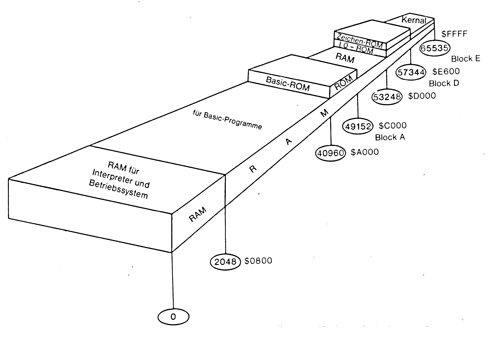
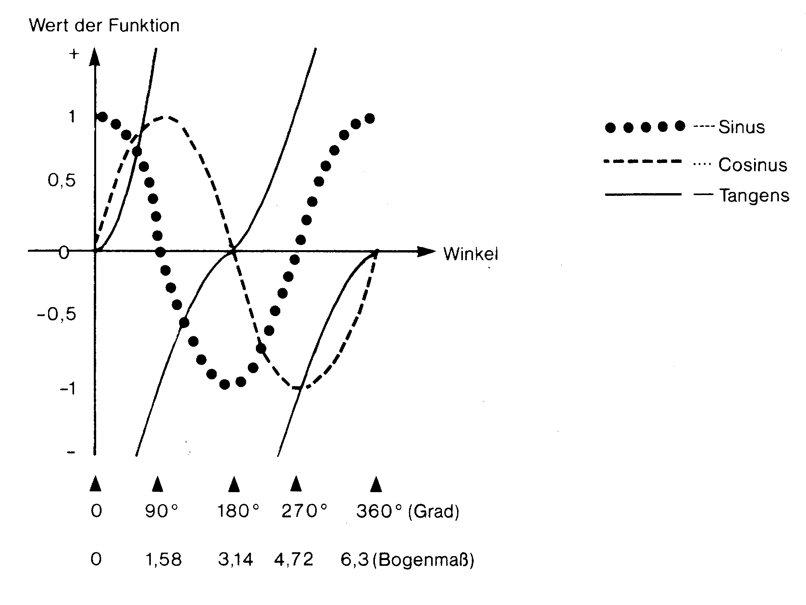
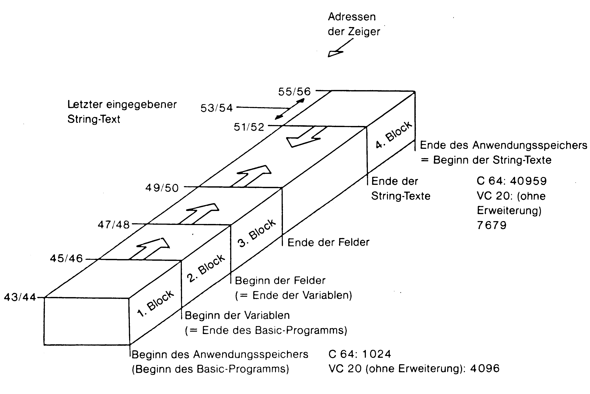
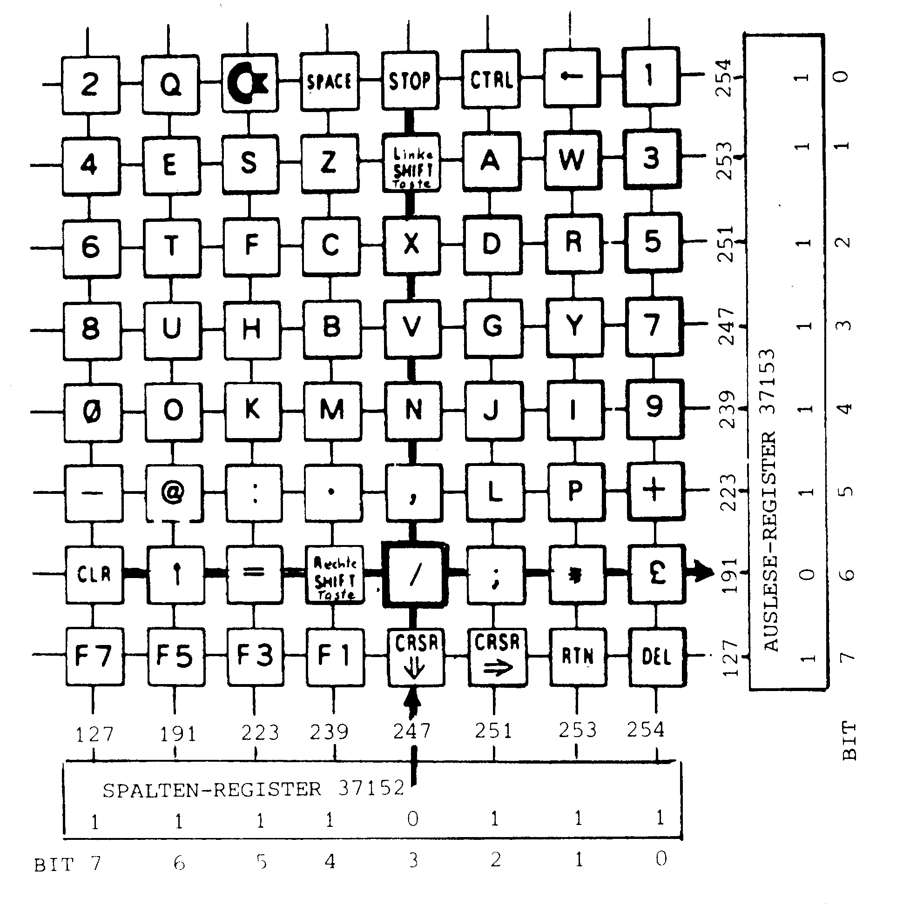
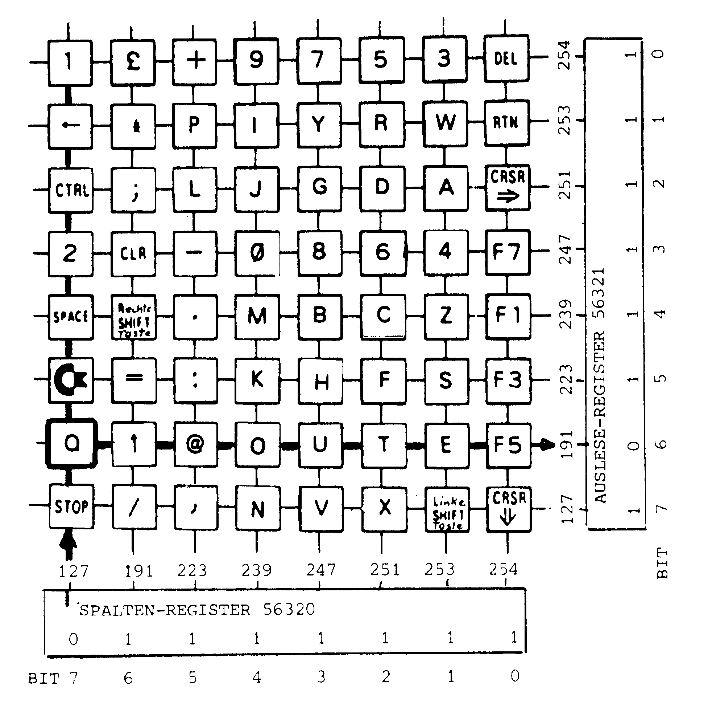
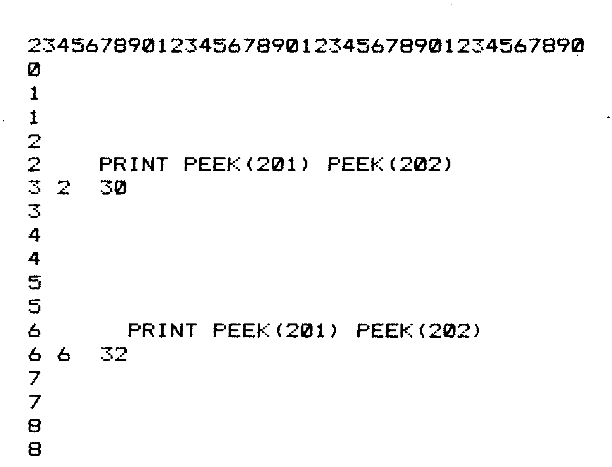
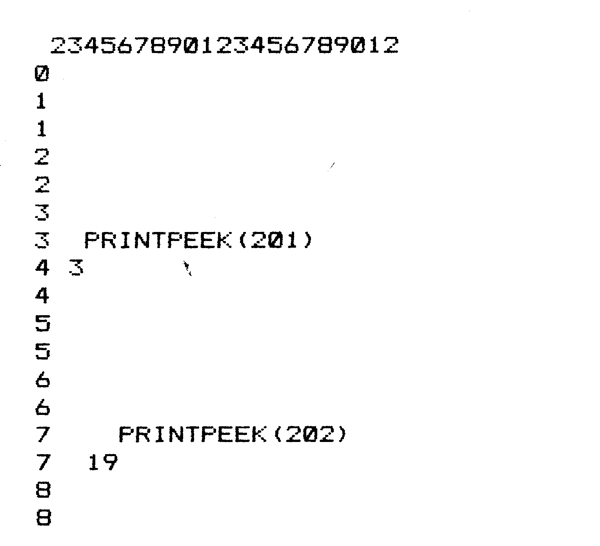

Memory Map mit Wandervorschlägen
Es steckt sehr viel im C 64. Wir werden Ihnen im Rahmen dieses Kurses die Bedeutung und Anwendung der Speicher und Register von Betriebssystem und Interpreter näherbringen.
Teilweiser Nachdruck aus 64'er 11/84, S. 133 (Teil 1: Einführung, Adresse 0 bis 2 mit der RAM-ROM-Umschaltung, Texteinschübe Nr. 1 und 3), 64'er 12/84, S. 132 (Teil 2: Adresse 3 bis 17, Texteinschübe Nr. 4 und 5), 64'er 1/85, S. 126 (Teil 3: Adresse 18 bis 44, Texteinschübe Nr. 6 und 7), 64'er 2/85, S. 150 (Teil 4: Adresse 45 und 46, Texteinschübe Nr. 8 und 9), 64'er 3/85, S. 144 (Teil 5: Adresse 47 bis 56, Texteinschübe Nr. 10 und 11), 64'er 4/85, S. 144 (Teil 6: Adresse 57 bis 79, Texteinschub Nr. 12), 64'er 6/85, S. 120 (Teil 7: Adresse 144 bis 152, Texteinschub Nr. 14, mit der Korrektur zu Adresse 65 und 66), 64'er 7/85, S. 140 (Teil 8: Adresse 153 bis 157, Texteinschub Nr. 15), 64'er 8/85, S. 129 (Teil 9: Adresse 80 bis 143, Texteinschub Nr. 13), 64'er 9/85, S. 112 (Teil 10: Adresse 158 bis 182, Texteinschübe Nr. 16 bis 18), 64'er 10/85, S. 133 (Teil 11: Adresse 183 bis 198, Texteinschübe Nr. 19 und 20), 64'er 11/85, S. 145 (Teil 12: Adresse 199 bis 207, Texteinschub Nr. 21), 64'er 12/85, S. 146 (Teil 13: Adresse 208 bis 255, Texteinschübe Nr. 22 und 23), 64'er 1/86, S. 128 (Teil 14: Adresse 256 bis 645, Texteinschübe Nr. 24 und 25), 64'er 2/86, S. 145 (Teil 15: Adresse 646 bis 658, Texteinschübe Nr. 26 und 27), 64'er 3/86, S. 122 (Teil 16: die RS232-Schnittstelle, Adresse 659 bis 673, Texteinschübe Nr. 28 bis 30), 64'er 5/86, S. 154 (Teil 17: Adresse 674 bis 787, Texteinschübe Nr. 31 bis 33) und 64'er 6/86, S. 145 (Teil 18: Adresse 788 bis 1023, Texteinschübe Nr. 34 bis 36). Vorspann, Inhaltsverzeichnis der Texteinschübe und Tabellen, Überleitungen und Schlußabsätze sind für dieses Sonderheft neu geschrieben; die Reihenfolge folgt den Adressen, nicht den Folgen.
Dieser Kurs ist eine zusammenhängende Wiedergabe einer Serie von Aufsätzen, die im 64'er, Ausgabe 11, November 1984 angefangen hat und sich in 18 Folgen bis Ausgabe 6, Juni 1986, hinzog.
Die vorliegende Fassung hat profitiert von vielen Zuschriften, die ich im Laufe des Kurses erhalten habe, mit Kritik, Hinweisen auf Fehler, Fragen und Verbesserungsvorschlägen. Für diese Mitarbeit der Leser möchte ich mich an dieser Stelle recht herzlich bedanken.
Ein Inhaltsverzeichnis der Adresse ist wenig sinnvoll. Ich habe allerdings die Adressen in einer Liste zusammengefaßt, geordnet nach ihren Funktionen, nicht nach ihrer Reihenfolge.
Dadurch soll Ihnen eine weitere Möglichkeit zum Nachschlagen geboten werden.
Auflisten kann ich lediglich die Texteinschübe und die Tabellen, zur Übersicht für eilige Sucher.
Hinweise und Tips über nützliche PEEK- und POKE-Adressen gehören zum Standard-Repertoire einer Computer-Zeitschrift. Ebenso häufig werden Leserfragen zu diesem Thema gestellt, obwohl mehrere Handbücher für die beiden Heimcomputer von Commodore bereits Speicherlisten (auf englisch »Memory Map«) enthalten.
Warum ich mich jetzt auch noch mit diesem Thema befassen will, hat zwei Gründe. Zum einen stört mich, daß ein Hinweis wie:
»...mit POKE 19,1 läßt sich das Fragezeichen bei INPUT-Befehlen unterdrücken...«
zwar richtig und auch anwendbar ist, aber halt nicht erklärt, was da eigentlich passiert und welche Folgen das für ein Programm haben kann. Zum anderen vermisse ich speziell in den Speicherlisten nähere, auch für den Anfänger verständliche und irgendwann einmal verwertbare Angaben.
Ich habe mir deshalb vorgenommen, Ihnen die Bedeutung und Anwendungen der PEEK- und POKEbaren Adressen, – sozusagen eine Wanderkarte mit Tourenvorschlägen und Sehenswürdigkeiten – in Form von Beispielen und Kochrezepten näherzubringen. Mir ist durchaus bewußt, daß das kein leichtes Unterfangen ist, da ich möglichst ohne Fach-Jargon auch für Nichttechniker verständlich bleiben möchte, und da die Zahl der zu behandelnden Adressen recht hoch ist. Ich werde also um Kompromisse wohl manchmal nicht herumkommen. Bevor wir anfangen, möchte ich noch einen kleinen »Arbeitsplan« machen.
- Zur Methode:
Meine Erklärungen sind so aufgebaut, daß sie am besten vor dem Computer mit der Zeitschrift auf den Knien nachvollziehbar sind, also »Lies und Tipp«.
Längere Erklärungen oder Beispiele, die den Rahmen einer Adressenbeschreibung sprengen würden, oder die von generellem Interesse sind, werden in gesonderten Texteinschüben behandelt. - Zum Adressenbereich:
Prinzipiell sind natürlich alle RAM-Adressen (RAM = Lese- und Schreibspeicher) POKEbar und kämen daher in Betracht. Wir werden uns aber nur den Bereich von 0 bis 1023 vornehmen. - Zum Computer:
Der genannte Speicherbereich hat mit wenigen Ausnahmen für VC 20 und C 64 die gleiche Bedeutung. Ich werde daher beide Computer gleichzeitig behandeln und auf Unterschiede jeweils gezielt hinweisen. - Der erste Hinweis:
In Tabelle 1 sind die Unterschiede in groben Umrissen zusammengefaßt. - Zur Darstellung:
Die Kenntnis der Bedeutung dieser Speicherzellen kommt auch Programmen in Maschinensprache zugute. Ich gebe daher alle Adressen sowohl als Dezimal- als auch als Hexadezimalzahl (mit vorgestelltem »$«) an. - Zu den Adressen:
Wenn in die zur Diskussion stehenden Speicherzellen eine Adresse aus dem erlaubten Bereich 0 bis 65535 ($0 bis $FFFF) hineingeschrieben wird, geschieht das immer mit der Aufteilung in einen niederwertigen Teil (Low Byte) und einen höherwertigen Teil (High Byte). Das Rezept zur Umrechnung finden Sie im Texteinschub Nr. 2 »Die Low-/High-Byte-Darstellung«.
| Adressen | Unterschied |
|---|---|
| 0 - 2 | sind verschieden |
| 3 - 672 | haben gleiche Funktionen |
| 673 - 677 | im VC 20 nicht benutzt |
| 678 - 767 | in beiden nicht benutzt |
| 768 - 783 | sind bei beiden gleich |
| 784 - 787 | im VC 20 nicht benutzt |
| 788 - 819 | haben gleiche Funktionen |
| 820 - 1023 | sind bei beiden gleich |
Wozu brauchen das Betriebssystem und der Basic-Übersetzer RAM-Speicherzellen?
Auf den ersten Blick ist nicht verständlich, warum die Speicherzellen von 0 bis 1023 feste Bedeutung haben und für normale Programme nicht zur Verfügung stehen. Wenn sie schon, wie es heißt, vom Betriebssystem und dem Übersetzer-Programm verwendet werden, warum stehen sie dann nicht gleich im ROM-Speicher bei allen anderen Teilen dieser Systeme?
Ein Computer führt einen Programmschritt nach dem anderen aus, ganz stur, ohne eigene Entscheidungsfähigkeit, es sei denn, das Programm schreibt derartige Entscheidungen vor. Das Betriebssystem ist sozusagen im ROM eingefroren beziehungsweise festgeschrieben. Das würde aber bedeuten, daß der Computer keine Variationsmöglichkeiten hat, und daß alle Programme in gleicher Weise ablaufen. Aber das stimmt natürlich nicht! Alle Programme sind verschieden, sie belegen einen verschieden langen Speicherbereich und verarbeiten die unterschiedlichsten Variablen. Wir geben verschiedene Zeichen mit der Tastatur ein, der Computer wartet, bis eine Taste der Datasette gedrückt ist und so weiter.
Dafür braucht das Betriebssystem einen Speicherbereich, der variabel ist, in den es Zwischenwerte ablegen und später wieder auslesen kann.
Und das ist genau der Speicherbereich, der uns interessiert, nämlich von 0 bis 1023, womit wir wieder beim Thema wären.
Jetzt aber geht es los und zwar gleich in die vollen. Denn ausgerechnet die ersten drei Speicherzellen haben laut Tabelle bei beiden Computern eine verschiedene Bedeutung und zusätzlich gehören sie mit zu den kompliziertesten.
Adresse 0 bis 2 ($0 bis $2) beim VC 20:
Sprungbefehl und wählbare »Sprungadresse« des USR-Befehls.
Die drei Adressen werden bei der Abwicklung des Basic-Befehls USR verwendet.
Hinweis: Diesen drei Adressen des VC 20 entsprechen beim C 64 die Adressen 784 ($310) bis 786 ($312). Die folgenden Erklärungen gelten also entsprechend auch für den C 64. Mit dem Basic-Befehl USR wird ein Programm, das in Maschinensprache geschrieben ist, gestartet.
Wie das im einzelnen geht und welche Rolle dabei die Speicherzellen 0 bis 2 spielen, ist im Texteinschub Nr. 1 »Der USR-Befehl« näher beschrieben.
Adresse 0 ($0) beim C 64:
Datenrichtungsregister für Ein-/Ausgabe-Port des 6510-Mikroprozessors
Adresse 1 ($1) beim C 64:
Datenregister für Ein-/Ausgabe-Port des 6510-Mikroprozessors
Adresse 2 ($2) beim C 64:
unbenutzt
Im Gegensatz zum Mikroprozessor des VC 20 hat der des C 64 sechs Ein-/Ausgabe-Leitungen, die einzeln programmierbar sind und so eine direkte Verbindung zwischen dem Mikroprozessor und der Außenwelt herstellen. Warum nur sechs Leitungen und nicht wie üblich acht? Auf dem Chip selbst könnten acht Bit verkraftet werden, aber es stehen nur sechs Anschlußbeine zur Verfügung.
Um trotzdem flexibel zu bleiben, ist dieses Tor zum Prozessor – zutreffend auch »Port« genannt – in beiden Richtungen begehbar. Jede einzelne der sechs Leitungen kann vom Programmierer auf »Eingang« oder auf »Ausgang« geschaltet werden. Dazu dient das Datenrichtungsregister in der Speicherzelle 0.
Datenrichtungsregister in Zelle 0
Wenn zum Beispiel in das Bit 4 der Zelle 0 eine 0 hineingePOKEt wird, ist die Leitung Nummer 4 des Ports auf »Eingang« geschaltet. Es gilt für alle 6 Bit (Nummer 0 bis 5):
— Bit auf 0 = Eingang
— Bit auf 1 = Ausgang
Beim Einschalten schreibt das Betriebssystem in dieses Register die Dualzahl ..101111 (dezimal=47). Das heißt also, daß nur die Leitung Nummer 4 als Eingang verwendet wird, alle anderen aber als Ausgang. Warum das so ist, sehen wir gleich. Vorher will ich aber noch erwähnen, daß im C 64 von dieser Flexibilität des Mikroprozessor-Ports kein Gebrauch gemacht wird. Ich habe das ganze Betriebssystem durchgesehen, aber das einzige Mal, wo die Speicherzelle 0 angesprochen wird, ist eben bei der Einschaltroutine.
Das heißt aber nicht, daß Sie, lieber Hobby-Programmierer, darauf verzichten müssen. Ich kann mir vorstellen, daß besonders Ausgefuchste unter Ihnen durch POKEn eines anderen Bitmusters in die Speicherzelle 0 vielseitige Befehle erzeugen und einsetzen können.
Das wird besonders deutlich, wenn Sie jetzt sehen, mit welchen Teilen des Computers diese sechs Leitungen verbunden sind.
Datenregister in Speicherzelle 1
Mit diesem Register steuert der Mikroprozessor (und damit natürlich das Betriebssystem) die Auswahl von Speicherblöcken und den Betrieb mit dem Kassettenrecorder. Dem Programmierer steht diese Möglichkeit über POKEn auch zur Verfügung.
Bit 0
schaltet den Speicherbereich 40960 bis 49151 ($A000 bis $BFFF) zwischen dem Basic-Übersetzer (Interpreter) im ROM und freiem RAM um (Normalzustand=1).
Bit 1
schaltet den Speicherbereich 57344 bis 65535 ($E000 bis $FFFF) zwischen dem Betriebssystem (Kernel) im ROM und freiem RAM um (Normalzustand =1).
Bit 2
schaltet den Speicherbereich 53248 bis 57343 ($D000 bis $DFFF) zwischen Zeichen-ROM und Ein-/Ausgabe-ROM um (Normalzustand = 1).
Bit 3
sendet serielle Daten zum Kassettenrecorder (Normalzustand =0).
Bit 4
prüft, ob eine der Tasten des Recorders gedrückt ist, welche den Motor einschalten (Normalzustand =1).
Bit 5
schaltet den Motor des Recorders ein und aus (Normalzustand = 1).
Die RAM-ROM-Umschaltung
Sie wissen, daß Ihr C 64 deswegen so heißt, weil er 64 KByte Speicherplätze hat. Nur stimmt das nicht! Er hat nämlich 88 KByte und müßte eigentlich C 88 heißen.
Da mit den 16 Bit der High-/Low-Byte-Methode (siehe Texteinschub Nr. 2) nur 64 KByte adressierbar sind, müssen die restlichen 22KByte bei Bedarf eingeschoben werden – und das machen die oben erwähnten Bit 0 bis 2 des Datenregisters.
In Bild 1 sehen Sie die drei oben erwähnten Speicherblöcke, die sowohl mit RAM als auch mit ROM belegt sind, einer davon gleich doppelt. Ich habe ihnen folgende Namen gegeben:

— 40960 bis 49151 ($A000 bis $BFFF) = BLOCK A
— 53248 bis 57343 ($D000 bis $DFFF) = BLOCK D
— 57344 bis 65535 ($E000 bis $FFFF) = BLOCK E
Tabelle 2 gibt Ihnen die Übersicht über die gemeinsame Wirkung der Bit 0, 1 und 2 des Datenregisters auf den jeweiligen Inhalt der Speicherblöcke.
| Bit # | 2 | 1 | 0 | DEZ | HEX | BLOCK A | BLOCK D | BLOCK E |
|---|---|---|---|---|---|---|---|---|
| 1 | 1 | 1 | 55 | $37 | Basic | I/O | Kernal | |
| 1 | 1 | 0 | 54 | $36 | RAM | I/O | Kernal | |
| 1 | 0 | 1 | 53 | $35 | RAM | I/O | RAM | |
| 1 | 0 | 0 | 52 | $34 | RAM | RAM | RAM | |
| 0 | 1 | 1 | 51 | $33 | Basic | Zeichen | Kernal | |
| 0 | 1 | 0 | 50 | $32 | RAM | Zeichen | Kernal | |
| 0 | 0 | 1 | 49 | $31 | RAM | Zeichen | RAM | |
| 0 | 0 | 0 | 48 | $30 | RAM | RAM | RAM |
Dabei bedeuten
- Basic: Basic-Übersetzer (Interpreter)
- I/O: Ein-/Ausgabe-Register
- Zeichen: Zeichenspeicher
- Kernal: Betriebssystem
- RAM: frei verfügbarer Speicher
Der Vollständigkeit halber muß ich hier noch erwähnen, daß neben den drei ersten Bits der Speicherzelle 1 noch zwei weitere Signale die RAM/ROM-Umschaltung beeinflussen. Es sind das die Leitungen auf Pin 8 und 9 des Erweiterungssteckers (GAME und EXROM), welche durch Spiel- und Programmodule benutzt werden. Eine genaue Beschreibung der dadurch erzeugten sinnvollen Speicherkombinationen finden Sie in dem Buch »64 Intern« von Data Becker ab Seite 14. Zwei Anwendungsbeispiele dieser Umschaltung finden Sie im Texteinschub Nr. 3 »Manipuliertes Basic«.
Betrieb des Kassettenrecorders
Bit 3, 4 und 5 regeln, wie schon gesagt, den Betrieb des Kassettenrecorders.
Zu Bit 3 ist oben schon alles Notwendige gesagt.
Bit 4 ist im Normalzustand auf 1, »normal« heißt hier, solange keine der Motor-Tasten der Datasette (PLAY, REWIND, FAST FORWARD) gedrückt ist. Zur Probe:
10 X=PEEK(1)
20 PRINT X
40 GOTO 10Die schon erwähnte »Normalzahl« 55 (dual = 110111) läuft als Zahlenband solange, bis eine der besagten Tasten gedrückt wird. Dann läuft eine 7 (dual = 000111). Warum auch Bit 5 zu 0 wird, kommt später zur Sprache.
Mit einer kleinen Erweiterung der drei Zeilen können Sie in einem Programm den Status der Motor-Tasten abfragen. Ergänzen Sie:
30 IF X=7 THEN 50
50 PRINT »TASTE GEDRUECKT«Um nur Bit 5 abzufragen, schreiben wir besser:
30 IF (X AND 16)=0 THEN 50Diese Abfrage kann allerdings nicht unterscheiden, welche der drei Tasten der Datasette gedrückt worden ist. Außerdem funktioniert das alles nur, wenn – wie im »Normalfall« – das Bit 4 des Datenrichtungsregisters (Speicherzelle 0) auf 0 (Eingang) steht.
Bit 5 schaltet den Motor der Datasette ein und aus. Es bietet sich an, damit per Programm die Datasette zu schalten – wenn so etwas nützlich ist. Leider ist dieses Bit etwas schwieriger zu handhaben, da es in der Interrupt-Routine des Betriebssystems eine Rolle spielt.
Die Tasten der Datasette werden nämlich 60mal in der Sekunde abgefragt. Wenn keine Taste gedrückt ist, setzt das Betriebssystem sowohl das sogenannte »Interlock«-Register in Speicherzelle 192 auf 0 als auch Bit 5 der Zelle 1 auf 1, wodurch der Motor ausgeschaltet wird beziehungsweise bleibt. Da kann man nicht dagegen an. Wir haben nur eine Chance, wenn eine Taste bereits gedrückt ist und der Kassettenmotor schon läuft.
Dann nämlich können wir zuerst das Interlock-Register mit einem Wert größer als 0 lahmlegen:
POKE 192,255Jetzt läßt sich der Motor der Datasette mit Bit 5 steuern:
POKE 1,39beziehungsweise
POKE 1,PEEK(1) OR 32schaltet den Motor aus,
POKE 1,7beziehungsweise
POKE 1,PEEK(1) AND 31schaltet den Motor ein.
Das Interlock-Register in Speicherzelle 192 werde ich später noch einmal erwähnen, da es seine Funktion auch beim VC 20 ausübt, allerdings mit anderen Ein-/Ausgangs-Ports. Das ist alles, was zur Speicherzelle 1 zu sagen ist.
Ab Speicherzelle 3 bis zur Speicherzelle 672 gelten alle Angaben sowohl für den C 64 als auch für den VC 20, zumindest was die Bedeutung der Zellen betrifft. Ihr Inhalt kann entsprechend der verschiedenen Adressen der Betriebssysteme voneinander abweichen. Wie üblich werde ich natürlich jeweils darauf aufmerksam machen.
Adresse 3 und 4 ($3 und $4)
Vektor auf die Routine zur Umwandlung einer Gleitkommazahl in eine ganze Zahl mit Vorzeichen
In diesen beiden Speicherzellen steht also ein Vektor. Was das ist, wird im Texteinschub Nr. 4 näher erläutert. Beim VC 20 deutet dieser Vektor auf die Adresse 53674 ($D1AA), beim C 64 auf 45482 ($B1AA). Sie können das mit
PRINT PEEK (3)+256*PEEK (4)leicht nachprüfen. Ab diesen Adressen beginnt im Basic-Übersetzer (Interpreter) ein Programm, welches – natürlich in Maschinensprache – eine Gleitkommazahl in eine ganze Zahl umwandelt.
Diejenigen Leser, die mit Gleitkommazahlen nicht so vertraut sind, möchte ich auf den Texteinschub Nr. 5 verweisen. Er ist nur eine kleine Einführung. Eine detaillierte Beschreibung finden Sie im Assemblerkurs (Teil 8) von Heimo Ponnath (Ausgabe 4/85) beziehungsweise im 64er-Sonderheft 8/85, ab Seite 42.
Dieses Umwandlungsprogramm steht nicht nur den Maschinen, sondern auch den Basic-Programmierern zur Verfügung, allerdings nur über den USR-Befehl und da auch nur, wenn der »Floating Point Accumulator« #1 (FAC1) in den besagten Adressen 97 bis 102 mitbenutzt wird. Ich verschiebe daher alle weiteren Details auf unsere Ankunft bei diesen Speicherzellen.
Adresse 5 und 6 ($5 und $6)
Vektor auf die Routine zur Umwandlung einer ganzen Zahl in eine Gleitkommazahl
Dieses Programm ist die Umkehrung der oberen Routine. Sie beginnt beim VC 20 ab Speicherzelle 54161 ($D391), beim C 64 ab 45969 ($B391). Da hier prinzipiell dasselbe gilt wie oben, möchte ich nur kurz den Vorteil beleuchten, den derartige Vektoren haben. Eigentlich könnten wir direkt auf die im Vektor enthaltenen Adressen springen – wenn wir sie kennen.
Ein Sprung auf die Adresse des Vektors erlaubt uns jedoch immer die völlige Ignoranz seines Inhalts – und Commodore erlaubt die Änderung der Adressen im Basic-Übersetzer, wie es ja beim C 64 gegenüber dem VC 20 auch gemacht worden ist, ohne daß vorhandene Programme umgeschrieben werden müssen.
Adresse 7 ($7)
Suchzeichen zur Prüfung von Texteingaben in Basic
Diese Speicherzelle wird viel von denjenigen Basic-Routinen als Zwischenspeicher benutzt, die den direkt eingegebenen Text absuchen, um Steuerzeichen (Gänsefüße, Kommata, Doppelpunkte und die Zeilenbeendigung durch die RETURN-Taste) rechtzeitig zu erkennen. Normalerweise wird in der Zelle 7 der ASCII-Wert dieser Zeichen abgelegt. Die Speicherzelle 7 wird aber auch von anderen Basic-Routinen benutzt. Sie ist daher für den Programmierer praktisch nicht zu verwerten.
Adresse 8 ($8)
Suchzeichen speziell für Befehlsende und Gänsefüße
Wie Speicherzelle 7 dient auch die Zelle 8 als Zwischenspeicher für Basic-Texteingabe und zwar während der Umwandlung von Basic-Befehlen in den vom Computer verwendeten Befehlscode (Tokens). Die Speicherzelle 8 ist in Basic nicht verwertbar.
Adresse 9 ($9)
Spaltenposition des Cursors vor dem letzten TAB- oder SPC-Befehl
Speicherzelle 9 wird von den Basic-Befehlen TAB und SPC verwendet. Vor ihrer Ausführung wird die Nummer der Spalte, in der sich der Cursor befindet, aus der Speicherzelle 211 ($D3) nach 9 gebracht, von wo sie geholt wird, um die Position des Cursors nach der Ausführung von TAB und SPC auszurechnen.
Diese komplizierte Erklärung können wir durch Ausprobieren deutlicher machen. Dazu PRINTen wir 16mal den Buchstaben X hintereinander (Semikolon !), allerdings mit SPC (2) jeweils um 2 Spalten versetzt.
10 FOR I=0 TO 15
20 PRINT SPC (2) "X";
30 PRINT PEEK (9);
40 NEXT INach jedem X wird durch Zeile 30 die »alte« Cursor-Spaltenposition ausgedruckt und zwar in derselben Zeile, ausgelöst durch das Semikolon. Dadurch erhöht sich laufend die in Speicherzelle 9 stehende Positionsangabe des Cursors. Wir erhalten folgenden Ausdruck:
..X.0...X.6...X.12...X .19...X.26...X.33...X. 40...X.47...X.54...X.6 1...X.68...X.75...X.82 ...X.1...X.7...X.13...
Sie können die Positionsnummer nachrechnen. Berücksichtigen Sie aber dabei, daß bei PRINT vor und nach jeder Zahl eine Stelle frei bleibt, die erste für das Vorzeichen, die zweite wegen des Abstandes.
Wichtig ist außerdem, daß die maximal mögliche Spaltenzahl nicht die Bildschirmspaltenzahl, sondern die »logische« Spaltenzahl ist, also 88 beim VC 20 und 80 beim C 64.
Wir können die Cursorposition in Adresse 9 auch abfragen und ein Programm damit steuern. Fügen Sie einfach in das obige Programm die folgende Zeile 35 ein:
35 IF PEEK (9)=33 THEN PRINT"END": ENDSobald Position 33 erreicht ist, bleibt das Programm stehen.
Adresse 10 ($A)
Flagge für LOAD oder VERIFY
In Zelle 10 steht eine 0, wenn geladen wird und eine 1 bei einem VERIFY. Warum das so ist, will ich kurz erläutern:
Die Basic-Routinen für LOAD beziehungsweise für VERIFY sind völlig identisch. Was das Betriebssystem hinterher daraus machen muß, ist natürlich unterschiedlich. Das Basic erspart sich eine doppelte Routine, zeigt aber mit der Flagge in Speicherzelle 10 den Unterschied an.
Erwähnenswert ist noch, daß das Betriebssystem in einer Art Nationalismus seine eigene Flagge aufzieht: Den Unterschied zwischen LOAD und VERIFY speichert es seinerseits in Zelle 147 ($93) ab. Soweit ich es sehen kann, sind Inhalt und Bedeutung beider Speicherzellen völlig identisch.
Ich habe für Sie zwar kein Kochrezept zur Anwendung der LOAD-VERIFY-Flagge in einem Programm vorrätig, möchte Sie aber trotzdem ein bißchen zum Spielen anregen. Um meine Erklärung nachzuvollziehen, tippen Sie bitte direkt LOAD ein. Den Ladevorgang brechen Sie mit der STOP-Taste ab und fragen dann den Inhalt der Zelle 10 ab mit
PRINT PEEK (10)Wir erhalten eine 0.
Wiederholen Sie bitte diesen Vorgang, aber mit VERIFY. Wir erhalten jetzt eine 1 – Quod erat demonstrandum.
Wir können auch in die Zelle 10 hineinPOKEn. Die »Wachablösung« zwischen Basic und Betriebssystem unter Hissen der Flagge in Zelle 10 findet beim VC 20 in der Speicherzelle 57705, beim C 64 in 57708 statt. Bevor wir diese Maschinenroutine mit SYS 57705 (SYS 57708) starten, geben wir mit dem Inhalt der Speicherzelle 10 an, ob es ein LOAD oder ein VERIFY sein soll.
Legen Sie ein Band mit Programm in die Datasette. Um ein LOAD zu erzeugen, geben wir direkt ein:
POKE 10,0:SYS 57705
(POKE 10,0:SYS 57708)Entsprechend der Anweisung auf dem Bildschirm drücken Sie PLAY, und das Auffinden des ersten Programms wird mit LOAD gemeldet. Machen Sie das Ganze noch einmal, diesmal aber POKEn Sie bitte eine 1 in die Zelle 10. Jetzt meldet das Betriebssystem das Auffinden des Programms mit VERIFY.
Wie gesagt, vielleicht fällt Ihnen eine Anwendung dafür ein.
Adresse 11 ($B)
Flagge für den Eingabepuffer/Anzahl der Dimensionen von Zahlenfeldern (Arrays)
Alle Buchstaben und Zeichen, die mit der Tastatur direkt eingetippt werden, kommen in einen Eingabe-Pufferspeicher. Er beginnt ab Speicherzelle 512 ($200). Sobald die RETURN-Taste gedrückt wird, wandelt eine Routine des Basic-Übersetzers den Text in Codezahlen (Tokens) um. Diese Routine und eine andere, welche die Zeilen eines Programms aneinanderhängt, verwenden die Zelle 11 als Zwischenspeicher.
Sobald die Textumwandlung beendet ist, steht in Zelle 11 eine Zahl, die die Länge der Token-Zeile angibt.
Die Zelle 11 wird außerdem noch von den Basic-Routinen benutzt, die ein Feld (Array) aufbauen oder ein bestimmtes Element in einem Array suchen. Was ein Feld oder Array ist, finden Sie in den Commodore-Handbüchern gut beschrieben. Außerdem gehe ich bei der Behandlung der Speicherzellen 47 bis 50 näher darauf ein.
Diese Routinen also verwenden die Speicherzelle 11, um die Anzahl der verlangten DIMensionen und den für ein neu aufgebautes Feld nötigen Speicherbedarf zu berechnen.
Adresse 12 ($C)
Flagge für Basic-Routinen, die ein Feld (Array) suchen beziehungsweise aufbauen
Diese Speicherzelle wird von den Basic-Routinen als Zwischenspeicher benutzt, die feststellen, ob eine Variable ein Feld (Array) ist, ob das Feld bereits DIMensioniert worden ist, oder ob ein neues Feld die unDIMensionierte Zahl von 11 Elementen hat.
Adresse 13 ($D)
Flagge zur Bestimmung des Datentyps (Zeichenkette/String oder Zahl)
Diese Flagge zeigt den Routinen des Basic-Übersetzers an, ob es sich bei den zur Verarbeitung anstehenden Daten um einen String oder um Zahlenwerte handelt. Zeigt die Flagge 255 ($FF), ist es ein String. Bei 0 handelt es sich um Zahlen. Diese Bestimmung erfolgt jedesmal, wenn eine Variable definiert oder gesucht wird. Diese Flagge kann leider nicht durch ein Basic-Programm abgefragt werden.
Adresse 14 ($E)
Flagge zur Bestimmung des Zahlentyps (Ganze Zahl oder Gleitkommazahl)
Sobald durch die Flagge in der vorherigen Zelle 13 eine Zahl signalisiert wird, steht hier die Zahl 128 ($80), wenn es sich um eine ganze Zahl handelt, während eine 0 die Zahl als Gleitkommazahl identifiziert.
Damit wollen wir ein bißchen experimentieren. Zeile 10 definiert eine Gleitkommazahl, Zeile 20 druckt sie und die Flagge aus Zelle 14 aus.
10 A=13.41
20 PRINT A,PEEK (14)Wir erhalten die Zahl 13.41 und als Flagge eine 0.
30 B=INT (A)
40 PRINT B,PEEK (14)INT bildet die ganze Zahl von 13.41. Also müßte die Flagge in Zelle 14 auf 128 stehen. Weit gefehlt! Da intern auch die 13 als Gleitkommazahl berechnet wird, erhalten wir immer noch eine 0.
50 B%=A
60 PRINT B%,PEEK (14)Erst die Definition der Variablen B als ganze Zahl (mit %) ergibt die Flagge 128.
70 D=16*B%
80 PRINT D,PEEK (14)Die Multiplikation einer ganzen Zahl mit der Ganzzahl-Variablen B% fällt in dieselbe Kategorie wie Zeile 30 oben, da die Verarbeitung als Gleitkommazahl erfolgt. Also erhalten wir zu Recht eine 0. Erst wenn D als ganze Zahl (Zeile 90) ausgewiesen wird, steht die Flagge wieder auf 128:
90 D%=16*B%
100 PRINT D%, PEEK (14)Adresse 15 ($F)
Flagge bei LIST, Garbage Collection und Textumwandlung
Die Routine des LIST-Befehls muß unterscheiden zwischen Basic-Befehlen und normalem Text. Wenn eine Zeichenkette durch ein »Gänsefüßchen« identifiziert worden ist, wird die Flagge gesetzt, und der Text wird ausgedruckt.
Unter »Garbage Collection« (Müllabfuhr) wird die Routine des Betriebssystems verstanden, welche zu bestimmten Anlässen im Variablenspeicher alle nicht mehr benötigten Strings entfernt, um Platz zu schaffen. Dabei wird eine Flagge in Zelle 15 gesetzt, die anzeigt, daß eine Müllabfuhr bereits stattgefunden hat. Wenn bei der Speicherung eines neuen Strings zu wenig Speicherplatz vorhanden ist, wird bei der Flagge nachgesehen, ob gerade vorher schon durch die Müllabfuhr (Garbage Collection) der Speicher entrümpelt worden ist. Falls das der Fall ist, wird OUT OF MEMORY angezeigt, falls nicht, wird eine Müllabfuhr durchgeführt.
Schließlich wird Zelle 15 auch bei der Umwandlung von Basic-Befehlen in internen Codezahlen (Tokens) eingesetzt.
Adresse 16 ($10)
Flagge zur Anzeige eines Variablen-Feldes oder einer selbstdefinierten Funktion
Im Basic-Übersetzer gibt es eine Routine, die den Speicher absucht, ob es eine Variable mit bestimmten Namen bereits gibt. Wenn diese mit einer Klammer beginnt, wird die Flagge in Zelle 16 gesetzt, um anzuzeigen, daß es sich um eine Array-Variable oder um eine mit DEF FN selbstdefinierte Funktion handelt.
Adresse 17 ($11)
Flagge für INPUT, GET oder READ
Die Basic-Routinen für INPUT, GET und READ sind zum großen Teil identisch. Um Speicherplatz zu sparen, verwendet der Basic-Übersetzer die identischen Teile nur einmal. Um in die nichtidentischen Teile verzweigen zu können, wird in Zelle 17 angezeigt, um welchen der drei Befehle es sich gerade handelt. Die Flagge steht auf 0 für INPUT, auf 64 ($40) für GET und auf 152 ($98) für READ.
Mit dem folgenden kleinen Programm können wir das leicht nachprüfen.
10 DATA 3
20 READ A
30 PRINT PEEK (17)
40 INPUT B
50 PRINT PEEK (17)
60 GET C$:IF C$= " "THEN 60
70 PRINT PEEK (17)Zeile 10 und 20, 40 sowie 60 sind Anwendungen der drei zur Debatte stehenden Basic-Befehle. Nach der Durchführung jedes Befehls wird in den Zeilen 30, 50 und 70 die jeweilige Flagge ausgelesen.
Nach RUN erhalten wir als Resultat der Zeile 20 die Zahl 152, als Resultat von Zeile 30 die INPUT-Aufforderung mit Fragezeichen. Geben Sie irgendeine Zahl und RETURN ein. Wir erhalten so die 0. Die GET-Schleife in Zeile 40 wartet auf einen Tastendruck, dann erhalten wir 64.
Adresse 18 ($12)
1. Flagge für Vorzeichen bei SIN, COS und TAN
2. Flagge bei Vergleich
Zuerst kommt das Vorzeichen der trigonometrischen Funktionen an die Reihe.
Die Routinen des Basic-Übersetzers (Interpreter), welche die drei trigonometrischen Funktionen SIN, COS und TAN berechnen, verwenden die Speicherzelle 18 zur Bestimmung des Vorzeichens.
Zur Erinnerung: Die trigonometrischen Funktionen haben in den vier »Quadranten« des Kreises (0-90, 90-180, 180-270, 270-360 Grad) nicht unbedingt dieselben Vorzeichen. Die Vorzeichen ändern sich allerdings nur an den Grenzen der Quadranten, wie in Bild 2 zu sehen ist. Die Flagge in Zelle 18 gibt das Vorzeichen nicht direkt an, sondern auf Umwegen. Die Darstellung ist in der folgenden Tabelle zusammengefaßt.
| WINKEL | 0-90 | 90-180 | 180-270 | 270-360 |
|---|---|---|---|---|
| SIN | gleich | Wechsel | Wechsel | gleich |
| COS | 255 | 255 | 0 | 0 |
| TAN | 0 | 255 | 255 | 0 |

Dabei bedeutet »gleich«: 0-0-0-0 oder 255-255-255
»Wechsel«: 0-255-0-255
Da die Erklärung mit »gleich« beziehungsweise »Wechsel« nicht gerade einleuchtend ist, schlage ich vor, daß Sie sich das Ganze mit dem folgenden kleinen Programm selbst anschauen, welches für viele Werte des Winkels im Bogenmaß – und in kleinen Schritten – den Wert der Flagge, daneben den Winkel I und den Wert der Funktion mit Vorzeichen ausdruckt.
10 FOR I=0 TO 10 STEP 0.01
20 PRINT PEEK(18);INT(I*100)/100;SIN(I):NEXTDiese etwas umständliche Art, den Wert von I auszudrucken, vermeidet Rundungsfehler und begrenzt den Ausdruck auf zwei Dezimalstellen. Wenn Sie die Winkelwerte von I in Graden ausgedruckt haben wollen, können Sie eine andere Zeile 20 verwenden, welche die Umrechnungsformel vom Bogenmaß in Grade verwendet: Winkel in Grad = Winkel im Bogenmaß * 180/π
20 Print PEEK(18);INT(I*180/π);SIN(I):NEXTStatt SIN können Sie genauso gut COS und TAN einsetzen.
In Bild 2 sind nicht nur die Kurven und die Bereiche der Vorzeichen, sondern auch die Winkelbereiche sowohl im Bogenmaß als auch in Graden dargestellt.
Die Speicherzelle 18 wird auch noch von anderen Routinen des Basic-Interpreters beansprucht und zwar von allen, die einen Vergleich wie <, >, >= und so weiter durchführen. Entsprechend der Art des Vergleichs steht dann in der Zelle 18 eine Ziffer von 0 bis 6.
Das folgende Programm macht das deutlich.
10 A=2
20 FOR I=1 TO 3
30 IF I= A THEN PRINT I;PEEK(18);"="
40 IF I< >A THEN PRINT I;PEEK(18);"> <"
50 IF I> A THEN PRINT I;PEEK(18);">"
60 IF I< A THEN PRINT I;PEEK(18);"<"
70 IF I>=A THEN PRINT I;PEEK(18);">"="
80 IF I<=A THEN PRINT I;PEEK(18);"<"="
90 IF I<A OR I=A THEN PRINT I;PEEK(18);"< OR ="
100 NEXT IKurz zur Erklärung dieser Zeilen: In der FOR..NEXT-Schleife wird die Variable I mit der Konstanten A=2 verglichen. In den Zeilen 30 bis 90 werden alle möglichen Vergleichsoperatoren durchgeprüft. Jeder der zutrifft, druckt den Wert von I, den Wert der dann in Zelle 18 stehenden Flagge und schließlich den Vergleichsoperator aus. Aus dem Resultat dieses Programms läßt sich folgende Tabelle zusammenstellen:
| Vergleich | Flagge in 18 |
|---|---|
| < OR = | 0 |
| > OR = | 0 |
| > | 1 |
| = | 2 |
| >= | 3 |
| < | 4 |
| <> | 5 |
| <= | 6 |
Sie sehen, die Flagge für die kombinierten Vergleichsoperatoren entspricht der Summe ihrer Einzelwerte. Nur die Verknüpfung über OR nicht, denn die ergibt 0.
Adresse 19 ($13)
Flagge zur Kennzeichnung des laufenden Ein-/Ausgabegerätes
Immer dann, wenn von Basic Daten ein- oder ausgegeben werden, schaut die entsprechende Routine des Übersetzers in Zelle 19 nach, um welches Peripheriegerät es sich handelt. Zur Debatte stehen Tastatur, Datasette, RS232-User-Port, Bildschirm, Drucker und Floppy-Laufwerk.
Die Flagge ihrerseits ist ausschlaggebend für die feinen Unterschiede, wie zum Beispiel das Fragezeichen, bei Eingabe von der Tastatur (INPUT) oder die Anweisung »Press Play on Tape« bei Eingabe von der Datasette.
Beim Einschalten des Rechners setzt die Initialisierungsroutine des Betriebssystems, die beim VC 20 ab Adresse 58276 ($E3A4), beim C 64 ab 58303 ($E3BF) beginnt, die Flagge in Zelle 19 auf 0. Die Null bedeutet Eingabe über Tastatur und Ausgabe über Bildschirm.
Wenn Sie einen Disassembler haben, drucken Sie doch einmal das Assemblerlisting aus. Sie werden in Adresse 58324/ 58325 ($E3D4/E3D5), beim C 64 in 58354/58355 ($E3F2/E3F3) den Befehl finden, der eine Null nach Zelle 19 ($13) bringt.
Immer dann, wenn ein Programm nicht Tastatur und Bildschirm, sondern eines der oben genannten anderen Peripheriegeräte anspricht (indem mit OPEN.... eine Datei = Logical File eröffnet wird), wird in Zelle 19 die Nummer der gerade bearbeiteten Datei eingetragen, mit den bereits beschriebenen Konsequenzen.
Ich will hier nicht weiter darauf eingehen, da wir den Inhalt von Zelle 19 selbst nicht auslesen können. Er wird nämlich immer gleich wieder auf Null gesetzt.
Wir können ihn aber durch POKE verändern. Durch POKE 19,1 gaukeln wir dem Rechner vor, daß Ein- und Ausgabe über »externe« Geräte läuft, selbst wenn nur die Tastatur und der Bildschirm betrieben werden.
Wenn zum Beispiel der Rechner der Meinung ist, daß ein INPUT von der Datasette kommt, druckt er kein Fragezeichen aus; auch kein EXTRA IGNORED als Fehlermeldung bei zu zahlreicher Eingabe und das alleinige Drücken der RETURN-Taste ignoriert er auch, im Gegensatz zum »normalen« INPUT. Probieren Sie es aus:
10 INPUT "TEST";A$
20 PRINT A$In diesem Normalfall erscheint nach RUN darunter die Aufforderung TEST?
Eine Eingabe, zum Beispiel XX, erscheint mit einem Abstand daneben, und nach RETURN wird XX an den Anfang der nächsten Zeile gedruckt. Alle falschen Eingaben werden mit den üblichen Fehlermeldungen quittiert.
Jetzt fügen wir ein:
5 POKE 19,1Nach RUN erscheint wieder die Aufforderung TEST, aber ohne Fragezeichen. Die Eingabe XX wird ohne Abstand daneben gesetzt und nach RETURN mit einem Abstand in derselben Zeile weitergeschrieben.
Das Drücken der RETURN-Taste setzt den Cursor nicht wie üblich in die nächste Zeile, sondern schiebt ihn in derselben Zeile weiter.
Diesen zusätzlichen Effekt muß man beachten, da er sehr störend für den Verlauf eines Programms sein kann.
Man kann ihn natürlich auch nutzbringend einsetzen, hat er doch die Eigenschaft eines automatischen »Cursor UP«. Eine pfiffige Anwendung dieser Art wurde von Brad Templeton für den PET erfunden und ist von Jim Butterfield für eine MERGE-Routine mit dem Namen »Magic Merge« veröffentlicht worden.
Da diese Routine aber primär auf der Eigenschaft der Speicherzelle 153 basiert, werde ich sie dann erläutern, sobald wir bei der Zelle 153 angelangt sind.
Zurück zur Flagge in Zelle 19.
Umgekehrt können wir POKE 19,0 leider nicht nutzen, da die betroffenen Befehle GET, GET#, INPUT, INPUT# und PRINT # die Flagge sofort auf den richtigen Wert setzen. Nur PRINT und LIST tun das nicht, wie wir bei dem PRINT-Befehl oben ja gesehen haben.
Adresse 20 und 21 ($14 und $15)
Zeilennummer für LIST, GOTO, GOSUB und ON, Zeiger der Adresse bei PEEK, POKE, SYS und WAIT
In diesen Speicherzellen wird die Zeilennummer der Sprungbefehle GOTO, ON..GOTO und GOSUB sowie die Zeilenangabe beim LIST-Befehl gespeichert. Da die Werte bis maximal 65535 gehen können, braucht der Computer 2 Byte zur High-/Low-Byte-Darstellung.
Die GOTO-Routine (im VC 20 ab 51360 = $C8A0, im C 64 ab 43168 = $A8A0) vergleicht die Zahl in 20 und 21 mit der laufenden Zeilenzahl. Wenn sie kleiner ist, wird ab der ersten Zeile des Programms gesucht. Ist sie aber größer, dann beginnt die Suche ab der laufenden Zeilenzahl. Die Suche geht solange, bis die in 20 und 21 angegebene Zeilenzahl gefunden ist. Dann fährt das Programm mit dieser Zeile fort.
LIST speichert in 20 und 21 die höchste auszulistende Zeilennummer ab, falls keine Angabe beim LISTen gegeben worden ist, den Wert 65535 ($FFFF).
Die Befehle PEEK, POKE, SYS und WAIT verwenden diese Speicherzellen zur Angabe der Adressen, die dem Befehl immer folgen müssen.
Leider können wir die Speicherzellen 20 und 21 mit Basic-Programmen nicht bearbeiten; ihr Inhalt wird immer gleich auf 20 zurückgesetzt.
Adresse 22 ($16)
Zeiger auf den nächsten freien Speicherplatz im »Temporary String Descriptor Stack«
Dieser Zeiger bezieht sich in seiner Wirkung auf die übernächsten Speicherzellen 25 bis 33 ($19 bis $21).
Diese werden als Stapelspeicher (Stack) für Angaben über vorläufige Zeichenketten – auf englisch »Temporary String Descriptor« – verwendet.
Die Speicherzelle 22 ($16) ihrerseits enthält einen Zeiger auf den jeweils nächsten verfügbaren Platz in diesem Speicher ab Zelle 25. Da er eine Kapazität von 3 * 3 Byte hat, zeigt der Zeiger auf die Zelle 25 ($19), wenn er leer ist. Bei einem Eintrag zeigt er auf 28 ($1C), bei zwei Einträgen auf 31 ($1F) und schließlich auf 34 ($22), wenn der Speicher voll ist.
Eine Zeichenkette ist dann »vorläufig«, wenn sie noch nicht einer Stringvariablen zugeordnet worden ist, zum Beispiel »Mahlzeit« in dem Basic-Befehl
PRINT "MAHLZEIT"Beim Einschalten setzt das Betriebssystem mit der Einschaltroutine ab Adresse 58303 ($E3BF) im C 64, beim VC 20 ab 58276 ($E3A4) den Zeiger auf 25. Die Stringverwaltungsroutine ab 46215 ($B487) im C 64 beziehungsweise ab 54407 ($D487) im VC 20 fragt bei String-Eingaben die Flagge ab. Nach jeder Eintragung in den Speicher ab Zelle 25 wird der Zeiger um 3 weitergesetzt.
Sie können die Leerflagge 25 mit
PRINT PEEK (22)leicht nachprüfen.
Die anderen Eintragungen können nicht nachgeprüft werden, weil sie sofort auf 25 zurückgesetzt werden.
Wir können sie aber durch POKE beeinflussen; ob das sinnvoll ist, ist eine andere Frage.
10 POKE 22,34
20 PRINT "MAHLZEIT"Die Zahl 34 in Zelle 22 sagt dem Programm, daß der Speicher ab Zelle 25 voll ist. Wir bekommen statt der MAHLZEIT eine Fehlermeldung serviert.
Mit einem POKE-Befehl, der als Argument die für den vorgesehenen Zweck ungültige Zahl 35 verwendet:
POKE 22,35erreichen wir allerdings zwei interessante »Dreckeffekte«. Zum einen unterdrückt der Befehl die Ausgabe des READY, zum anderen aber bewirkt er, daß bei LIST ein Listing ohne Zeilennummern ausgedruckt wird, sowohl auf dem Bildschirm als auch mit dem Drucker.
Das billigste editierfähige Textverarbeitungssystem
Die Idee dazu habe ich von Mike Apsey's Hinweis in »Commodore User« Juli 1984. Mit Zeilennummern versehen, läßt sich jeder beliebige Text schreiben, verbessern, verschieben, abspeichern, aber nicht RUNen!!
Der POKE-Befehl von oben (POKE 22,35) gefolgt von einem CMD und LIST, druckt dann alles brav als reinen Text aus. Die maximale Zeilenlänge entspricht der Zeilenlänge des jeweiligen Computers. Probieren Sie es aus:
10 DER COMPUTER BIETET IN DER
20 DATENFERNÜBERTRAGUNG
30 UNGEAHNTE MÖGLICHKEITEN.
40 ABER DIE GEFAHR
50 USW. USW.
60:Jede Zeile wird mit der RETURN-Taste abgeschlossen. Damit auch alles gedruckt wird, muß – zumindest bei meinem Drucker (1526) – eine »Leerzeile« folgen (Zeile 60). Mit
POKE 22,35:OPEN 1,4:CMD 1:LISTwird der Text ohne Zeilennummern ausgedruckt. Sie können ihn vorher nach Belieben verändern.
Wie gesagt, nur nicht mit RUN starten, denn das bringt unweigerlich eine Fehlermeldung.
Adresse 23 und 24 ($17 und $18)
Zeiger auf die Adresse der letzten Zeichenkette im »Temporary String Stack«
Der Inhalt dieser 2 Byte zeigt auf den zuletzt benutzten Speicherplatz innerhalb der Adresse 22 bis 33. Das heißt, daß der Wert in 23 ($17) immer um 3 kleiner ist als der in 22 ($16), während der Wert in 24 ($18) eine Null ist.
Adresse 25 bis 33 ($19 bis $21)
Stapelspeicher für Angaben über vorläufige Zeichenketten
Das ist also der Speicherbereich, von dem in den beiden vorigen Abschnitten dauernd die Rede war. Ich gebe zu, »Descriptor Stack for Temporary Strings« drückt die Sache präziser aus als der deutsche Text.
Die Bedeutung eines »vorläufigen« Strings habe ich oben in der Beschreibung der Speicherzelle 22 erklärt.
Was ein Stapelspeicher (Stack) ist, entnehmen Sie bitte dem Texteinschub 6. Jeder der 3 Byte langen Angaben im Stack von 22 bis 33 enthält die Länge sowie die Anfangs- und Endadressen eines vorläufigen Strings, ausgedruckt als Verschiebung im Basic-Speicherbereich.
Adresse 34 bis 37 ($22 bis $25)
Verschiedene Zwischenspeicher
Diese vier Speicherzellen werden vom Basic-Übersetzer (Interpreter) für verschiedene Zwischenergebnisse und Flaggen benutzt, die aber dem Programmierer nichts nutzen.
Adresse 38 bis 42 ($26 bis $2A)
Arbeitsspeicher für arithmetische Operationen
Diese Speicherzellen werden von den Basic-Routinen bei der Multiplikation und Division als »Notizblatt« verwendet. Auch die Routinen, welche die erforderliche Speichergröße beim Definieren eines Zahlenfeldes (Array) ausrechnen, benutzen diesen Bereich.
Adresse 43 und 44 ($2B und $2C)
Zeiger auf den Anfang der Basic-Programme im Speicher
Dieser Zeiger, in der Low-/High-Byte-Darstellung, gibt dem Basic-Übersetzer an, ab welcher Speicherzelle das Basic-Programm beginnt. Normalerweise ist diese Adresse fest vorgegeben. Beim C 64 zum Beispiel zeigt der Zeiger auf 2049 ($801). Beim VC 20 ist die Lage schon schwieriger, denn der Speicherbeginn hängt davon ab, welche Speichererweiterung eingesetzt ist. Die folgende Tabelle 3 gibt darüber Auskunft.
| C 64 | 2049 ($801) |
| VC 20 (GV) | 4097 ($1001) |
| VC 20 (+3 K) | 1025 ($401) |
| VC 20 (+ 8 K) | 4609 ($1201) |
Mit dem Befehl
PRINT PEEK (43) + PEEK (44)*256läßt sich der jeweilige Beginn des Programmspeichers leicht feststellen. Mit einem POKE-Befehl kann der Programmierer diese Anfangsadresse verändern. Wozu das gut ist, fragen Sie?
Anwendung #1:
Nun, wenn Sie zum Beispiel ein Maschinenprogramm mit einem Basic-Programm gemeinsam betreiben wollen, brauchen Sie einen Speicherbereich für das Maschinenprogramm, der vom Basic-Programm nicht belegt wird. Wir sprechen vom »Schützen des Maschinenprogramms vor dem Überschreiben durch das Basic«. Der Speicherbereich eines Maschinenprogramms ist immer bekannt. Nach seinem letzten Speicherplatz kann das Basic-Programm beginnen.
Die Verschiebung der Anfangsadresse erfolgt in vier Schritten:
- Schritt: In den Speicherplatz vor dem neuen Basic-Bereich muß eine Null gePOKEt werden. Die Null dient zum Abgrenzen.
- Schritt: Die Adresse der ersten Speicherzelle wird in die Low-/High-Byte-Darstellung umgerechnet. Ich verweise dazu auf die Erklärung dieses Vorgangs im Texteinschub Nr. 1.
- Schritt: Das Low-Byte wird in die Speicherzelle 43, das High-Byte in die Zelle 44 gePOKEt.
- Schritt: Die Operation muß unbedingt mit dem Befehl NEW abgeschlossen werden, um sicherzustellen, daß auch alle anderen Zeiger auf ihren Anfangszustand gesetzt werden.
Im folgenden kleinen Programm wird angenommen, daß der Speicher bis zur Adresse 5000 ($1388) durch ein Maschinenprogramm belegt ist. Das Basic-Programm kann daher ab 5002 ($138A) anfangen, denn in 5001 muß ja eine Null stehen. Die Adresse 5002 teilt sich auf in ein High-Byte von INT (5002/256) = 19 und ein Low-Byte von 5002-(19*256) = 138.
10 POKE 5001,0
20 POKE 43,138
30 POKE 44,19
40 NEWDer Effekt einer solchen »Verbiegung« des Zeigers in 43 und 44 wird im Texteinschub Nr. 7 »Der sichtbare Basic-Speicher« demonstriert.
Neben der oben erwähnten Anwendung der Zeigerverbiegung gibt es noch andere Möglichkeiten:
Anwendung #2:
Christoph Sauer hat in seinem Kurs »Der gläserne VC 20« in Ausgabe 10/84 auf Seite 158 gezeigt, wie man mehrere Programme gleichzeitig im Speicher unterbringen und zwischen ihnen umschalten kann.
Anwendung #3:
Man kann zwei oder mehrere unabhängige Programme genau hintereinander in den Speicher bringen, um sie aneinander zu hängen, was dem im Commodore-Basic fehlenden Befehl MERGE entspricht. Dabei dürfen die Zeilennummern sich allerdings nicht überschneiden.
Anwendung #4:
Durch Hinaufschieben des Basic-Bereichs kann Platz geschaffen werden für selbstdefinierte Zeichen oder hochauflösende Grafik.
Die Speicherzellen-Paare von 45, 46 bis 55, 56 ($37 bis $38) zeigen auf weitere für Basic-Programme wichtige Speicherbereiche, die deswegen gemeinsam betrachtet werden sollten. Bild 5 stellt den Zusammenhang grafisch dar. In diesem Bereich werden alle Variablen eines Programms gespeichert. Zur Erinnerung: Wir unterscheiden zwischen »normalen« Variablen (numerische und String-Variable) und Feld-Variablen (Arrays). Dabei ist wichtig zu wissen, daß ein Basic-Programm während des Eintippens oder Einladens von Disk beziehungsweise Kassette in den 1. Block kommt. Während des Programmlaufs werden alle normalen Variablen in den 2. Block geschrieben, alle Felder (Arrays) in den 3. Block und schließlich der Text der Zeichenketten (Strings) sozusagen rückwärts vom Ende des Arbeitsspeichers in den 4. Block. Je nach Größe des Programms und nach Anzahl der Variablen wandern die Blockgrenzen nach oben beziehungsweise die von Block 4 nach unten. Wenn sie sich treffen beziehungsweise überschneiden, gibt es »OUT OF MEMORY«.

Diese Blockbewegung ist in Bild 5 durch die Pfeile dargestellt.
Adresse 45 und 46 ($2D und $2E)
Zeiger auf die Anfangsadresse des Speicherbereichs für Variable
Dieser Zeiger, in der Low/High-Byte-Darstellung, gibt dem Basic-Interpreter an, ab welcher Speicherzelle die Variablen eines Basic-Programms gespeichert sind. Da die Variablen direkt an das Basic-Programm anschließen, zeigt dieser Zeiger natürlich gleichzeitig auf das Ende des Basic-Programms.
Es muß betont werden, daß es sich nur um den Bereich der »normalen« Variablen handelt, also nicht um Felder (Arrays). Anders als der Zeiger in 43 und 44, der auf fest definierte Speicherzellen zeigt, liegt der Zeiger für den Variablen-Beginn nicht fest. Je nach Länge des Programms wandert er nach oben.
Sobald ein Programm eingetippt oder aus einem externen Speicher (Diskette, Kassette) eingelesen ist, wird der Zeiger in 45 und 46 durch RUN auf ein Byte hinter das Programmende gesetzt und alle Variablen werden in der Reihenfolge ihres Auftretens gespeichert. Da normalerweise die Länge eines Basic-Programms während des Ablaufs konstant bleibt, werden die Variablen in ihrer Position auch nicht gestört.
Das bedeutet, daß sie sowohl vom Programm als auch vom Programmierer nach einer Unterbrechung abgefragt werden können. Nur wenn das Programm modifiziert wird, wandert der Zeiger zusammen mit den Variablen entsprechend weiter.
Denselben Effekt wie das oben erwähnte RUN haben übrigens auch die Befehle NEW, CLR und LOAD. Eine Ausnahme bildet das LOAD innerhalb eines Programms, welches den Zeiger nicht zurücksetzt. Dadurch wird ein Aneinanderhängen von mehreren Programmen samt Variablen-Weiterverwendung unter bestimmten Voraussetzungen ermöglicht.
Die Bearbeitung der Variablen durch das Basic-Programm und die daraus resultierenden Kochrezepte für den Programmierer sind im Texteinschub Nr. 8 »Normale Variable in BASIC« separat erläutert.
Die verschiedenen Typen der Variablen und ihre Darstellung im Speicher finden Sie im 64'er, Ausgabe 10/84, Seite 157 und noch ausführlicher in Ausgabe 11/84, Seite 124, dargestellt und erklärt.
Für diejenigen Leser, welche kein Monitor- beziehungsweise Disassembler-Programm haben oder benutzen können, ist im Texteinschub Nr. 9 »Darstellung der normalen Variablen im Speicher« eine kleine Anleitung gegeben, wie sie die Variablendarstellung mittels Basic anschauen können.
Adresse 47 und 48 ($2F und $30)
Zeiger auf die Anfangsadresse des Speicherbereichs für Felder (Arrays)
Dieser Zeiger, in der Low-/High-Byte-Darstellung, gibt dem Basic-Übersetzer (Interpreter) an, ab welcher Speicherzelle die Felder (Arrays) eines Basic-Programms gespeichert sind. Was Felder sind und wozu sie gebraucht werden, ist im Texteinschub Nr. 10 kurz erläutert. Da die Felder direkt nach den normalen Variablen gespeichert werden, zeigt dieser Zeiger natürlich gleichzeitig auf das Ende des Speichers für normale Variablen.
Durch POKEn einer Adresse in die Speicherzellen 47 und 48 kann der Speicherbereich am Anfang eines Programms beinahe beliebig verschoben werden. Beinahe deswegen, weil die Verschiebung im Zusammenhang mit den anderen Bereichen (siehe Bild 5) einen Sinn haben muß. Im übrigen gilt für diesen Zeiger dasselbe, was schon für den Zeiger in 45 und 46 gesagt worden ist. Die Darstellung der Feld-Variablen selbst kann mit der Methode angesehen werden, die im Texteinschub Nr. 11 erklärt ist.
Wie aus den Erklärungen hervorgeht, wird bei Feldern mit Zeichenketten (Strings) in dem von Zeiger 47 und 48 bezeichneten Speicherbereich nur die Definition beziehungsweise die Dimensionierung gespeichert. Die eigentlichen Zeichenketten stehen wie bei den normalen Variablen im vierten Block, vom Speicherende rückwärts angeordnet.
Adresse 49 und 50 ($31 und $32)
Zeiger auf die Endadresse (+1) des Speicherbereichs für Felder (Arrays)
Der Inhalt dieser Speicherzellen zeigt auf die Adresse, wo der Speicherbereich für Felder aufhört. Wie aus Bild 5 hervorgeht, werden die Zeichenketten vom Ende des verfügbaren RAM-Speichers rückwärts gespeichert. Man kann also auch sagen, daß der Zeiger in 49 und 50 die letzte mögliche Adresse für Zeichenketten angibt. Wenn in einem Programm neue Variablen definiert werden, rutscht diese Adresse weiter nach oben und nähert sich dem Ende der Zeichenketten, die durch den Zeiger in 51 und 52 angegeben wird.
Wenn sich die Speicherbereiche der Felder und Zeichenketten berühren, bleibt der Computer stehen und führt die »Garbage Collection« (Müllabfuhr) durch – ein Prozeß, in dem nicht mehr gebrauchte Zeichenketten entfernt und der Zeichenketten-Speicher reduziert wird. Ist danach immer noch kein Platz, wird OUT OF MEMORY gegeben.
Der Befehl FRE löst immer eine solche Garbage Collection aus und gibt dann die Differenz zwischen den Adressen in den Zeigern 49 und 50 und 51 und 52 als verbleibenden, noch verfügbaren, Speicherbereich aus.
Adresse 51 und 52 ($33 und $34)
Zeiger auf die untere Grenze des Speicherbereichs für den Text der Zeichenketten-Variablen
Der Inhalt dieser Speicherzellen zeigt in Low-/High-Byte-Darstellung auf das jeweilige untere Ende (siehe Bild 5) des Textspeichers von Zeichenketten. Er bezeichnet aber zugleich auch das obere Ende des frei verfügbaren RAM-Bereichs. Das entsteht dadurch, daß der Text der Zeichenketten vom Ende des RAM-Bereichs nach unten gespeichert wird. In Bild 5 ist das durch den Pfeil dargestellt.
Beim Einschalten des Computers und nach einem RESET wird dieser Zeiger auf das oberste Ende des RAM-Bereichs gesetzt. Beim C 64 ist das 40960 ($A000). Beim VC 20 hängt es von den eingesetzten Speichererweiterungen ab, ohne Erweiterung ist die Adresse 7680 ($1E00).
Der Befehl CLR setzt den Zeiger auf die Adresse, welche durch den Zeiger in den Speicherzellen 55 und 56 als das Ende des Basic-Speichers angegeben wird. Wozu das dient, erkläre ich Ihnen bei der Beschreibung dieses Zeigers weiter unten.
Adresse 53 und 54 ($35 und $36)
Zeiger auf die Adresse der zuletzt eingegebenen Zeichenkette
In diesen Speicherplätzen steht die Adresse (im vierten Block, siehe Bild 5) der Zeichenkette, die als letzte von Routinen (Programme, Direkteingabe) zur String-Manipulation abgespeichert worden ist. Mit dem folgenden kleinen Programm können Sie das genau sehen:
10 PRINT PEEK(53)+256*PEEK(54),
20 PRINT PEEK(51)+256*PEEK(52)
30 INPUT A$
40 GOTO 10Zeile 10 druckt uns zuerst (links) den Zeiger auf die zuletzt eingegebene Zeichenkette aus, Zeile 20 rechts daneben den Zeiger auf die untere Speichergrenze der Zeichenketten. Zeile 30 fordert zur Eingabe einer Zeichenkette auf.
Wenn Sie bei frisch eingeschaltetem Computer das Programm starten, sehen Sie eine 0 (=vorher noch kein String eingeben) und daneben die Adresse dezimal 40960 (C 64) beziehungsweise dezimal 7680 (VC 20 ohne Erweiterung). Wenn Sie auf das Fragezeichen des INPUT hin zum Beispiel ein A eintippen, erhalten Sie links den vorigen Wert von rechts und rechts jetzt eine um 1 kleinere Zahl. Eine weitere Eingabe von zum Beispiel XXXXX schiebt die alte rechte Zahl nach links und die neue wird um die Anzahl der Zeichen, also 5, verringert.
Adresse 55 und 56 ($37 und $38)
Zeiger auf das Ende des für Basic-Programme verfügbaren Speichers
Dieser Zeiger, in der Low-/High-Byte-Darstellung, gibt dem Basic-Übersetzer an, welches die höchste von Basic verwendbare Speicheradresse ist. Wie aus Bild 5 ersichtlich, ist diese Adresse zugleich der Anfang der als Variable abgespeicherten Zeichenkette (Strings).
Normalerweise ist diese Adresse fest vorgegeben. Die folgende Tabelle 4 gibt darüber Auskunft:
| Adresse | Zeiger in | ||
|---|---|---|---|
| 55 | 56 | ||
| C 64 | 40960 | 0 | 160 |
| VC 20 (Grundv.) | 7680 | 0 | 30 |
| VC 20 (+3 KByte) | 7680 | 0 | 30 |
| VC 20 (+8 KByte) | 16384 | 0 | 64 |
| VC 20 (+16 KByte) | 24576 | 0 | 96 |
| VC 20 (+24 KByte) | 32768 | 0 | 128 |
Beim Einschalten des Computers überprüft das Betriebssystem den gesamten RAM-Speicher, bis es zur ersten ROM-Speicherzelle kommt, setzt den Zeiger in 55 und 56 auf diese Adresse und druckt den bekannten Kopf mit der verfügbaren Speicherangabe auf den Bildschirm.
Normalerweise wird dieser Zeiger nicht geändert.
Es gibt aber zwei Gelegenheiten, bei denen eine Änderung dieses Zeigers sinnvoll beziehungsweise notwendig ist.
Anwendung 1:
Es kommt oft vor, daß der gesamte Speicher nicht ausschließlich für Basic benötigt wird, sondern daß ein freier Speicherbereich geschaffen wird, um zum Beispiel Maschinenprogramme, selbst definierte Zeichen oder hochaufgelöste Grafik unterzubringen, die aber nicht vom Basic-Programm überschrieben werden können.
Bei der Besprechung der Zeiger in 43 und 44 haben wir das auch schon gemacht, allerdings durch »Hochschieben« des Speicheranfangs. Mit dem Zeiger in 55 und 56 erreichen wir denselben Effekt, diesmal durch »Herunterdrücken« des Speicherendes. Gegenüber den vier Schritten beim Hochschieben ist das Herunterdrücken einfacher. Mit dem Befehl:
POKE 56,PEEK(56)-1:CLRschieben wir das Speicherende um 256 Byte nach unten, egal für welchen Computer und welche Speichererweiterung. Mit -2 verschiebt sich das Ende um 512, mit -4 um 1 024 Byte (also 1 KByte) nach unten. Wenn Sie eine feinere Verschiebung als Vielfache von 256 benötigen, kommen Sie mit dem High-Byte in 56 allein nicht aus, sondern Sie müssen auch einen entsprechenden Wert in 55 hineinPOKEn.
Der Befehl CLR ist notwendig, denn er setzt den Zeiger der Zellen 51 und 52 (siehe dort), das heißt das untere Ende des Speicherbereichs für Zeichenketten auf dieselbe Adresse wie Zeiger 55 und 56. Dadurch wird erzwungen, daß die Zeichenkette sozusagen als Ausgangslage unterhalb des heruntergedrückten Speicherendes abgelegt wird.
Anwendung 2:
Über den User-Port (Steckerleiste an der Rückseite, neben dem Datasetten-Anschluß) können VC 20 und C 64 mit anderen Geräten verbunden werden. Der Datentransfer über diese Verbindung – sie heißt RS232-Schnittstelle – muß allerdings programmiert werden. Diese RS232-Schnittstelle hat die Gerätenummer 2 (so wie der Drucker Nummer 4 und das Diskettengerät die Nummer 8 hat).
Wenn nun ein Gerät Nummer 2 mit einem OPEN-Befehl angewählt wird, wird automatisch der Zeiger in 55 und 56 und der Zeiger in 643 um 512 Byte heruntergedrückt, um je einen Eingangs- und Ausgangspufferspeicher zu erzeugen. Da der Inhalt dieser Pufferspeicher alle Variable in diesen 512 Byte überschreiben würde, wird auch der CLR-Befehl automatisch gegeben.
Es gilt daher als Vorschrift, daß bei RS232-Verbindungen zuerst der Datenkanal durch OPEN eröffnet werden muß, bevor Variable, Felder und Zeichenketten definiert werden.
Adresse 57 und 58 ($39 und $3A)
Nummer der laufenden Basic-Programmzeile
Diese Speicherzellen enthalten die Zeilennummer in Low-/High-Byte-Darstellung derjenigen Basic-Anweisung, welche gerade ausgeführt wird.
Ein kurzes Programm macht das deutlich:
10 PRINT "ZEILE 10",PEEK(57)+256*PEEK(58)
20 A=3:PRINT A,PEEK(57)+256*PEEK(58)
30 B=5:PRINT B,PEEK(57)+256*PEEK(58)
40 PRINT A*B,PEEK(57)+256*PEEK(58)In jeder Zeile wird zuerst etwas gePRINTet, nämlich Text, Variable und ein Rechenresultat. Durch das Komma getrennt wird in der 2. Bildschirmhälfte (VC 20) beziehungsweise Bildschirmviertel (C 64) der Inhalt der Speicherzellen 57 und 58 ausgedruckt. Das Resultat zeigt in der Tat die jeweilige Zeilennummer an.
Die Basic-Befehle GOTO, GOSUB-RETURN, FOR-NEXT, END, STOP, CONT und die Betätigung der STOP-Taste während eines Programmlaufes verwenden alle den Inhalt dieser Speicherzellen, um entweder zu der laufenden Zeile zurückzufinden oder um die Unterbrechung mit BREAK IN... anzuzeigen. Auch die meisten Fehlermeldungen verwenden diese Zellen.
In vielen Basic-Erweiterungen und Programmierhilfen wird ein Befehl TRACE oder STEP angeboten, welcher ein schrittweises Abarbeiten eines Programms bei gleichzeitiger Anzeige der gerade aktiven Zeilennummer erlaubt. Dieses TRACE verwendet natürlich auch den Inhalt der Zellen 57 und 58.
Schließlich sei noch erwähnt, daß im direkten Modus, also bei direkt eingetippten Aktionen des Computers ohne Programmzeilen, in der Zelle 58 immer die Zahl 255 steht. Diejenigen Basic-Befehle, welche im direkten Modus nicht erlaubt sind (INPUT, GET, DEF), prüfen in Zelle 58, ob sie im direkten Modus oder während eines Programmlaufes aufgetreten sind.
Adresse 59 und 60 ($3B und $3C)
Zeilennummer der letzten Programmunterbrechung
Immer dann, wenn ein Programmablauf durch die Befehle END oder STOP oder aber mit der STOP-Taste abgebrochen wird, wird die Nummer der gerade ausgeführten Programmzeile nach 59 und 60 gebracht und bleibt dort solange, bis eine neue Unterbrechung erfolgt.
Das läßt sich am besten mit der STOP-Taste und nachfolgendem CONT zeigen. Nehmen Sie bitte dazu das kleine Demo-Programm der Zellen 57 und 58 und ändern Sie alle PEEK-Adressen in 59 und 60 um. Fügen Sie außerdem noch eine Zeile 50 hinzu:
50 GOTO 10Den dadurch erzeugten kontinuierlichen Lauf des Programms bremsen Sie dann mit der STOP-Taste und lassen ihn danach mit CONT weiterlaufen.
Auf der rechten Seite erscheint jetzt die Zeilennummer, bei der das Programm vorher unterbrochen worden ist.
Adresse 61 und 62 ($3D und $3E)
Zeiger auf die Adresse, ab welcher der Text der laufenden Basic-Zeile gespeichert ist.
Die Abarbeitung der einzelnen Basic-Zeilen während eines Programmlaufs wird von einem kleinen Maschinencode-Programm, welches in den Speicherzellen 115 bis 138 steht (wir kommen noch dahin), gesteuert. In den Zellen 122 und 123 enthält es die Adresse des letzten Bytes des gerade ausgeführten Basic-Befehls.
Sobald eine neue Basic-Zeile verarbeitet wird, holt das Betriebssystem diese Adresse aus 122 und 123 und speichert sie in den hier zur Diskussion stehenden Speicherzellen 61 und 62 ab, wie üblich als Low-/High-Byte.
Dasselbe geschieht bei jedem Befehl END, STOP, bei Fehlern mit dem Befehl INPUT und durch das Drücken der STOP-Taste. Der Befehl CONT hingegen schaut in 61 und 62 nach und bringt die darin befindliche Adresse zurück in die Speicherzellen 122 und 123 zur Fortsetzung des Programms. Wenn aber in Zelle 62 inzwischen eine 0 steht – und das geschieht bei einem LOAD-Befehl, durch Programm-Abbruch mit Fehlermeldung und durch Eingabe neuer Basic-Zeilen beziehungsweise deren Veränderungen mit abschließender RETURN-Taste – dann wird der CONT-Befehl nicht ausgeführt.
Zur besseren Erklärung dieser in 61 und 62 als Zeiger stehenden Adresse einer Basic-Zeile möchte ich Sie an den Texteinschub Nr. 7 erinnern, in dem ich den Basic-Programmspeicher »sichtbar« gemacht habe, um die Wirkung der Verschiebung des Zeigers in den Zellen 43 und 44 zu demonstrieren.
Wir nehmen dazu bitte noch einmal das kleine Demo-Programm für die Adressen 57 und 58 oben her und ersetzen die PEEK-Werte durch 61 und 62. Das Ausdrucken des Inhalts von 61 und 62 legen wir aber an den Anfang jeder Zeile. Das Programm sieht dann so aus:
10 PRINT PEEK(61)+256*PEEK(62),"ZEILE 10"
20 PRINT PEEK(61)+256*PEEK(62),:A=3:PRINT A
30 PRINT PEEK(61)+256*PEEK(62),:B=5:PRINT B
40 PRINT PEEK(61)+256*PEEK(62),A*BNach RUN erhalten wir jetzt auf der linken Seite Zahlen, die den jeweiligen Basic-Speicher angeben, ab dem diese Zeile gespeichert ist. Wenn Sie ab diesen Adressen mit der gerade erwähnten Methode aus Texteinschub Nr. 7 nachschauen, finden Sie genau die Zeilen des kleinen Demo-Programms wieder.
Zur Anwendung dieses Zeigers kann ich wenig sagen. Ihn durch POKE zu verändern, geht in Basic nicht, weil das Betriebssystem die richtigen Werte immer neu eingibt. Man kann ihn allerdings abfragen, wenn man sich für die Speicheradressen der Basic-Zeilen interessiert. Die einzige Anwendung dafür kenne ich von S. Leemon, welche bei den Adressen 65 und 66 eingesetzt wird.
Adresse 63 und 64 ($3F und $40)
Zeilennummer eines gerade laufenden DATA-Befehls
Diese Speicherzellen enthalten die Nummer der Basic-Zeile, in der gerade ein DATA-Befehl mit READ gelesen wird. Sobald in einer DATA-Zeile ein Fehler gefunden wird, kommt diese Zeilennummer aus 63 und 64 in die Speicherzellen 57 und 58, um in der Fehlermeldung die fehlerhafte DATA-Zeile und nicht die laufende READ-Zeile anzuzeigen. Auf diese Weise werden Syntax-Fehler in einer DATA-Zeile angezeigt. Um andere Fehler, wie zum Beispiel ein fehlendes Komma zwischen zwei DATA-Angaben anzuzeigen, können die Speicherzellen 63 und 64 eingesetzt werden.
In dem folgenden Programm wird in Zeile 20 geprüft, ob die DATA-Angaben größer als 255 sind. Da bei einem fehlenden Komma die beiden Zahlen als eine Zahl gelesen werden, wird dieser Fall erkannt und mit einem F versehen die Nummer der DATA-Zeile ausgedruckt, in der das Komma fehlt.
10 FOR X=1 TO 10:READ A:PRINT A
20 IF A>255 THEN PRINT "F" PEEK(63) + 256*PEEK(64)
30 NEXT X
40 DATA 10,20,30
50 DATA 40,50,60
60 DATA 70,80,90,100Sie können jetzt in den DATA-Zeilen Kommafehler einbauen, die vom Programm angezeigt werden. Ein anderer häufiger Fehler, nämlich ein Komma am Ende einer DATA-Zeile, kann damit leider nicht erkannt werden. Aber vielleicht fällt Ihnen eine Prüfformel dazu ein.
Adresse 65 und 66 ($41 und $42)
Zeiger auf die Adresse, ab der die laufende DATA-Angabe gespeichert ist
Diese Speicherzellen enthalten in der Low-/High-Byte-Darstellung die Adresse im Basic-Programmspeicher, ab welcher der READ-Befehl nach der nächsten DATA-Zeile sucht.
Zu Beginn eines Programms steht in 65 und 66 als Adresse der Beginn des Basic-Speichers, also derselbe Wert wie in den Speicherzellen 43 und 44. Der Befehl RESTORE setzt den Zeiger immer auf diesen Anfangswert zurück. Ein Demo-Programm zeigt uns das an (die Kommata sind wichtig für das Format der Darstellung auf dem Bildschirm!):
10 PRINT, PEEK(65)+256*PEEK(66)
20 FOR X=1 TO 10:READ A
30 PRINT A,PEEK(65)+256*PEEK(66)
40 NEXT X
50 DATA 10,20,30,40,50,60,70,80,90,100
60 RESTORE
70 PRINT,PEEK(65)+256*PEEK(66)Durch Verändern dieses Zeigers in 65 und 66 kann die Reihenfolge, mit der DATA-Angaben gelesen werden, verändert werden, allerdings nur zeilenweise.
Wir brauchen dazu die oben beschriebenen Speicherzellen 61 und 62, deren jeweiligen Inhalt wir ja mit PEEK abfragen können. Wenn wir das vor jeder DATA-Zeile machen und diesen Wert einer Variablen zuweisen, haben wir die Adresse gespeichert, hinter welcher die DATA-Zeile kommt. Durch POKEn dieser Adressen in die Speicherzellen 65 und 66 vor einem READ-Befehl, wird diesem READ die nächste DATA-Zeile vorgegeben und wir können so die Reihenfolge der DATA-Zeilen ändern.
10 A1=PEEK(61)+PEEK(62)*256
20 DATA DAS IST DIE 1. ZEILE
30 A2=PEEK(61)+PEEK(62)*256
40 DATA DAS IST DIE 2.ZEILE
50 A3=PEEK(61)+PEEK(62)*256
60 DATA DAS IST DIE 3.ZEILE
70 POKE 65,A3 AND 255:POKE 66,A3/256:READ A$:PRINT A$
80 POKE 65,A1 AND 255:POKE 66,A1/256:READ A$:PRINT A$
90 POKE 65,A2 AND 255:POKE 66,A2/256:READ A$:PRINT A$Mit den Zeilen 70 bis 90 werden für jede DATA-Zeile eigene READ-Anweisungen gegeben. Welche DATA-Zeile gelesen werden soll, wird durch die Variablen Ax und Bx (x=1,2,3) bestimmt, mit denen der Zeiger in 65 und 66 »verbogen« wird. Auf ein Detail will ich hier hinweisen:
Die Adresse 61 und 62 darf nicht mit zwei Befehlen, sondern muß mit einem Befehl ausgelesen werden, da bei einem möglichen Page-Wechsel zwischen den zwei Befehlen der Zeiger nicht verbogen, sondern abgeknickt wird.
Was passiert in der ersten Zeile des Demo-Programms?
10 A1=PEEK(61):B1=PEEK(62)Mit »A1=PEEK(61)« wird der Variablen A1 der Wert des Low-Bytes des Zeigers 61 und 62 zugewiesen. Dieser zeigt am Anfang einer Zeile auf das Null-Byte vor der Linkadresse (hier 2048), so daß A1 den Wert (2048 AND 255)=0 erhält. Mit »B1=PEEK(62)« wird der Variablen B1 der Wert des High-Bytes des Zeigers 61 und 62 zugewiesen. Dieser zeigt aber inzwischen auf das Trennzeichen (»:«) zwischen den beiden Befehlen (hier 2061), so daß B1 den Wert (INT(2061/256))=8 erhält. Als Zeiger auf das aktuelle DATA-Element erhalten wir die erwartete Adresse (A1+B1*256)=2048.
Was aber, wenn Zeilenanfang und Trennzeichen nicht in derselben Page liegen? Dazu setzen Sie bitte den Basic-Anfang um eine Stelle zurück:
POKE43,0:POKE 2047,0:NEWDie Zeiger auf den Zeilenanfang und das Trennzeichen werden dadurch ja ebenfalls verändert, so daß A1 jetzt den Wert (2047 AND 255)=255 und B1 den Wert (INT(2060/256))=8 erhält. Als Zeiger auf das aktuelle DATA-Element erhalten wir nun die völlig unbrauchbare Adresse (A1+B1*256)=2303.
Adresse 67 und 68 ($43 und $44)
Zeiger auf die Adresse, aus welcher die Befehle INPUT, GET und READ die Zeichen/Zahlen holen
INPUT und GET verlangen Angaben, die per Tastatur eingegeben werden. Tastatur-Eingaben im direkten Modus, also wenn kein Programm läuft, werden im Eingabe-Pufferspeicher des Editors (der Teil des Betriebssystems, welcher für die Zeilendarstellung auf dem Bildschirm verantwortlich ist) ab Speicherzelle 512 bis 600 zwischengespeichert.
Der Zeiger in 67 und 68 zeigt auf die jeweilige Adresse in diesem Eingabe-Pufferspeicher. Bei READ ist 67 und 68 identisch mit 65 und 66. Der Inhalt dieser Speicherzellen kann mit PEEK ausgelesen werden.
Adresse 69 und 70 ($45 und $46)
Name der gerade aufgerufenen Basic-Variablen
Wenn beim Ablauf eines Programms eine Variable auftaucht, muß ihr derzeitiger Wert im Variablen-Speicher gesucht werden. Während dieses Suchvorgangs wird der Name der Variablen in 69 und 70 zwischengespeichert. Die Form der Zwischenspeicherung ist dieselbe 2-Byte-Darstellung wie im Variablenspeicher, beschrieben bei der Behandlung der Speicherzellen 45 und 46.
Adresse 71 und 72 ($47 und $48)
Zeiger auf die Adresse des Wertes der gerade aufgerufenen Basic-Variablen
Ähnlich wie bei 69 und 70 wird hier während des Anrufes einer Variablen durch ein Programm ein Wert zwischengespeichert, diesmal aber nicht der Name der Variablen, sondern der 2-Byte-Wert, welcher direkt hinter dem Variablennamen steht. Nähere Einzelheiten sind im Text der Speicherzellen 45 und 46 beschrieben.
Davon ausgenommen sind selbstdefinierte Funktionen. Wie im Texteinschub Nr. 12 »Darstellung der Variablen einer selbstdefinierten Funktion« gezeigt ist, erscheinen diese ebenfalls im Variablenspeicher in einer Darstellung, welche den normalen Variablen sehr ähnlich ist.
Damit nun eine normale oder Feld-Variable denselben Namen haben kann wie eine Funktion, wird die oben genannte Zwischenspeicherung in 69 und 70 bei Funktionen unterdrückt.
Adresse 73 und 74 ($49 und $4A)
Zwischenspeicher für Variable einer FOR-NEXT-Schleife und für diverse Basic-Befehle
Die Adresse einer Schleifenvariablen wird zuerst hier gespeichert, bevor sie auf den Stapelspeicher ab Speicherzelle 256 ($100) gebracht wird. Die Funktion und Arbeitsweise des Stapelspeichers werden wir bei diesen Adressen behandeln. Etliche Basic-Befehle, wie LIST, WAIT, GET, INPUT, OPEN, CLOSE und andere, verwenden die Speicherzellen 73 und 74 für Zwischenspeicherungen. Diese Adressen sind für den Basic-Programmierer daher nicht verwendbar.
Adresse 75 und 76 ($4B und $4C)
Zwischenspeicher für Zeiger bei READ und mathematischen Operationen
Während der Auswertung eines mathematischen Ausdrucks durch die Routine FRMEVL des Basic-Übersetzers, wird der Platz des betroffenen mathematischen Operators in einer Tabelle, hier in 75 und 76, zwischengespeichert. Dieser Platz wird dabei als Abstand zum Beginn der Tabelle dargestellt. Außerdem verwendet der READ-Befehl diese Adressen als Zwischenspeicher für einen Programmzeiger. Die Speicherzeilen 75 und 76 sind in Basic nicht verwendbar.
Adresse 77 ($4D)
Hilfsspeicher für Vergleichs-Operationen
Die bei 75 und 76 schon erwähnte Auswertungs-Routine FRMEVL erzeugt in der Speicherzelle 77 einen Wert, der angibt, ob es sich bei einer Vergleichsoperation um den Fall »kleiner als« (<), »gleich wie« (=) oder »größer als« (>) handelt. Diese Speicherzelle ist nur im Maschinencode erreichbar.
Adresse 78 und 79 ($4E und $4F)
Zeiger auf Adresse, ab welcher der Wert der Variablen einer selbstdefinierten Funktion gespeichert ist
Basic erlaubt es bekanntlich, mit dem Befehl DEF selbst erfundene Funktionen zu definieren, welche die Form FN gefolgt von einem Variablennamen haben, zum Beispiel
DEF FNAA(X).Im Texteinschub Nr. 12 »Darstellung von Variablen selbstdefinierter Funktionen« wird gezeigt beziehungsweise sichtbar gemacht, wie derartige Funktionen und ihre Variablen gespeichert werden. Während der Definition einer Funktion steht in 78 und 79 die Adresse, ab welcher die Funktion und der Wert ihrer Variablen gespeichert ist. Der Inhalt dieser Adressen ist identisch mit den Zeichen hinter dem Namen der Funktion (1. Gruppe im nebenstehenden Beispiel).
Nach der Ausführung der Funktion steht in 78 und 79 allerdings die Adresse, ab welche der Zahlenwert der Funktion selbst gespeichert ist. Er ist identisch mit den Zeichen der 2. Gruppe.
Diesen Zusammenhang können Sie überprüfen, indem Sie im Programm des Texteinschubes folgende Zeilen hinzufügen:
25 PRINT PEEK(78)+256*PEEK(79)
35 PRINT PEEK(78)+256*PEEK(79)Nach RUN erhalten Sie zwei Adressen, die Sie mit direkter Eingabe abfragen:
FOR I=0 TO 4:PRINT PEEK(1.Adresse+I);:NEXT I:FOR J=0 TO 4:PRINT PEEK(2.Adresse+J);:NEXT JSie werden sehen, daß der Inhalt der beiden Adressen genau den Werten der Zeichen 3 bis 7 der beiden Gruppen entspricht, allerdings im Bildschirmcode.
Adresse 80 bis 82 ($50 bis $52)
Zeiger auf einen provisorischen Speicherplatz einer Zeichenkette, die gerade bearbeitet wird
Die Teilprogramme (von Programmierern »Routinen« genannt) des Basic-Übersetzers im ROM des Computers, welche Zeichenketten (Strings) behandeln, verwenden die ersten beiden Bytes dieser drei Speicherzellen, nämlich 80 und 81, um in Low-/High-Byte-Darstellung diejenige Speicheradresse anzugeben, ab der die Zeichenkette im Programmspeicher zu finden ist.
Das dritte Byte (82) enthält die Länge der Zeichenkette. Wegen der provisorischen Natur dieses Zeigers ist er für Basic-Programme nicht geeignet.
Adresse 83 ($53)
Flagge für die Garbage Collection
In dieser Speicherzelle steht während der sogenannten Garbage Collection (Müllabfuhr) eine Zahl, die angibt, ob die Variable der zur Überprüfung anstehenden Zeichenkette eine Länge von 3 oder 7 Byte hat.
Der Vorgang der Garbage Collection ist von B. Schneider, 64'er-Ausgabe 1/85, ausführlich beschrieben worden. Angaben über die Bedeutung der Variablen einer Zeichenkette finden Sie in den Texteinschüben Nr. 9 und Nr. 11.
Adresse 84 bis 86 ($54 bis $56)
Sprungbefehl auf die Adressen der Basic-Funktionen
Jede Basic-Funktion, wie zum Beispiel SGN, INT, ABS, USR und so weiter, wird durch ein spezielles Teilprogramm (Routine) des Basic-Übersetzers ausgeführt. Die Anfangsadresse jeder dieser Routinen sind in einer Tabelle im ROM fest eingespeichert. Im VC 20 steht diese Tabelle von 49234 bis 49279 ($C052 bis $C07F), im C 64 von 41042 bis 41087 ($A052 bis $A07F).
In der Speicherzelle 84 steht der Sprungbefehl JMP in Maschinencode, dargestellt durch die Zahl 75 ($4C). In den beiden anderen Zellen 85 und 86 steht dann in Low-/High-Byte-Darstellung die jeweilige Adresse in der Tabelle, welche der vom Programm gerade gebrauchten Basic-Funktion entspricht. Dieser gesamte Befehl JMP plus Adresse entspricht in Basic der GOSUB-Zeilennummer.
Ein Beispiel soll das verdeutlichen. Geben Sie direkt ein:
PRINT PEEK(84);PEEK(85);PEEK(86)Wir erhalten
beim C 64: 76 13 184
beim VC 20: 76 13 216
Die erste Zahl ist genauso wie oben beschrieben. Die beiden anderen Zahlen ergeben zusammen die Adresse 47117 ($B80D) beziehungsweise 55309 ($D80D). Wenn Sie ein Buch mit ROM-Listing haben, werden Sie unter dieser Adresse die Routine für die Funktion »PEEK« finden. Das ist natürlich nicht erstaunlich, haben wir doch gerade vorher als letzten Befehl genau diese Funktion eingegeben.
Leider ist das auch die einzige Funktion, die ich Ihnen vorführen kann, denn zum Vorführen muß ich eben immer PEEKen, so daß beim besten Willen immer nur die oben angegebenen Zahlen erscheinen können.
Adresse 87 bis 96 ($57 bis $60)
Arbeitsspeicher für diverse Arithmetik-Routinen des Basic-Übersetzers
Diese zehn Speicherplätze werden von verschiedenen Teilprogrammen (Routinen), besonders bei arithmetischen Operationen, als Zwischenspeicher verschiedener Werte, Flaggen und Zeiger benutzt.
Adresse 97 bis 102 ($61 bis $66)
Gleitkomma-Akkumulator Nr.1
»Akkumulator« heißt seit der Zeit der mechanischen Rechenmaschinen eine Speicherzelle, welche bei Rechenoperationen dadurch im Mittelpunkt steht, daß laufend Daten in sie hineingeschrieben beziehungsweise aus ihr herausgelesen werden.
Normalerweise trägt diesen Namen das zentrale Rechenregister des Mikroprozessors. Leser des Assembler-Kurses kennen diesen Akkumulator inzwischen zur Genüge.
Die Speicherzellen 97 bis 102 werden deswegen ebenfalls Akkumulator genannt, weil sie bei der Verarbeitung von Gleitkommazahlen eine ähnliche zentrale Rolle spielen.
Zelle 97 enthält den Exponenten. Die Zellen 98 bis 101 enthalten die Mantisse.
Zelle 102 enthält das Vorzeichen der Gleitkommazahl. Eine 0 bedeutet ein positives, die Zahl 255 ein negatives Vorzeichen.
Mit dem Gleitkomma-Akkumulator Nr. 1 sind zwei weitere Speicherzellen eng verbunden, nämlich 104 ($68) und 112 ($70).
Ganz zum Schluß ist noch erwähnenswert, daß nach der Umwandlung einer Gleitkommazahl in eine ganze Zahl diese als Low-/High-Byte in den beiden Speicherzellen 98 und 99 steht, was für Maschinenprogramme vielleicht recht nützlich sein kann.
Adresse 103 ($67)
Zwischenspeicher beziehungsweise Zählregister
Diese Adresse wird von zwei Routinen verwendet. Der Basic-Übersetzer benutzt sie als Vorzeichenspeicher bei der Umwandlung von Zahlen aus dem ASCII-Format in Gleitkommazahlen. Das Betriebssystem verwendet diese Adresse als Zähler der Abarbeitungsschritte bei der Berechnung eines Polynoms der Form
y=a0+a1*x+a2*x↑2+a3*x↑3+.....
Adresse 104 ($68)
Überlauf-Speicher des Gleitkomma-Akkumulators Nr. 1
Wenn eine Zahl so groß wird, daß sie mit den zur Verfügung stehenden Stellen nicht mehr dargestellt werden kann, sprechen wir von einem »Überlauf«.
Bei Gleitkommazahlen liegt diese Überlaufgrenze bei 1,70141183 * 1038.
Während einer mathematischen Berechnung kann es intern im Computer vorkommen, daß ein Überlauf eintritt, der aber am Ende der Operation wieder verschwinden würde. Der Akkumulator Nr. 1 benutzt in einem derartigen Fall die Speicherzelle 104, um die verfügbare Stellenzahl um 8 Bit zu vergrößern. Für endgültige Resultate steht diese Erweiterung natürlich nicht zur Verfügung.
Dieser Vorgang tritt besonders häufig bei der Umwandlung von ganzen Zahlen oder Zeichenketten in Gleitkommazahlen auf.
Adresse 105 bis 110 ($69 bis $6E)
Gleitkomma-Akkumulator Nr. 2
Spätestens jetzt verstehen Sie, warum der Akkumulator der Speicherzellen 97 bis 102 die Nr. 1 hat. Es gibt hier noch einen zweiten Gleitkomma-Akkumulator, der ein identischer Zwilling ist. Zwei Akkumulatoren sind immer dann notwendig, wenn mathematische Operationen ablaufen, welche mehr als einen Operanden verarbeiten, wie zum Beispiel Multiplikation, Division und so weiter.
Aufgrund der Identität der beiden Akkumulatoren kann ich mir eine weitere Beschreibung ersparen.
Adresse 111 ($6F)
Flagge für Vorzeichenvergleich der Gleitkomma-Akkumulatoren Nr. 1 und Nr. 2
Wenn die Zahl in beiden Akkumulatoren gleiche Vorzeichen hat, steht in Speicherzelle 111 eine 0, bei verschiedenen Vorzeichen eine 255.
Adresse 112 ($70)
Rundungsspeicher des Gleitkomma-Akkumulators Nr. 1
Es kann vorkommen, daß die Mantisse einer Gleitkommazahl mehr Stellen hat, als mit den vier Mantissen-Bytes des Akkumulators Nr. 1 (Zelle 97 bis 102) dargestellt werden können. In diesem Fall werden die hintersten, das heißt die unwichtigsten Stellen hinter dem Komma in der Zelle 112 abgelegt. Von dort werden sie geholt, um die Genauigkeit von mathematischen Operationen zu erhöhen und auch um Endresultate abrunden zu können.
Adresse 113 und 114 ($71 und $72)
Zwischenspeicher für verschiedene Routinen
Diese Speicherzellen werden von sehr vielen Routinen des Übersetzers und des Betriebssystems, wie zum Beispiel Zeichenkettenverarbeitung, interne Uhr (TI$), Bestimmung der Größe von Feldern (Arrays) und etlichen anderen verwendet.
Adresse 115 bis 138 ($73 bis $8A)
Teilprogramm »Nächstes Zeichen eines Basic-Textes holen« (CHRGET-Routine)
Die Problematik der Übersetzung von Basic-Befehlen und Anweisungen besteht darin, daß die Übersetzungsschritte durch entsprechende Programmteile des Basic-Übersetzers im Computer fest vorprogrammiert sein müssen, was bedeutet, daß diese Programme natürlich im – nicht veränderbaren – ROM stehen.
Auf der anderen Seite verlangt aber der Übersetzungsvorgang, daß gewisse Teile dieser Programme sich laufend verändern. Als Beispiel soll der Zeiger herhalten, der angibt, in welcher Speicherzelle das nächste zu bearbeitende Zeichen steht. Dieser Zeiger und die zusammengehörigen Programmschritte dürfen natürlich nicht im ROM stehen, denn da sind sie ja nicht änderbar.
Dieser Konflikt wird dadurch gelöst, daß dieses »variable« Teilprogramm des Übersetzers zwar im ROM steht (im C 64 ab 58274 oder $E3A2, im VC 20 ab 58247 oder $E387), von wo es aber direkt nach dem Einschalten des Computers in das RAM, und zwar in die Speicherzellen 115 bis 138, umgeladen wird.
Dieses Teilprogramm, welches die Zeichen zur Übersetzung herbeiholt und deswegen »Character-Get« oder kurz CHARGET-Routine genannt wird, ist wegen seiner Veränderbarkeit natürlich ein beliebtes Objekt aller möglichen Manipulationen. Es ist deshalb im Assembler-Kurs, Teil 5, im 64'er, Ausgabe 1/85, im Detail beschrieben worden, allerdings mit Schwerpunkt auf Assembler-Maschinensprache.
Für Basic-Programmierer möchte ich hier deshalb eine kurze Beschreibung der CHARGET-Routine einfügen.
Die Routine beginnt mit einem Sprung auf den oben schon erwähnten Zeiger in Adresse 122 und 123, welcher seinerseits auf die Adresse zeigt, in welcher das nächste zu übersetzende Zeichen steht. Das Zeichen wird entsprechend dem Hinweis des Zeigers geholt, in den Akkumulator des Mikroprozessors geladen und dort verschiedenen Prüfungen unterzogen. Ist das Zeichen ein Gänsefuß, erkennt das Programm, wie es das nächste Zeichen interpretieren und behandeln muß. Ein Doppelpunkt leitet einen neuen Befehl ein, eine Leerstelle wird unterdrückt und so weiter.
Mit dem Befehl
PRINT PEEK(122)+256*PEEK(123)können wir innerhalb eines Programms ausdrucken, wohin der Zeiger nach dem letzten Basic-Zeichen deutet. Eine Überprüfung mit den Methoden, die ich bei der Besprechung der Speicherzellen 43 bis 56 genannt habe, zeigt Ihnen den Zusammenhang.
Normalerweise wird der Zeiger in 122 und 123 nach jedem Zeichen um 1 erhöht, da ja die Zeichen einer Basic-Zeile hintereinander im Speicher stehen. Ein GOTO- oder GOSUB-Befehl kann diese Folge natürlich unterbrechen, ebenso wie eine willkürliche Änderung durch einen Eingriff von außen.
Ein derartiger Eingriff, auch »wedge« (Keil) genannt, öffnet natürlich Tür und Tor für Programmiertricks, insbesondere für Einbau von neuen, selbsterfundenen Befehlen. Man kann entweder den allerersten Sprungbefehl auf den Zeiger so umlenken, daß er auf ein eigenes Maschinenprogramm springt, oder man kann den Zeiger selbst »verbiegen«, so daß er auf eine andere Adresse und damit auf ein anderes Zeichen zeigt. Es gibt dafür viele Möglichkeiten, die aber alle nur in Maschinencode funktionieren. Theoretisch können wir natürlich den Inhalt des Zeigers in 122 und 123 durch POKE verändern. Aber was dann? Jeder nachfolgende Basic-Befehl löst natürlich wieder die normale Übersetzungsroutine aus und unser schöner POKE ist für die Katz.
Wie ein Wedge in Maschinensprache gemacht wird, hat Christoph Sauer im VC 20-Kurs – 64'er, Ausgabe 9/84 – beschrieben. Allerdings ist das Beispiel für Anfänger nicht verständlich, was mich zu der Überzeugung bringt, daß die CHARGET-Routine und ihre Anwendung einen eigenen Aufsatz wert wäre.
Adresse 139 bis 143 ($8B bis $8F)
Wert der RND-Funktion als Gleitkommazahl
Mit dem Befehl RND(X) kann bekanntlich eine Zufallszahl erzeugt werden. Was das bedeutet und wie »zufällig« diese Zahlen sind, können Sie dem Texteinschub Nr. 13 »Wie zufällig sind Zufallszahlen?« entnehmen.
Beim Einschalten des Computers werden die Zahlen 128, 79, 199, 82 und 88 in diese Speicherzellen geschrieben. Mit der folgenden Zeile können Sie das gleich nach dem Einschalten des Computers leicht überprüfen.
FOR X=139 TO 143:PRINT PEEK(X):NEXTNach den Manipulationen des RND-Befehls wird das Resultat wieder in die Zellen 139 bis 143 als neuer Ausgangswert (seed) für den nächsten RND-Befehl gebracht.
Diese fünf Zahlen stellen eine Gleitkommazahl dar. Ihre Form entspricht dabei der Aufteilung, wie sie auch im Gleitkomma-Akkumulator (97 bis 101) verwendet wird.
Eine Abfrage dieser Zahlen aus den Zellen 139 bis 143 ist natürlich möglich, aber nicht ergiebig, weil das Resultat von RND(X) direkt als Zahl verfügbar ist, während die 5 Byte erst in eine brauchbare Zahl umgerechnet werden müßten. Eine Änderung durch POKEn neuer Werte in diese Speicherzellen geht leider nicht.
Adresse 144 ($90)
Statusvariable ST
Diese Adresse enthält ein Byte, welches mit der Statusvariablen ST von Basic identisch ist. Diese reservierte Variable ist im Texteinschub Nr. 14 »ST-atus« näher beschrieben.
Alle Routinen des Betriebssystems, die mit Ein- und Ausgabe zu tun haben, benutzen diese Speicherzelle zum Abspeichern und Abfragen des Status der Ein-/Ausgabeoperationen.
Genauer gesagt, alle Ein-/Ausgabeoperationen, die mit der Datasette und mit dem Floppy-Gerät beziehungsweise dem Drucker zu tun haben, benutzen die Adresse 144. Im Fachjargon sprechen wir vom Kassetten-Port und vom seriellen Port.
Der dritte Anschluß des Computers, nämlich der RS232 oder User-Port, benutzt für den Status die Speicherzelle 663.
Jedes Bit der Zelle 144 hat eine eigene Bedeutung wie folgt.
| Kassette: | ||
|---|---|---|
| Bit 2 | (Wert 4) | Kurzer Block |
| Bit 3 | (Wert 8) | Langer Block |
| Bit 4 | (Wert 16) | Lesefehler (nicht korrigierbar) |
| Bit 5 | (Wert 32) | Prüfsummenfehler |
| Bit 6 | (Wert 64) | File-Ende |
| Bit 7 | (Wert 128) | Band-Ende |
| Floppy/Drucker: | ||
| Bit 0 | (Wert 1) | Fehler beim Schreiben |
| Bit 1 | (Wert 2) | Fehler beim Lesen |
| Bit 6 | (Wert 64) | Daten-Ende |
| Bit 7 | (Wert 128) | »Device Not Present«-Fehler |
Alle nicht aufgeführten Bits sind nicht benutzt.
Diese Speicherzelle beziehungsweise die Statusvariable ST kann recht nützlich sein. Einige Kochrezepte dafür werden im Texteinschub Nr. 14 behandelt.
Adresse 145 ($91)
Zwischenspeicher für Abfrage der STOP-Taste
In den Bildern 13 und 14 ist dargestellt, wie die Tasten des VC 20 und des C 64 miteinander über eine Matrix verbunden sind.


60mal in der Sekunde unterbricht der Computer seine Arbeit, merkt sich, wo er gerade ist und fragt dann unter anderem, ob die STOP-Taste gedrückt worden ist. Dadurch wird erreicht, daß die STOP-Taste jederzeit Priorität hat.
Die Abfrage geht so vonstatten, daß das Betriebssystem über das im Bild 13 und 14 gezeigte Spaltenregister 56320 (beim VC 20: 37152) diejenige Tastenspalte anwählt, in welcher sich die STOP-Taste befindet. Aus Bild 13 und 14 sehen wir, daß dies die Spalte mit der Codenummer 127 beziehungsweise 247 ist. Ist in dieser Spalte eine Taste gedrückt, wird an ihrer Stelle eine Null in das Auslese-Register 56321 (VC 20: 37153) geschrieben. Die dadurch entstandene Dualzahl wird in die Speicherzelle 145 gebracht.
Es ist sicher verständlich, daß auf diese Weise nicht nur die STOP-Taste, sondern alle Tasten der Spalte 127 (247) abgefragt werden können. Ein kleines Demonstrationsprogramm kann das beweisen:
10 PRINT PEEK (656321);PEEK (145)
20 GOTO 10Beim VC 20 ist statt 56321 natürlich 37153 einzusetzen.
Das Zahlenband kann durch die Tasten der genannten Spalte – und nur durch diese – beeinflußt werden.
Adresse 146 ($92)
Zeitkonstante beim Lesen vom Band
Die Speicherzelle enthält eine vom Betriebssystem einstellbare Zahl, welche die kleinen Unterschiede in der Aufnahmegeschwindigkeit ausgleicht, die bei verschiedenen Datasetten vorkommen können.
Diese Zeitkonstante steht im Zusammenhang mit der Zahl, die in den Speicherzellen 176 und 177 steht.
Eine Veränderung der Konstante in Basic ist nicht möglich.
Adresse 147 ($93)
Flagge für LOAD oder VERIFY
Diese Flagge dient dem Betriebssystem, um zu unterscheiden, ob eine LOAD-Operation nur LOADen oder aber VERIFYen soll.
Sie ist identisch mit der Flagge des Basic-Übersetzers in Speicherzelle 10. Genauere Hinweise bitte ich der Beschreibung von Zelle 10 zu entnehmen.
Adresse 148 ($94)
Flagge für Floppy/Drucker-Ausgang
Das Betriebssystem benutzt diese Speicherzelle, um anzuzeigen, daß ein Zeichen im Ausgabepuffer steht, welches zum Floppy-Gerät oder zum Drucker geleitet werden soll. Diese Flagge setzt alle am seriellen Port angeschlossenen Geräte in den Zustand »Listen«, das heißt bereit zu sein, Daten aufzunehmen.
Adresse 149 ($95)
Zeichen im Ausgabepuffer
In dieser Speicherzelle wird das Zeichen abgelegt, welches als nächstes über den Serial-Port zum Floppy-Gerät oder zum Drucker transportiert wird, sobald die Flagge in 148 die Bereitschaft anzeigt.
Adresse 150 ($96)
Arbeitsspeicher für die Band-Leseroutine
Diese Speicherzelle wird zur Zwischenspeicherung von Daten beim Lesen einer Kassette benutzt.
Adresse 151 ($97)
Zwischenspeicher des X-Registers
Maschinen-Programmierer kennen das X-Register des Mikroprozessors. Beim Lesen eines Zeichens von der Datasette wird der Inhalt des X-Registers in dieser Adresse zwischengespeichert.
Adresse 152 ($98)
Anzahl der offenen Files
Ein File, oder auf Deutsch gesagt, eine Datei, wird mit dem Befehl OPEN eröffnet. Nach OPEN folgt die Nummer der Datei; sie ist beliebig wählbar bis maximal 255. Als zweites folgt die Nummer des Gerätes, mit dem die Verbindung hergestellt werden soll.
Es ist erlaubt, mehrere Dateien gleichzeitig geöffnet zu halten, vorausgesetzt die Nummern der Dateien sind verschieden.
In Speicherzelle 152 wird festgehalten, wieviel Dateien gleichzeitig geöffnet sind. Dieses kleine Programm zeigt es uns deutlich:
10 FOR K=10 TO 22
20 PRINT PEEK (152),K
30 OPEN K,0
40 NEXT KMit der FOR...NEXT-Schleife der Zeilen 10 und 40 eröffnen wir 13 Dateien hintereinander, und zwar – wie Zeile 30 uns deutlich macht – mit der Tastatur. Die Tastatur hat die Nummer 0, der Drucker die Nummer 4, das Floppy-Gerät die Nummer 8 und die Datasette die Nummer 1. Ich habe die Tastatur gewählt, obwohl es keinen Sinn ergibt, weil sie die vielen Eröffnungen ohne zu unterbrechen akzeptiert.
Nach RUN sehen wir links untereinander den Inhalt von 152, also die Anzahl der eröffneten Dateien. Rechts steht jeweils die Nummer der eröffneten Datei.
Nach der 10. Datei bricht das Programm ab und druckt uns die Fehlermeldung TOO MANY FILES aus.
Das heißt es sind gleichzeitig nur 10 Dateien betreibbar. Wenn wir oben in Zeile 10 die Zahl 22 durch 19 ersetzen, läuft das Programm fehlerfrei.
Eine Datei, die unter einer bestimmten Nummer eröffnet ist, kann nicht noch einmal eröffnet werden. Fügen Sie bitte dem Programm noch die folgende Rücksprungzeile hinzu:
50 GOTO 10In der 10. Zeile sehen wir jetzt die 10 als Inhalt von 152 und als neue Dateinummer (Schleifenvariable K) wieder die 10. Das Programm bleibt aber stehen und meldet FILE OPEN. Es hat recht, denn die Datei 10 ist bereits als erste eröffnet, aber nicht wieder geschlossen worden.
Das Betriebssystem macht das so, daß jede der Dateinummern in eine Tabelle geschrieben wird, die in den Speicherzellen 601 bis 610 stehen. Bei jedem OPEN-Befehl wird dort nachgeschaut, ob die Filenummer existiert. Wenn ja, wird die Fehlermeldung FILE OPEN ERROR ausgegeben. Bei jedem CLOSE-Befehl wird die entsprechende Nummer aus der Tabelle gelöscht.
Wir können aber auch eine 0 in die Speicherzelle 152 POKEn, wodurch dem Betriebssystem vorgegaukelt wird, daß keine Datei eröffnet ist. Schieben Sie im Programm einfach die Zeile ein:
45 POKE 152,0und das Programm läuft ewig weiter.
Die Speicherzelle 152 ist also der Wächter über die Anzahl der eröffneten Dateien. Steht sie auf 0, dann wird eine Neueröffnung am Anfang der Tabelle ab 601 eingetragen. Die Tabelle ihrerseits ist der Wächter über Exklusivität der Dateinummern. Ich zeige Ihnen das noch genauer, wenn wir zu 601 kommen.
Sie werden vielleicht fragen, warum ich das so ausführlich beschreibe. Nun, in einem Programm kann es sicher sehr nützlich sein, die Zelle 152 mit PEEK nach der Datei-Lage abzufragen und entsprechend Maßnahmen zu treffen, ehe die Fehlermeldung das Programm abbricht.
Mit POKE 152,0 aber müssen Sie aufpassen. Es ersetzt nämlich nicht (!!) den CLOSE-Befehl. Probieren Sie es aus: Um das kleine Programm oben per Drucker auszudrucken, brauchen wir:
OPEN 1,4: CMD 1: LISTWenn Sie jetzt die Zeile 152 auf 0 POKEn und dann LIST eintippen, wird trotzdem wieder auf dem Drucker gelistet und nicht auf dem Bildschirm. Die vorgeschriebene Schließmethode mit
PRINT #1:CLOSE 1geht jetzt aber auch nicht mehr, denn das Betriebssystem ist ja im Glauben, daß keine Datei eröffnet ist – schöner Schlamassel!
Erst eine Neueröffnung bringt alles wieder in die Reihe. Also Vorsicht mit der Anwendung der Speicherzelle 152. Eine Möglichkeit, alle Dateien auf einen Schlag zu schließen, gibt es aber doch.
SYS 65511 besorgt das sowohl beim C 64 als auch beim VC 20.
Adresse 153 ($99)
Nummer des Eingabe-Gerätes
Das Betriebssystem verwendet diese Speicherzelle, um festzuhalten, welches Gerät zur Eingabe verwendet werden soll.
Die Nummern sind wie folgt festgelegt:
| 0 | = Tastatur |
| 1 | = Datasette |
| 2 | = RS232 (User-)Port |
| 3 | = Bildschirm |
| 4, 5 | = Drucker |
| 8-11 | = Floppy-Laufwerke |
Nach dem Einschalten oder nach RESET des Computers steht in 153 eine 0 (Tastatur). Nach jedem Einsatz eines anderen Gerätes wird diese Speicherzelle wieder auf 0 gesetzt, so daß wir immer die Tastatur zur Verfügung haben.
Für Maschinenprogrammierer ist diese Adresse sicherlich wertvoll. Die Routine, welche die Eingabegeräte festlegt, sobald der Befehl INPUT# beziehungsweise GET# ausgeführt wird, heißt CHKIN und beginnt beim C 64 ab Adresse 61966 ($F20E), beim VC 20 ab 62151 ($F2C7).
Für Basic-Programmierer habe ich in der Literatur nur eine Anwendung gefunden, und die wurde bereits bei der Besprechung der Speicherzelle 19 angekündigt.
Es ist dies eine MERGE-Routine. Leider funktioniert dieses Verfahren nicht bei dem 1541-Floppy-Laufwerk. Erfunden wurde die Routine von Brad Templeton und ist von Jim Butterfield unter dem Namen »Magic Merge« für den VC 20/C 64 adaptiert worden. Ich gebe zu, in der Zwischenzeit sind noch andere, vielleicht auch kürzere MERGE-Routinen veröffentlicht worden. Aber diese hier verwendet gleich drei interessante Ingredienzen, nämlich die Speicherzellen 19 und 153 und außerdem die sogenannte »Dynamische Tastenabfrage«. Wer die letztere nicht kennt, sollte sich zum Verständnis den Texteinschub Nr. 15 gleichen Namens ansehen.
Ein MERGE (deutsch: zusammenführen, verschmelzen) besteht darin, ein auf Band gespeichertes Programm zu einem im Computer stehenden anderen Programm so dazuzuladen, daß dieses nicht überschrieben, sondern ergänzt wird. Wichtig ist dabei, daß das Programm vom Band höhere Zeilennummern hat als das Programm im Computer. Außerdem muß das Programm auf dem Band als Datei gespeichert sein. Das wird so erreicht:
- Programm eintippen
- Direkt eingeben:
OPEN 1,1,1,"Name":CMD1:LIST - Erst wenn READY kommt, direkt eingeben
PRINT#1:CLOSE1
Damit ist das Programm auf dem Band gespeichert. Nun kommt der eigentliche MERGE-Vorgang.
- Es steht ein Programm im Computer
- Band mit dem Programm »Name« einlegen
- Direkt eingeben:
POKE 19,1:OPEN 1 - Sobald READY erscheint, Bildschirm löschen (SHIFT-CLR).
- Dreimal Cursor-Down
- Direkt eingeben:
PRINT CHR$(19):POKE 198,1:POKE 631,13:POKE 153,1 - Das Band beendet den Ladevorgang mit einer Fehlermeldung, die wir ignorieren.
- Nach CLOSE 1 sind beide Programme zusammengefügt.
Wie gesagt, Schritt 6 verwendet Zelle 19 (bitte dort nachlesen), Schritte 8 und 9 sind die »Dynamische Tastenabfrage«, und Schritt 9 verwendet zusätzlich die hier zur Diskussion stehende Speicherzelle 153, um die Datasette als Eingabegerät zu definieren.
Adresse 154 ($9A)
Nummer des Ausgabe-Gerätes
Diese Speicherzelle entspricht der Zelle 153, nur steht hier die Nummer des Gerätes, über das die Ausgabe läuft.
Nach dem Einschalten und nach Ausgabeoperationen wird der Wert immer auf 3 gesetzt. Das ist entsprechend der oben genannten Zuordnung der Bildschirm.
Für Maschinenprogrammierer sei erwähnt, daß Basic bei den Befehlen PRINT# oder CMD die Routine CHKOUT einsetzt, welche die Adresse 154 belegt. Sie steht im C 64 ab Adresse 62032 ($F250), im VC 20 ab 62217 ($F309).
Adresse 155 ($9B)
Fehlerkontrolle bei Bandoperationen
Die Commodore-Datasette ist deswegen so zuverlässig, weil sie mehrere Methoden zur Fehlererkennung beziehungsweise Korrektur von Lese- und Schreibfehlern verwendet.
Eine der Methoden ist die sogenannte Parity-Prüfung. Sie ist nichts anderes als eine Quersummenbildung der einzelnen Stellen jedes Bytes, deren Resultat überprüft wird.
Die Speicherzelle 155 wird bei dieser Parity-Prüfung eingesetzt.
Adresse 156 ($9C)
Flagge für korrektes Byte vom Band
In dieser Speicherzelle wird zwischengespeichert, ob das vom Band gelesene Byte die Prüfungen bestanden hat, also richtig ist oder nicht.
Adresse 157 ($9D)
Flagge für Meldungen
Man muß zwischen zwei Arten von Meldungen unterscheiden:
Meldungen des Betriebssystems
Meldungen des Basic-Übersetzers
Die Meldungen des Betriebssystems kennen wir als Angaben zum Ablauf, wie SEARCHING FOR, FOUND, PRESS PLAY ON TAPE und so weiter. Normalerweise nicht bekannt ist die Meldung I/O ERROR #, wobei nach dem Zeichen # Zahlen von 0 bis 29 stehen können. Diese Zahlen beziehen sich auf Meldungen des Übersetzers (Interpreter), die ausschließlich Fehlermeldungen sind. Das mag verwirrend klingen, klärt sich aber sofort. Die Flagge in 157 kann vier Werte annehmen: 0, 64, 128 und 192.
- Der Wert 0 unterdrückt alle Meldungen des Betriebssystems. Dieser Modus tritt nach RUN beim Ablauf eines Programms ein.
- Der Wert 64 läßt nur Fehlermeldungen des Betriebssystems zu. Dieser Modus ist normalerweise nicht vorgesehen, kann aber künstlich erzeugt werden.
- Der Wert 128 unterdrückt die Fehlermeldung des Betriebssystems. Dieser Modus entspricht dem Normalfall.
- Der Wert 192 läßt alle Meldungen zu. Auch dieser Modus ist nur künstlich herzustellen.
Das folgende Beispiel macht das deutlich. Geben Sie direkt ein:
POKE 157,0:LOAD "$",9Wir versuchen, vom Gerät mit der Nummer 9, das ist eine zweite Floppy, die Directory zu laden. Wir erhalten entsprechend Punkt 1 nur die Meldung des Übersetzers »? DEVICE NOT PRESENT«.
Verändern wir den POKE-Befehl für Punkt 2:
POKE 157,64:LOAD"$",9Wir erhalten jetzt »I/O ERROR #5 ? DEVICE NOT PRESENT«.
POKE 157,128:LOAD"$",9ergibt die Meldung »SEARCHING FOR $
? DEVICE NOT PRESENT«.
Schließlich nehmen wir noch den letzten Fall:
POKE 157,192:LOAD"$",9Jetzt erhalten wir alles:
»SEARCHING FOR $
I/O ERROR #5
? DEVICE NOT PRESENT«
Da die Fehlermeldung des Betriebssystems und die zugehörigen Nummern in keinem Handbuch erwähnt sind, habe ich sie interessehalber in der folgenden Tabelle zusammengefaßt.
| # | MELDUNG (ERROR) |
|---|---|
| 1 | TOO MANY FILES |
| 2 | FILE OPEN |
| 3 | FILE NOT OPEN |
| 4 | FILE NOT FOUND |
| 5 | DEVICE NOT PRESENT |
| 6 | NOT INPUT FILE |
| 7 | NOT OUTPUT FILE |
| 8 | MISSING FILE NAME |
| 9 | ILLEGAL DEVICE NUMBER |
| 10 | NEXT WITHOUT FOR |
| 11 | SYNTAX |
| 12 | RETURN WITHOUT GOSUB |
| 13 | OUT OF DATA |
| 14 | ILLEGAL QUANTITY |
| 15 | OVERFLOW |
| 16 | OUT OF MEMORY |
| 17 | UNDEF'D STATEMENT |
| 18 | BAD SUBSCRIPT |
| 19 | REDIM'D ARRAY |
| 20 | DIVISION BY ZERO |
| 21 | ILLEGAL DIRECT |
| 22 | TYPE MISMATCH |
| 23 | STRING TOO LONG |
| 24 | FILE DATA |
| 25 | FORMULA TOO COMPLEX |
| 26 | CAN'T CONTINUE |
| 27 | UNDEF'D FUNCTION |
| 28 | VERIFY |
| 29 | LOAD |
Adresse 158 und 159 ($9E und $9F)
Zwischenspeicher bei Kassettenoperationen
Diese beiden Speicherzellen werden von Routinen des Betriebssystems verwendet, welche bei Kassettenoperationen die Zeichen überprüfen, ob sie richtig sind, und welche bei aufgetretenen Fehlern Korrekturen durchführen.
Adresse 160 bis 162 ($A0 bis $A2)
Interne Uhr für TI und TI$
Das Basic der Commodore-Computer kennt neben der Variablen ST (siehe Speicherzelle 144) noch zwei weitere »reservierte« Variable, nämlich TI und TI$. Beide bieten eine interne Uhr, welche aus dem Inhalt der Speicherzellen 160 bis 162 abgeleitet wird. Diese drei Zellen funktionieren wie der Kilometerzähler eines Autos, halt nur mit drei Stellen.
Die hinterste Stelle ist die Zelle 162. Ihr Inhalt wird beim Einschalten des Computers auf 0 gesetzt, dann aber 60mal in der Sekunde um 1 erhöht. Das erfolgt durch die automatische Interrupt-Routine, welche auch die STOP-Taste abfragt und noch andere Hausaufgaben 60mal in der Sekunde ausführt. Da 1/60 = 0,01667 ist, zählt also die Zelle 162 in 0,01667 Sekunden um 1 weiter. Sie kann wie alle Speicherzellen maximal nur die Zahl 255 enthalten, danach kommt wieder eine 0. Das heißt aber, daß sie nach 256 * 0,01667 = 4,267 Sekunden einmal durchgelaufen ist.
Nach jedem Durchlauf wird die davorliegende Speicherzelle 161 um 1 erhöht. Sie zählt also in 4,267 Sekunden um 1 weiter und ist nach 256 * 4,067 = 1 092,26 Sekunden oder besser nach 18,2044 Minuten einmal durchgelaufen. Nach dem Kilometerzähler-Prinzip wird nach jedem Durchlauf von 161 der Inhalt der davorliegenden Zelle 160 um 1 erhöht.
Die Zelle 160 zählt also in 18,2044 Minuten um 1 weiter und ist nach 256 * 18, 2044 = 4 660,34 Minuten, das sind 77,67 Stunden, einmal durchgelaufen.
Diese Stundenzahl wird allerdings niemals erreicht, da das Betriebssystem nach Erreichen des Wertes für 24 Stunden alle drei Zellen wieder auf 0 zurücksetzt. Wir werden das gleich nachprüfen.
Zuerst aber wollen wir uns den dreizelligen Zähler anschauen:
10 PRINT PEEK(160);PEEK(161);PEEK(162)
20 GOTO 10Nach RUN sehen wir den Inhalt der drei Zellen sich entsprechend der oben angegebenen Zeiten verändern. Die Zahlen sind nicht vorherbestimmbar, denn der Zähler ist ja nach dem Einschalten des Computers schon losgelaufen. Er kann aber auf 0 gesetzt werden durch Einfügen der Zeile 5:
5 POKE 160,0:POKE 161,0:POKE 162,0Jetzt beginnt der Zähler immer ab 0. Ich habe gerade gesagt, daß der Zähler auf 0 gesetzt wird, wenn er 24 Stunden lang gelaufen ist. Der Inhalt in den drei Speicherzellen, der 24 Stunden entspricht, ist nach der oben angegebenen Umrechnungsart 79-26-0. Diesen Wert, oder besser noch ein Wert kurz davor, in die Zellen 160 bis 162 gePOKEt, zeigt uns den Nullsetzvorgang. Ersetzen Sie bitte die obige Zeile 5 durch eine neue Zeile:
5 POKE 160,79:POKE 161,25:POKE 162,0Nach vier Sekunden Laufzeit schalten alle drei Zellen in der Tat auf 0 zurück.
Die Umsetzung der Zahlen aus 160 bis 162 in die Variablen TI und TI$ sowie deren Wirkungsweise entnehmen Sie bitte dem Texteinschub Nr. 16 »Die eingebaute Uhr«.
Abschließend muß eines noch warnend erwähnt werden. Alle Operationen, welche den Interrupt-Vektor verwenden beziehungsweise verändern, stören oder verzögern die normale Interrupt-Routine, die ja den Zähler weiterstellt. So zählt der Zähler nicht gleichmäßig und die daraus abgeleitete Uhr geht nicht mehr richtig. Ein Beispiel dafür sind alle Ein- und Ausgaben über die Datasette, welche über einen Interrupt laufen.
Adresse 163 und 164 ($A3 und $A4)
Zwischenspeicher
Diese beiden Speicherzellen werden von den Ein- und Ausgabe-Routinen des Betriebssystems für Kassetten, Floppy-Laufwerk und Drucker als Zwischenspeicher für alle möglichen Werte benutzt.
Adresse 165 ($A5)
Bit-Zähler für Kassetten-Synchronisierung
Beim Abspeichern eines Programms auf ein Band werden vor den eigentlichen Daten mehrere Bits zusätzlich gespeichert, die beim Einlesen dieses Bandes zur Synchronisierung dienen, das heißt zum Übereinstimmen der Geschwindigkeit der Datenübertragung.
Die Speicherzelle 165 wird als Zähler dieses Synchron-Bits verwendet.
Adresse 166 ($A6)
Zähler der bearbeiteten Bytes im Kassetten-Puffer
Diese Speicherzelle wird als Zähler benutzt, welcher angibt, wieviele Bytes gerade in den Kassetten-Puffer eingeschrieben oder aus ihm ausgelesen worden sind. Der Kassetten-Puffer besteht aus den Speicherzellen 828 bis 1 019 und kann somit 191 Byte aufnehmen, was zugleich die höchste Zahl ist, welche sinnvollerweise in der Zelle 166 stehen kann.
Nähere Erklärungen und ein paar Experimente mit Zelle 166 finden Sie in dem Texteinschub 17 »Experimente mit dem Kassetten-Puffer«.
Die meisten der nächsten 20 Speicherzellen werden bei Operationen mit der RS232-Schnittstelle, die über den User-Port den Computer mit anderen Geräten verbindet, eingesetzt. Da die Programmierung der RS232-Schnittstelle noch andere Speicherzellen benötigt, die später an der Reihe sind, gehe ich auf die RS232-Schnittstelle erst bei der Behandlung der Speicherzelle 659 bis 673 näher ein.
Adresse 167 ($A7)
Zwischenspeicher für Kassetten-Operationen und für Eingabe über die RS232-Schnittstelle
Diese Speicherzelle wird verwendet, um jedes Bit, welches von einem RS232-Kanal über den User-Port eingelesen wird, zwischenzuspeichern.
Außerdem verwenden mehrere Kassetten-Routinen diese Adresse als Zwischenspeicher.
Adresse 168 ($A8)
Bitzähler für RS232-Eingabe und bei Band-Ein-/Ausgabe
Die Speicherzelle 168 wird als Zähler verwendet, der diesmal nicht die Bytes, sondern die Anzahl der Bits zählt, die sowohl über den User-Port als auch über den Kassetten-Port geleitet werden. Das dient dem Betriebssystem dazu, zu wissen, wann ein volles Wort abgearbeitet worden ist.
Adresse 169 ($A9)
RS232-Flagge für Startbit-Prüfung
Ein RS232-Datentransfer prüft, ob ein Start-Bit empfangen worden ist. Im positiven Fall steht in Zelle 169 die Zahl 144, im negativen Fall eine 0.
Adresse 170 ($AA)
RS232-Eingabe- und Zwischenspeicher für Kassetten-Routinen
Bei der Speicherzelle 165 haben wir gesehen, daß ein Band Synchronisationsbits enthält. Die Speicherzelle 170 wird dabei als Flagge benutzt, die angibt, ob ein gelesenes Zeichen Synchronisierungs-Bits oder ein Datenwort darstellt.
Die RS232-Routinen verwenden Zelle 170 dagegen als Speicher, in welchem die eingelesenen Bits zu einem Byte zusammengefaßt werden, bevor sie im Eingabepuffer am oberen Ende des Programmspeichers abgelegt werden (siehe auch Speicherzellen 55/56).
Adresse 171 ($AB)
Quersummenprüfung und Zähler für Band-Header bei RS232- und Kassetten-Operationen
Diese Speicherzelle wird vom Betriebssystem benutzt, um festzustellen, ob während einer RS232-Datenübertragung Bits verloren gingen. Da derartige Prüfungen mit Parity-Bits (Quersummenprüfung) des öfteren erwähnt werden, gebe ich eine kurze Beschreibung des Prüfprinzips im Texteinschub 18 »Fehlererkennung mit Parity-Bits«.
Zusätzlich wird in 171 die Länge des Band-Vorspanns bei seiner Erzeugung gezählt.
Adresse 172 und 173 ($AC und $AD)
Zeiger auf die Anfangsadresse für Ein-/Ausgabe, Zwischenspeicher für den Bildschirmeditor
In den Speicherzellen 193 und 194 steht ein Zeiger, der auf die Adresse im Programmspeicher zeigt, wo das Programm beginnt beziehungsweise beginnen soll, welches abgespeichert beziehungsweise geladen werden soll.
Dieser Zeiger wird am Anfang einer Lade- oder Abspeicher-Operation in die Zellen 172 und 173 gebracht, wo er während der Operation laufend erhöht wird, bis das Ende des Programms erreicht ist; dann wird er wieder auf seinen ursprünglichen Wert gesetzt.
Der Zeiger dient außerdem noch dem Bildschirmeditor als Zwischenspeicher während des Scrollens (Hochschieben) des Bildschirms und beim Einfügen zusätzlicher Zeilen.
Dieser Zeiger kann sehr nützlich sein, um Programme entweder schon beim SAVEn oder aber erst beim LOADen gezielt auf andere als ursprünglich verwendete Speicherbereiche zu bringen. Dazu sind aber noch einige andere Zellen notwendig, bis hin zu dem schon erwähnten Zeiger in 193 und 194.
Adresse 174 und 175 ($AE und $AF)
Zeiger auf die Endadresse für Ein-/Ausgabe, Zwischenspeicher für den Bildschirmeditor
Dieser Zeiger ist der Zwilling zu 172 und 173, nur zeigt er seinerseits auf die letzte Adresse des zu bewegenden Programms.
Adresse 176 und 177 ($B0 und $B1)
Zeitkonstante
Der Wert in dieser Speicherzelle wird verwendet, um die Zeitkonstante zum Lesen vom Band in der Zelle 146 einzustellen.
Adresse 178 und 179 ($B2 und $B3)
Zeiger auf den Kassetten-Puffer
Beim Einschalten des Computers werden diese Speicherzellen in Low-/High-Byte-Darstellung auf die Anfangsadresse des Kassetten-Puffers gesetzt. Beim VC 20 und C 64 ist dies die Adresse 828 ($33C).
Durch Verbiegen dieses Zeigers kann der Kassettenpuffer auf beliebige Plätze des Speichers, aber nicht unterhalb der Adresse 512 verschoben werden. Das kann durchaus sinnvoll sein, um im Kassettenpuffer abgelegte Maschinenprogramme vor Überschreiben durch Kassettenoperationen zu schützen.
Adresse 180 ($B4)
RS232-Bit-Zähler und -Zwischenspeicher für Kassetten-Operationen
Die RS232-Routinen verwenden die Speicherzelle 180, um die Zahl der übertragenen Bits zu zählen, außerdem für Parity-Berechnung (siehe Texteinschub 18) und Stop-Bit-Bearbeitung.
Die Lade-Routinen für Kassettenbetrieb benutzen diese Zelle als Flagge, die angibt, ob der Computer bereit ist, Daten zu übernehmen.
Adresse 181 ($B5)
RS232-Anzeige für nächstes Bit, Flagge für End-of-Tape
Bei RS232-Operationen enthält die Zelle 181 das jeweils nächste Bit, welches übertragen werden soll. Bandoperationen entnehmen dieser Speicherzelle, welcher Block gerade gelesen wird.
Adresse 182 ($B6)
Ausgabe-Zwischenspeicher für RS232 und Kassette
Bei Ausgabe von Daten über die RS232-Schnittstelle wird jedes Byte in seine Einzelteile zerlegt, bevor es über den Ausgabepuffer seriell übertragen wird. Der Ausgabepuffer wird im obersten Teil des Programmspeichers angelegt (siehe auch Speicherzellen 55 und 56); die genaue Anfangsadresse steht in Speicherzelle 248. Auch die Ausgabe von Daten auf die Kassette verwendet Zelle 182 als Ausgabe-Zwischenspeicher.
Adresse 183 ($B7)
Länge des derzeitigen File-Namens
Die LOAD-, SAVE- und VERIFY-Befehle für Disketten verlangen die Angabe eines Programm- oder Dateinamens, auf Computerdeutsch »File-Name«. Nähere Angaben dazu finden Sie im Texteinschub Nr. 19 »Files – Geräte – Namen – Nummern«.
Auch der OPEN-Befehl kann einen File-Namen haben. Bei Kassettenoperationen kann der File-Name weggelassen werden.
In der Speicherzelle 183 steht während und nach der Verwendung eines der oben genannten Befehle eine Zahl, die angibt, aus wie vielen Zeichen der File-Name besteht.
Bei Disketten sind File-Namen möglich, die aus maximal 16 Zeichen bestehen.
Bei Kassetten dagegen sind Namenslängen von maximal 187 Zeichen erlaubt. Allerdings werden vom Computer auf dem Bildschirm nur 16 Zeichen ausgedruckt (siehe dazu den Texteinschub 20 »Tape-Header«).
Für die Längenangabe in Zelle 183 gilt dabei nur die Anzahl derjenigen Zeichen, die zwischen den Gänsefüßchen stehen.
Diese Zahl kann nach einer Ein-/Ausgabeoperation, auch nach einer ungültigen oder abgebrochenen, durch PEEK (183) ausgelesen werden.
Ein File-Name wird übrigens auch bei einem OPEN-Befehl der RS232-Schnittstelle angegeben. Dieser Name, der bis zu vier Zeichen lang sein kann, wird in die Speicherzellen 659 bis 662 übertragen und gibt dort die Übertragungsrate, Wortlänge und Parity-Prüfung an.
Adresse 184 ($B8)
Nummer der derzeitigen Datei (File)
Hinter jedem OPEN-Befehl steht eine Zahl, die der durch diesen Befehl angefangenen Datei zugeordnet wird. Diese Datei- oder File-Nummer gilt als Referenz für alle anderen Ein- und Ausgabebefehle derselben Datei. Nähere Angaben dazu können Sie dem Texteinschub Nr. 19 »Files – Geräte – Namen – Nummern« entnehmen.
Ein OPEN-Befehl ruft die entsprechende Routine des Betriebssystems auf, welche die File-Nummer in die Speicherzelle 184 schreibt. Vor dort kann sie mit PEEK(184) ausgelesen werden. Geben Sie die folgende Zeile direkt ein:
A=30:OPEN A,3:PRINT PEEK(184):CLOSE AUm verschiedene File-Nummern auszuprobieren, definieren wir sie als Variable A. Nach dem »A« des OPEN-Befehls steht die Zahl 3. Damit wird der Bildschirm angewählt (siehe »Sekundär-Adresse« im schon erwähnten Texteinschub). Das Anwählen des Bildschirms vermeidet eine störende Meldung des Betriebssystems.
Mit RETURN nach der obenstehenden Zeile wird der jeweilige Wert von A als Inhalt der Zelle 184 ausgedruckt.
Adresse 185 ($B9)
Derzeitige Sekundär-Adresse
Die Sekundär-Adresse steht als dritte Angabe hinter den Ein- und Ausgabe-Befehlen LOAD, SAVE, VERIFY und OPEN. Sie hat bei den verschiedenen Peripheriegeräten spezielle Funktionen. Diese Funktionen sind im Texteinschub 19 näher erläutert.
Der jeweilige Wert der Sekundär-Adresse steht in der Speicherzelle 185, allerdings um 96 erhöht. Für Sekundär-Adressen stehen, über die Standardwerte der einzelnen Peripheriegeräte hinaus, die Zahlen von 0 bis 31 zur Verfügung. Ab 32 fängt in Zelle 185 wieder der Zyklus ab 0 an. Das können wir uns anschauen. Ich wähle zur Eröffnung einer Datei wieder den Bildschirm als »nicht-störendes« Empfangsgerät.
A=15:OPEN 1,3,A:PRINT PEEK(185)-96:CLOSE 1Durch Verändern des Wertes von A können Sie alle Möglichkeiten durchspielen.
Adresse 186 ($BA)
Derzeitige Geräte-Nummer
Jedes an den Computer anschließbare Gerät hat eine eigene Nummer, die zusammen mit den Ein-/Ausgabe-Befehlen LOAD, SAVE, VERIFY und OPEN angegeben werden muß. Wird keine Nummer angegeben, nimmt der Computer automatisch an, daß die Datasette gemeint ist.
Alle von Commodore vorgegebenen Geräte-Nummern sind in der folgenden Tabelle 5 aufgelistet.
| Geräte-Nummer | angesprochenes Gerät |
|---|---|
| 0 | Tastatur |
| 1 | Datasette |
| 2 | RS232- (User-Port) Schnittstelle |
| 3 | Bildschirm |
| 4 | Drucker (normal) |
| 5 | Drucker (zusätzlich) |
| 8 | Disketten-Laufwerk Nr. 0 |
| 9 | Disketten-Laufwerk Nr. 1 |
| 10, 11 | weitere Disketten-Laufwerke |
Die normale Geräte-Nummer eines Druckers ist 4, die eines Disketten-Laufwerks 8. Die zusätzlichen Nummern müssen gesondert am betreffenden Gerät eingestellt werden.
Nach der Ausführung eines der oben genannten Befehle steht die entsprechende Geräte-Nummer in der Speicherzelle 186, aus der sie mit PEEK(186) ausgelesen werden kann.
Adresse 187 und 188 ($BB und $BC)
Zeiger auf Adresse des derzeitigen File-Namens
Die Bedeutung eines Programm- oder Dateinamens – normalerweise kurz »File-Name« genannt – ist im Texteinschub Nr. 19 »File – Geräte – Namen – Nummern« näher beschrieben. In den Speicherzellen 187 und 188 steht in der Low-/High-Byte-Darstellung ein Zeiger auf diejenige Adresse im Programm-Speicher, wo dieser Name gespeichert ist.
Eine Ausnahme ist hier der OPEN-Befehl der RS232-Schnittstelle. Ihr File-Name wird in die Speicherzellen 659 bis 662 gebracht, wo er verschiedene Parameter dieser Schnittstelle steuert.
Adresse 189 ($BD)
Zwischenspeicher für RS232-Parity-Prüfung und für Kassettenoperationen
Die RS232-Routinen benutzen diese Speicherzellen als Zwischenspeicher für ein Prüf-Byte (Parity-Prüfung) bei der Ausgabe. Die Parity-Prüfung habe ich kurz im Texteinschub Nr. 18 erklärt.
Auch die Kassetten-Routinen bedienen sich dieser Speicherzelle. Sie verwenden sie als Zwischenspeicher für das gerade gesendete oder empfangene Zeichen.
Adresse 190 ($BE)
Blockzähler für Kassetten-Ein-/Ausgabe
Das Betriebssystem des Computers schreibt bei SAVE ein Programm zweimal auf das Band der Datasette. Beim LOAD-Befehl wird der erste Block in den Arbeitsspeicher des Computers geladen; der zweite – identische – Block wird dann mit dem ersten Block Byte für Byte verglichen, um Datenfehler auf dem nicht immer ganz zuverlässigen Bandmaterial zu erkennen.
In der Speicherzelle 190 wird dem Betriebssystem angezeigt, wie viele Blockteile bei diesem Prozeß noch gelesen oder gespeichert werden müssen. Vom Basic-Programm aus ist diese Speicherzelle nicht zugänglich.
Adresse 191 ($BF)
Zwischenspeicher für LOAD-Operationen vom Band
Diese Speicherzelle wird beim Laden eines Programms vom Band dazu benutzt, um Zeichen aus einzelnen Bits zusammenzusetzen.
Adresse 192 ($C0)
Motorsperre der Datasette
Die Tasten der Datasette werden 60mal in der Sekunde von der »Interrupt-Routine« des Betriebssystem überprüft, ob eine von ihnen gedrückt worden ist. Die Speicherzelle 192 spielt dabei eine entscheidende Rolle, beim C 64 allerdings in einer anderen Weise als beim VC 20. Wie sie diese Rolle beim C 64 spielt, ist im Zusammenhang mit der Speicherstelle 1 ganz am Anfang dieses Kurses beschrieben worden. Ich habe dabei in zwei Beispielen gezeigt, wie durch Abfrage des vierten Bits von Adresse 1 geprüft werden kann, ob eine Taste der Datasette gedrückt ist und wie der Motor durch Setzen und Löschen des Bit 5 der Zelle 1 ein- und ausgeschaltet werden kann. Vorausgesetzt, der Inhalt der Speicherzelle 192 ist ungleich Null und eine Taste der Datasette ist gedrückt.
Nun will ich, wie versprochen, denselben Vorgang für den VC 20 beschreiben.
Wie Sie sich vielleicht noch erinnern, wird die Speicherzelle 1 beim VC 20 nicht für die Steuerung der Ein- und Ausgänge des Mikroprozessors verwendet. Diese Rolle wird beim VC 20 durch zwei Register des »Versatile Interface Adapter« (VIA 6522-A) ausgefüllt.
Für die Abfrage der Datasetten-Tasten ist das sechste Bit des VIA-Registers 37151 zuständig. Bei gedrückter Taste steht es auf 1, sonst auf 0. Ein kleines Programm zeigt es Ihnen:
10 X = PEEK(37151)
20 PRINT X
30 IF X = 62 THEN 50
40 GOTO 10
50 PRINT"TASTE GEDRÜCKT"Wenn keine Taste gedrückt ist, läuft ein Zahlenband mit 126 ab. Die entsprechende Darstellung als Dualzahl lautet 1111 1110. Bei einer gedrückten Taste steht in 37151 die Zahl 62, als Dualzahl 0011 1110. Wichtig, wie gesagt ist nur das zweithöchste Bit.
Mit der Abfrage der Zeile 30 springt beim Drücken einer Taste das Programm auf die Zeile 50 und druckt den Text aus.
Den Motor der Datasette können wir mit Hilfe des Registers 37184 schalten. Wie beim C 64 gilt auch jetzt, daß dazu die hier angesprochene Speicherzelle 192, auch Interlock-Register genannt, eine Zahl größer als 0 enthält und daß außerdem eine Taste der Datasette gedrückt ist. Drücken Sie auf PLAY und geben Sie direkt ein:
POKE 192,255
POKE 37148,251: DER MOTOR BLEIBT STEHEN.
POKE 37148,252: DER MOTOR LÄUFT LOS.Bestimmend sind hier Bit 2, 3 und 4.
Zum Ausschalten muß lediglich Bit 2 auf 1 stehen, zum Einschalten die drei Bits auf 110. Jede Zahl, die als Dualzahl diese Bedingungen erfüllt, kann dafür hergenommen werden. Um unabhängig von den anderen Bits des Registers 37148 zu bleiben, die ja auch ganz bestimmte andere Funktionen haben, empfiehlt es sich, über Boole'sche Verknüpfungen nur die wichtigen drei Bits zu verändern. Die beiden POKE-Befehle sehen dann so aus:
Ausschalten:
POKE 37148,PEEK(37148) OR 2Einschalten:
POKE 37148,PEEK(37148) AND 12Adresse 193 und 194 ($C1 und $C2)
Anfangsadresse für Ein-/Ausgabe-Operationen
In diesen Speicherzellen steht in Low-/High-Byte-Darstellung die Adresse, ab der ein Programm gerade geladen oder gespeichert wird. Diese Adresse wird übrigens von hier auch in die Speicherzellen 172 und 173 gebracht, die wir schon früher besprochen haben.
Bei LOAD und SAVE auf Band steht hier die Anfangsadresse des Bandpuffers (828). Im Bandpuffer steht allerdings nur der sogenannte Bandvorspann (auf englisch »Tape Header«), während der Hauptteil des Programms im Programmspeicher ab einer Adresse steht, auf die der Zeiger in den Speicherzellen 195 und 196 hinweist.
Adresse 195 und 196 ($C3 und $C4)
Zeiger auf den Anfang des Programms hinter dem Tape Header
Bei jedem LOAD- und SAVE-Befehl für Kassetten wird der Vorspann (Tape Header), in dem Programmtyp, Anfangs- und Endadresse aufgezeichnet sind, im Kassettenpuffer ab Adresse 828 gespeichert. Der eigentliche Teil des Programms steht dann im Programmspeicher.
In den Speicherzellen 195 und 196 steht in der Low-/High-Byte-Darstellung diese Adresse, ab der das Programm beginnt. Ich habe für alle diejenigen, die mit der Datasette arbeiten, im Texteinschub Nr. 20 »Tape-Header« die Zusammenhänge mit einem Beispiel dargestellt.
Adresse 197 ($C5)
Tasten-Code der zuletzt gedrückten Taste
Bei der Behandlung der Speicherzelle 145 habe ich Ihnen mit Wort und Bild beschrieben, wie die Tasten des Computers abgefragt werden. Die dabei für jede Taste entstehende Dualzahl wird in eine Dezimalzahl (0 bis 63) umgewandelt und zuerst in die Speicherzellen 203 beziehungsweise 653 gebracht. Zur Umwandlung und Abfrage der Zellen 203 und 653 bringe ich bei diesen Speicherzellen mehr Details. Nach der Prüfung, welche Taste gedrückt worden ist, wird die Codezahl von 203 in die Speicherzelle 197 gebracht und dort »aufgehoben«. Diese vermeintliche Verdoppelung wird vom Betriebssystem dafür gebraucht, um zu erkennen, ob die nächste gedrückte Taste mit der vorhergehenden identisch ist. Ist sie identisch, dann entscheidet der Inhalt der Speicherzelle 650, ob das Zeichen dieser Taste mehrfach ausgedruckt wird. In 650 steht die sogenannte Wiederholfunktion. Aber ich will nicht vorgreifen. Die Codezahlen der einzelnen Tasten werde ich bei der Besprechung der Zelle 203 auflisten.
Adresse 198 ($C6)
Anzahl der Zeichen im Tastaturpuffer
Die Funktion des Tastaturpuffers, zu dem wir bei den Speicherzellen 631 und 640 noch kommen werden, habe ich bereits in diesem Kurs, und zwar im Texteinschub Nr. 15 »Dynamische Tastenabfrage« erklärt. Dabei habe ich damals schon sozusagen im Vorgriff die Zelle 198 verwendet.
In dieser Speicherzelle steht die jeweilige Anzahl der Zeichen, die im Tastaturpuffer gespeichert sind und darauf warten, weiterverarbeitet zu werden.
Das folgende kleine Programm zeigt es.
10 GET A$
20 PRINT PEEK (198);A$
30 FOR J=1 3000:NEXT J
40 GOTO 10Der GET-Befehl holt ein Zeichen aus dem Tastaturpuffer – sofern eines dort zu finden ist. Die Zeile 20 druckt die Anzahl der Zeichen im Puffer aus, daneben das erste dieser Zeichen. Dann folgt eine Warteschleife, die uns erlaubt, ganz schnell ein paar Tasten zu drücken. Danach springt das Programm an den Anfang zurück und arbeitet diese eingegebenen Zeichen ab. Es ist dabei deutlich zu sehen, wie durch den GET-Befehl bereits ein Zeichen aus dem Puffer genommen und dadurch der Inhalt der Zelle 198 sofort um 1 reduziert wird.
Der Inhalt der Speicherzelle 198 kann mit POKE auch verändert werden.
Eine sinnvolle Anwendung dieser Beeinflussung erlaubt der nicht gerade sehr populäre WAIT-Befehl.
Ersetzen Sie bitte im obigen Programm die Warteschleife der Zeile 30 durch:
30 POKE 198,0: WAIT 198,1Zuerst wird dem Computer vorgegaukelt, daß der Tastaturpuffer leer sei. Durch den WAIT-Befehl wartet das Programm danach so lange, bis ein Zeichen im Tastaturpuffer erscheint und springt erst dann auf die nächste Zeile 40.
Wenn Sie nach dem WAIT-Befehl statt der 1 eine 2 eingeben, wartet diese Zeile entsprechend auf zwei Tasteneingaben. Allerdings wird in der Zeile 20 dann nur jedes zweite Zeichen ausgedruckt.
Adresse 199 ($C7)
Flagge für reverse Darstellung der Zeichen
Normalerweise steht in dieser Speicherzelle eine 0, was mit PRINT PEEK (199) leicht nachgeprüft werden kann.
Sobald in der Zelle 199 eine andere Zahl als 0 steht, werden alle Zeichen in der reversen Darstellung gedruckt. Das Betriebssystem des Computers erhöht nämlich in diesem Fall den jeweiligen Bildschirmcode der Zeichen um 128. Ein Blick in eine Tabelle der Bildschirmcodes bestätigt, daß die Codes aller reversen Zeichen um genau 128 höher sind als die der normalen Zeichen.
Den reversen Modus können wir bekanntlich direkt mit der Kombination der CTRL- und der RVS-ON-Taste oder aber mit PRINT CHR$(18) herstellen. Wenn Sie aber versuchen sollten, das direkt einzugeben, um dann wieder mit PRINT PEEK (199) nachzuschauen, was jetzt in der Speicherzelle 199 steht, dann werden Sie Schiffbruch erleiden. Das Betriebssystem setzt den Inhalt der Zelle 199 nach einem »Wagenrücklauf«, hervorgerufen zum Beispiel durch die RETURN-Taste oder nach einem PRINT-Befehl, der nicht mit einem Komma oder Semikolon abgeschlossen ist, sogleich auf 0 zurück. Natürlich erfolgt das auch durch Drücken der CTRL- und RVS-OFF-Taste.
Wir vermeiden die Rücksetzung durch einen Einzeiler:
PRINT CHR$(18) "AAA" PEEK(199)Wir erhalten drei reverse As und als Inhalt der Zelle 199 auch die Zahl 18. Dasselbe Ergebnis erhalten wir durch POKEn einer Zahl größer als 0 in die Zelle 199:
POKE 199,4: PRINT"XX" PEEK(199)Das Ergebnis beweist, daß diese Adresse sehr nützlich sein kann, zumal ihre Abfrage beziehungsweise Beeinflussung auch innerhalb eines Programms erfolgen kann.
Adresse 200 ($C8)
Zeiger auf das Ende der eingegebenen logischen Zeile
Eine echte Zeile faßt beim C 64 maximal 40 Zeichen, beim VC 20 nur 22.
Eine Zeile mit Anweisungen darf beim C 64 insgesamt 80 Zeichen, beim VC 20 sogar 88 Zeichen enthalten. Diese »verlängerte« Programmzeile nennt man »logische Zeile«.
Der Zeiger in Speicherzelle 200 gibt dem Betriebssystem an, auf welcher Position das letzte Zeichen einer eingegebenen logischen Zeile sitzt. Löschen Sie den Bildschirm und geben Sie direkt irgendwo auf dem Bildschirm den Befehl ein:
PRINT PEEK(200)Sie erhalten die Zahl der Spalte des letzten Zeichens dieses Direkt-Befehls.
Adresse 201 und 202 ($C9 und $CA)
Zeiger auf Zeilen- und Spaltenposition des letzten Zeichens einer Zeile
Diese beiden Speicherzellen werden bei GET und INPUT verwendet, um die Zeile und Spalte des letzten Zeichens einer eingegebenen Zeile festzustellen. Die Spalten (in Zelle 201 angegeben) zählen von 1 bis 40 (1 bis 22 beim VC 20). Die Zeilen (in Zelle 202 enthalten) zählen dagegen in Paaren von 0 bis 12, identisch mit der bei Zelle 200 erläuterten »logischen« Zweierzeile. Da dies nicht ganz einsichtig ist, gebe ich einen Bildschirmausschnitt wieder (Bild 20), der den Sachverhalt verdeutlichen soll.

Der erste Direktbefehl steht in der zweiten Zeile, das letzte Zeichen in der Spalte 30. Der zweite Befehl steht in der ersten Sechserzeile. Das heißt also, daß die Zeilenangabe dieselbe ist, egal, um welchen Teil der logischen Zeile es sich handelt. Das können Sie leicht nachprüfen, indem Sie den ersten Direktbefehl eine Zeile höher schreiben. Das Resultat ist dasselbe.
Die Unterscheidung, um welche der beiden Zeilenteile es sich handelt, wird in den Speicherzellen 217 bis 242 getroffen.
Beim VC 20 sieht der Bildschirmausdruck etwas anders aus (Bild 21), auch die Befehlseingabe habe ich der Zeilenlänge wegen verändert. Interessant ist beim VC 20 allerdings, daß dort trotz der Länge der logischen Zeile auch nur Zeilenpaare verwendet werden, deren Länge natürlich auf 22 Spalten reduziert ist.

Adresse 203 ($CB)
Tastencode der gerade gedrückten Taste
Bei der Speicherzelle 145 habe ich beschrieben, wie die Tasten des Computers abgefragt werden. Die dabei für jede der 64 Tasten (mit Ausnahme der RESTORE- und der SHIFT-LOCK-Tasten) entstehende Dualzahl wird in eine Dezimalzahl (0 bis 63) umgewandelt und in der Speicherzelle 203 gespeichert, einige auch in der Zelle 653. Diese Zahl steht auch in Speicherzelle 197, um sie mit der vorher gedrückten Taste vergleichen zu können.
Die Codezahlen jeder Taste lassen sich mit folgendem Programm abfragen:
10 PRINT PEEK (203)
20 GOTO 10Nach RUN sehen wir ein laufendes Zahlenband, zuerst mit der Zahl 64. Das ist die Codezahl für »keine Taste gedrückt«. Die X-Taste ergibt 23 (26 beim VC 20), die W-Taste ergibt 9. Auch die Funktionstasten haben ihren Tastencode. F1 ergibt 4 (39 beim VC 20) und so weiter.
Nur die Steuertasten CTRL, SHIFT, und C= (Commodore-Taste) zeigen keine Reaktion. Deren Tastencode steht nämlich in Speicherzelle 653. Den Grund für diesen Separatismus erfahren Sie bei der Besprechung dieser Zelle. Hier ist nur interessant, daß nicht nur jede einzelne dieser drei Tasten einen eigenen Code hat, sondern auch alle machbaren Kombinationen von gleichzeitig gedrückten Steuertasten. Um das zu sehen, ändern Sie bitte die Zeile 10 so ab:
10 PRINT PEEK (203),PEEK(653)Tabelle 9 gibt Ihnen die volle Übersicht. Wenn Sie sich die Mühe machen, die Zahlenreihen der Zelle 203 auf Vollständigkeit zu prüfen, dann werden Sie feststellen, daß vier Zahlen fehlen. Es sind die Werte, die eigentlich den vier Steuertasten CTRL, C=, rechte und linke SHIFT-Taste zugewiesen sind. Aber wie gesagt, sie werden gleich nach 653 umgeleitet, wobei allerdings kein Unterschied mehr zwischen der linken und rechten SHIFT-Taste gemacht wird.
| TASTE | C 64 | VC 20 | ||
|---|---|---|---|---|
| 203 | 653 | 203 | 653 | |
| nichts | 64 | 0 | 64 | 0 |
| F1 | 4 | 0 | 39 | 0 |
| F3 | 5 | 0 | 47 | 0 |
| F5 | 6 | 0 | 55 | 0 |
| F7 | 3 | 0 | 63 | 0 |
| A | 10 | 0 | 17 | 0 |
| B | 28 | 0 | 35 | 0 |
| C | 20 | 0 | 34 | 0 |
| D | 18 | 0 | 18 | 0 |
| E | 14 | 0 | 49 | 0 |
| F | 21 | 0 | 42 | 0 |
| G | 26 | 0 | 19 | 0 |
| H | 29 | 0 | 43 | 0 |
| I | 33 | 0 | 12 | 0 |
| J | 34 | 0 | 20 | 0 |
| K | 37 | 0 | 44 | 0 |
| L | 42 | 0 | 21 | 0 |
| M | 36 | 0 | 36 | 0 |
| N | 39 | 0 | 28 | 0 |
| O | 38 | 0 | 52 | 0 |
| P | 41 | 0 | 13 | 0 |
| Q | 62 | 0 | 48 | 0 |
| R | 17 | 0 | 10 | 0 |
| S | 13 | 0 | 41 | 0 |
| T | 22 | 0 | 50 | 0 |
| U | 30 | 0 | 51 | 0 |
| V | 31 | 0 | 27 | 0 |
| W | 9 | 0 | 9 | 0 |
| X | 23 | 0 | 26 | 0 |
| Y | 25 | 0 | 11 | 0 |
| Z | 12 | 0 | 33 | 0 |
| 1 | 56 | 0 | 0 | 0 |
| 2 | 59 | 0 | 56 | 0 |
| 3 | 8 | 0 | 1 | 0 |
| 4 | 11 | 0 | 57 | 0 |
| 5 | 16 | 0 | 2 | 0 |
| 6 | 19 | 0 | 58 | 0 |
| 7 | 24 | 0 | 3 | 0 |
| 8 | 27 | 0 | 59 | 0 |
| 9 | 32 | 0 | 4 | 0 |
| 0 | 35 | 0 | 60 | 0 |
| + | 40 | 0 | 5 | 0 |
| - | 43 | 0 | 61 | 0 |
| * | 49 | 0 | 14 | 0 |
| / | 55 | 0 | 30 | 0 |
| = | 53 | 0 | 46 | 0 |
| ↑ | 54 | 0 | 54 | 0 |
| ← | 57 | 0 | 8 | 0 |
| . | 44 | 0 | 37 | 0 |
| : | 45 | 0 | 45 | 0 |
| , | 47 | 0 | 29 | 0 |
| ; | 50 | 0 | 22 | 0 |
| £ | 48 | 0 | 6 | 0 |
| @ | 46 | 0 | 53 | 0 |
| CRSR← | 2 | 0 | 23 | 0 |
| CRSR↑ | 7 | 0 | 31 | 0 |
| DEL | 0 | 0 | 7 | 0 |
| HOME | 51 | 0 | 62 | 0 |
| STOP | 63 | 0 | 24 | 0 |
| RETURN | 1 | 0 | 15 | 0 |
| SPACE | 60 | 0 | 32 | 0 |
| SHIFT | 64 | 1 | 64 | 1 |
| C= | 64 | 2 | 64 | 2 |
| CTRL | 64 | 4 | 64 | 4 |
| SHIFT und C= | 64 | 3 | 64 | 3 |
| SHIFT und CTRL | 64 | 5 | 64 | 5 |
| C= und CTRL | 64 | 6 | 64 | 6 |
| SHIFT und C= und CTRL | 64 | 7 | 64 | 7 |
Einige Anwendungsbeispiele der Tastencodes sowie der Kombinationen der drei Steuertasten finden Sie im Texteinschub Nr. 21 »Abfrage der Tastencodes«. Wie schon erwähnt, haben die RESTORE-Taste und die SHIFT-LOCK-Taste keinen eigenen Code.
Die RESTORE-Taste ist überhaupt nicht an die Tastatur-Matrix angeschlossen, sondern ist direkt mit der RESTORE-Leitung des Computers verbunden. Dort löst sie einen sogenannten NMI-Interrupt aus. Die SHIFT-LOCK-Taste ist lediglich eine mechanische Verriegelung der SHIFT-Taste.
Adresse 204 ($CC)
Schalter für Cursor blinken
Ein Wert größer 0 in dieser Speicherzelle schaltet das Blinken des Cursors ab. Diese Abschaltung erfolgt durch das Betriebssystem immer dann, wenn sich Zeichen im Tastaturpuffer befinden und wenn ein Programm ausgeführt wird.
Im folgenden Beispiel einer Eingabe mit dem GET-Befehl, bei dem bekannterweise der Cursor nicht blinkt, wird demonstriert, daß durch POKE 204,0 der Cursor trotzdem blinkt. Das kann für selbstgeschriebene Eingabe-Routinen interessant sein.
10 PRINT"JA/NEIN?" ;
20 POKE 204,0
30 GET A$: IF A$= " "THEN 30
40 PRINT A$Umgekehrt kann man durch POKE 204,1 das Blinken des Cursors abschalten. Es bleibt dabei allerdings dem Zufall überlassen, ob er in der Ein- oder Aus-Phase abgeschaltet wird. Wenn Sie Pech haben, dann bleibt der Cursor bewegungslos stehen.
Adresse 205 ($CD)
Zähler für Blinkfrequenz des Cursors
Das Blinken des Cursors besorgt die Interrupt-Routine. 60mal in jeder Sekunde unterbricht sie den normalen Programmablauf. Während dieser Zeit führt sie mehrere »Haushalt«-Arbeiten durch. So wird hier die Tastatur abgefragt und das Cursorblinken gesteuert.
Dazu wird die Zahl 20 in die Speicherzelle 205 geschrieben und bei jeder Unterbrechung dann um 1 reduziert. Wenn die Zahl in 205 den Wert 0 erreicht hat, wird der Cursor eingeschaltet. Nach Adam Riese erfolgt das also 60/20 = 3mal pro Sekunde. Im Texteinschub Nr. 22 »Cursor-Spiele oder der INPUT-Befehl einmal etwas anders« wird mit diesem Zähler für die Blinkfrequenz experimentiert.
Adresse 206 ($CE)
Bildschirmcode des Zeichens unter dem Cursor
Im Prinzip ist der Cursor nichts anderes als das wiederholte Drucken eines Zeichens in reverser Form, das gerade unter dem Cursor steht. Normalerweise ist dies das Leerzeichen, deshalb sehen wir meistens das ausgefüllte Viereck. Fahren Sie aber mit dem Cursor auf einen Buchstaben, dann erscheint dieser wechselweise normal und revers. In Speicherzelle 206 steht jeweils der Bildschirmcode des Zeichens unter dem Cursor. Geben Sie die folgende Anweisung direkt ein, fahren aber noch vor dem Drücken der RETURN-Taste mit dem Cursor zurück auf eines der Zeichen, zum Beispiel auf ein P:
PRINT PEEK(206)Nach RETURN erscheint die Zahl 16. Das ist also der Bildschirmcode des Zeichens, auf dem der Cursor saß, als die RETURN-Taste gedrückt wurde. Sie können das mit allen anderen Zeichen dieser Zeile wiederholen.
Ich kann mir vorstellen, daß eine derartige Abfrage in einem Programm, welches mit dem Bildschirm arbeitet, sinnvoll sein kann. Die Speicherzelle 206 wird allerdings nach jedem Blinken auf den neuesten Stand gebracht.
Adresse 207 ($CF)
Flagge für Blinkzustand des Cursors
In dieser Speicherzelle wird festgehalten, in welcher der beiden Blink-Phasen – normal oder revers – der Cursor sich gerade befindet. Eine 0 bedeutet reverses Zeichen, eine 1 bedeutet ein normales Zeichen.
Die Abfrage innerhalb eines Basic-Programms funktioniert nicht. Denn die Interrupt-Routine steuert den Phasenwechsel.
Adresse 208 ($D0)
Flagge für Eingabe von Tastatur oder Bildschirm
Diese Speicherzelle wird von einer Routine des Betriebssystems verwendet, die das jeweils nächste Zeichen in den Arbeitsspeicher holt. Für sie ist wichtig zu wissen, von welchem Eingabegerät dieses Zeichen geholt werden soll.
Wenn in der Zelle 208 eine 0 steht, wird damit die Tastatur als Eingabegerät bestimmt. Das ist der Normalfall, mit dem wir per Tastendruck Zeichen auf den Bildschirm tippen. Sobald aber statt einem Zeichen die RETURN-Taste gedrückt wird, ändert sich der Inhalt der Speicherzelle 208. Die oben genannte Routine überträgt nämlich jetzt den Inhalt der Zelle 213, in welcher die Länge der derzeitigen logischen Zeile steht, nach 208. Dann holt sie das nächste Zeichen, allerdings nicht von der Tastatur, sondern vom Bildschirm, und zwar das erste Zeichen der gerade abgeschlossenen logischen Zeile. Auf diese Weise gelangen die Anweisungen einer Zeile in den Arbeitsspeicher, wo sie im Direkt-Modus sofort ausgeführt, im Programm-Modus aber gespeichert und erst nach RUN ausgeführt werden.
Den Unterschied zwischen »logischer« und »echter« Zeile habe ich in dem Texteinschub Nr. 23 näher beschrieben.
Adresse 209 und 210 ($D1 und $D2)
Zeiger auf den Anfang der Bildschirmzeile, auf welcher der Cursor gerade steht
Dieser Zeiger in Low-/High-Byte-Darstellung zeigt auf die Adresse im Bildschirmspeicher, in welcher diejenige Zeile beginnt, auf der der Cursor gerade steht. Das läßt sich leicht nachprüfen durch folgende Programmzeile:
10 PRINT CHR$(147) PEEK(209) PEEK(210)Nach RUN wird erst der Bildschirm gelöscht, der Cursor in die HOME-Position gebracht und dann der Inhalt der beiden Zellen ausgedruckt. Da dies alles in der ersten Zeile passiert, sehen wir als Resultat eine 0 und eine 4. Die beiden Zahlen ergeben zusammen die Adresse, in der die erste Zeile des Bildschirmspeichers beginnt. Erweitern Sie die Zeile 10 um ein Komma und die Low-/High-Byte-Berechnung:
10 PRINT CHR$(147) PEEK(209) PEEK(210), PEEK(209)+256*PEEK(210)Jetzt sehen wir als Resultat:
0 4 1024
Beim VC 20 erscheinen die der verwendeten Speichererweiterung entsprechenden Zahlen. Wir können durch einen TAB-Befehl den zweiten Teil der PRINT-Anweisung in die nächste Zeile schieben und sehen, was dann herauskommt:
20 PRINT PEEK(209) PEEK(210),TAB(50) PEEK(209)+256*PEEK(210)Das Resultat ist jetzt:
0 4 1024 40 4 1104
Einen entsprechenden Zeiger für die Adresse der dazugehörigen Zeile im Farbspeicher werden wir in den Speicherzellen 243 und 244 antreffen. Durch POKEn können wir die Cursorposition leider nicht beeinflussen, aber Abfragen geht, wenn es uns interessiert.
Adresse 211 ($D3)
Position des Cursors innerhalb einer logischen Zeile
Den Inhalt der Speicherzelle 211 könnte man auch die Spaltenposition des Cursors nennen, wenn es sich nicht um die Position in der logischen Zeile handelte (siehe Texteinschub Nr. 23). Beim C 64 sind daher die Werte von 0 bis 79, beim VC 20 von 0 bis 87 möglich.
Diese Speicherzelle zusammen mit Zelle 214 wird von den Befehlen POS, TAB, SPC und vom Komma innerhalb einer PRINT-Anweisung verwendet, um den Cursor zu positionieren. Das können wir auch. Um den Cursor auf Platz 5 in der Bildschirmzeile 18 zu bringen, geben wir folgende Programmzeile ein:
10 POKE 214,17:PRINT:POKE 211,5:PRINT"C 64"Aus innerbetrieblichen Gründen muß der Wert, den wir als Zeile erzielen wollen, um 1 verringert in die Zelle 214 gePOKEt werden. Mit der Zahl 17 wird also der Cursor zuerst auf die Zeile 18 gebracht, dann in Spalte 5, ab der dann das Wort »C 64« gedruckt wird. Auf diese Weise erhalten wir einen Befehl, der in anderen Basic-Formen unter dem Namen PRINT AT sehr verbreitet ist, der bei den kleinen Commodore-Computern aber fehlt.
Der Vorgang dabei besteht darin, daß die Inhalte von 211 und 214 in das X-Register beziehungsweise in das Y-Register des Mikroprozessors gebracht werden. Von dort können die Werte dann von einer Routine des Betriebssystems abgerufen werden. Das klingt alles sehr nach Maschinensprache. Aber wir haben Glück, denn sowohl die beiden Register als auch die besagte Routine sind von Basic aus ansprechbar. Das X-Register steht in Speicherzelle 781, das Y-Register in Speicherzelle 782, die Routine beginnt sowohl beim C 64 als auch beim VC 20 ab der Adresse 58634, wo wir sie mit dem SYS-Befehl starten können.
Für unser Beispiel sieht das dann so aus:
10 POKE 781,18:POKE 782,5:SYS 58634:PRINT"C 64"Wir erhalten dasselbe Ergebnis, nur mit dem Unterschied, daß die Zeile jetzt wirklich die Zeile 18 ist. Mit dieser Methode ist jetzt auch die Zeile 0 erreichbar.
Die Speicherzellen 781 und 782 bieten natürlich noch andere Anwendungen, auf die wir noch kommen werden.
Adresse 212 ($D4)
Flagge für Gänsefuß-Modus
Steht in dieser Speicherzelle eine 0, dann befindet sich der Computer im Gänsefuß-Modus, andere Zahlen bedeuten den Normal-Modus.
Selbst Anfängern ist der Gänsefuß-Modus sehr rasch geläufig, bietet er doch die Möglichkeit, Zeichen mit der PRINT-Anweisung auszudrucken. Genauso bekannt sind aber auch die Tücken der Gänsefüße. Die Cursor-Tasten reagieren nicht wie gewohnt. Auch die Farbumschaltung und andere Steuertasten zeigen nicht die übliche Wirkung, sondern drucken – allzu oft unerwartet – ein reverses Zeichen auf den Bildschirm.
Eingeschaltet wird der Gänsefuß-Modus durch Drücken der geSHIFTeten 2-Taste oder der geSHIFTeten INST/DEL-Taste. Abgeschaltet wird er nach jedem 2., 4., 6., also nach jeder geradzahligen Wiederholung der Gänsefuß-Taste innerhalb einer Zeile. Abgeschaltet wird er auch durch die RETURN-Taste. Das spezielle Verhalten der Steuertasten zwischen Gänsefüßen läßt sich für faszinierende Effekte ausnutzen.
Leider läßt sich der Inhalt der Speicherzelle 212 und damit der Status des Gänsefuß-Modus von Basic aus nicht beeinflussen. Doch in Maschinensprache unter Verwendung der Interrupt-Routine geht es, und einige Vorschläge zum Abschalten des Gänsefuß-Modus per Tastendruck sind schon veröffentlicht worden.
Adresse 213 ($D5)
Länge der Bildschirmzeile
Im Texteinschub 23 »Logische und echte Zeilen« ist der Unterschied zwischen den beiden Zeilentypen beschrieben.
Der Inhalt dieser Speicherzelle entscheidet, wann eine neue logische Zeile begonnen werden muß oder ob die laufende logische Zeile um eine weitere echte Zeile erweitert werden kann. Der Bildschirm-Editor verwendet diese Speicherzelle, um komplette logische Zeilen nach oben zu verschieben. Einige andere Routinen benutzen den Wert der Zelle bei der Rückwärtsüberprüfung einer Zeile, bei der die Endposition der Zeile bekannt sein muß. Schließlich bezieht noch die bereits behandelte Speicherzelle 200 ihren Wert von der Zelle 213.
Adresse 214 ($D6)
Nummer der echten Zeile, auf der sich der Cursor gerade befindet
Diese Speicherzelle ist zusammen mit der Speicherzelle 211 beschrieben.
Adresse 215 ($D7)
Zwischenspeicher für den ASCII-Codewert der zuletzt gedrückten Taste
Bei der Tastaturabfrage werden die Tastencodes (siehe Speicherzelle 203) in ASCII-Codewerte umgewandelt und in den Tastaturpuffer gebracht. Die Speicherzelle 215 dient dabei als Zwischenspeicher. Kassettenoperationen speichern hier auch Prüfsummen ab.
Adresse 216 ($D8)
Flagge für INSERT-Modus
Immer wenn die geSHIFTete INST/DEL-Taste gedrückt wird, um in einer Zeile Platz für ein einzufügendes Zeichen zu schaffen, wird der Inhalt der Speicherzelle 216 um 1 erhöht. Dann wird die Zeile ab dem Freiplatz nach rechts verschoben, der Inhalt der Speicherzelle 213 erhöht und schließlich der entsprechende Wert der Link-Tabelle für Bildschirmzeilen ab Speicherzelle 217 bis 242 verändert.
Bei jedem Tippen eines Zeichens in den freigewordenen Platz wird der Inhalt von 216 wieder um 1 reduziert, bis mit der 0 das Ende des INSERT-Modus angezeigt wird.
Adresse 217 bis 242 ($D9 bis $F2)
Link-Tabellen der Bildschirm-Zeilen
Diese 26 Speicherzellen enthalten Angaben für jede Zeile des Bildschirms. Jedes dieser Bytes hat zwei Funktionen.
Die ersten 4 Bit, also Bit 0 bis 3, geben an, in welchem Speicherblock, man sagt auch »page« dazu, das erste Byte der betreffenden Bildschirmzeile sich befindet. Diese Angabe wird zur Berechnung des Zeigers in der Speicherzelle 209 (siehe dort) verwendet. Sie ist in dieser Form notwendig, da der Bildschirmspeicher beim C 64 überall in den Arbeitsspeicher gelegt werden kann. Um die Position eines Zeichens oder besser gesagt eines Bytes davon im Bildschirmspeicher genau positionieren zu können, braucht das Betriebssystem noch die genaue Lage innerhalb des Speicherblocks. Das Low-Byte dieser Zahl steht in einer Tabelle ab Speicherzelle 60656 (60952 beim VC 20). Das High-Byte wird berechnet, und zwar durch Addition des Wertes der Speicherzelle 648 mit dem Wert der ersten 4 Bit in Tabelle 217 bis 242. Der Wert in Zelle 648 gibt die Anfangsadresse des Bildschirmspeichers an.
Der zweite Teil jedes Bytes in der Tabelle 217 bis 242 hat eine andere Funktion. Wie im Texteinschub 23 beschrieben ist, kann eine logische Zeile aus ein oder zwei (beim VC 20 sogar bis zu 4) echten Zeilen bestehen. Das Betriebssystem braucht daher eine Angabe, welche echten Zeilen zu einer logischen Zeile verbunden sind. Dieses Verbinden heißt auf englisch »link«, daher heißt der Speicherbereich 217 bis 242 »Link-Tabelle«. Diese oberen 4 Bit zeigen mit irgendeinem Wert über 0 an, daß die betreffende echte Zeile die erste oder einzige einer logischen Zeile ist. Sind die 4 Bit alle 0, dann ist sie eine 2., 3. und 4. Zeile der logischen Zeile.
Adresse 243 und 244 ($F3 und $F4)
Zeiger auf Position des Cursors im Farbspeicher
Jedem Platz im Bildschirmspeicher, in dem der Codewert für ein Zeichen steht, entspricht ein Platz im Farbspeicher, in dem der Codewert für die Farbe dieses Zeichens steht.
Das heißt, daß den Bildschirm-Werten der Speicherzellen 209 bis 210 die Farbspeicher-Werte der Zellen 243 bis 244 entsprechen. Dieser Zeiger bestimmt also in der Low-/High-Byte-Darstellung die Adresse im Farbspeicher, ab der die echte Zeile beginnt, auf welcher der Cursor gerade steht.
Adresse 245 und 246 ($F5 und $F6)
Vektor auf die Decodiertabelle für ASCII-Codewerte der Tasten
Bei der Diskussion der Speicherzelle 145 habe ich Ihnen gezeigt, wie das Drücken einer der 64 Tasten entschlüsselt wird.
Ein entschlüsselter Wert wird in Speicherzelle 145 zwischengespeichert und gelangt dann als Tastencode in die Speicherzelle 203. Bei der Besprechung der Zelle 203 wurden die Codewerte aufgelistet. Ich habe auch darauf hingewiesen, daß die Codes der drei Steuertasten SHIFT, CTRL und COMMODORE (C=) separat in der Zelle 653 stehen.
Diese Tastencodes sind sehr nützlich und vom Basic aus gut verwendbar. Im Verkehr mit anderen Geräten sind sie aber nicht einsetzbar, da sie keiner internationalen Norm entsprechen.
Eine derartige Norm bietet der sogenannte ASCII-Code. Deshalb rechnet, wo notwendig, das Betriebssystem die Tastencodes in den ASCII-Code um.
Dazu stehen im Speicher des Betriebssystems vier Tabellen (Bild 22), die die ASCII-Codewerte enthalten (in Klammern für den VC 20).
| ab 60289 | (60510): | normale Zeichen |
| ab 60354 | (60575): | Zeichen mit SHIFT |
| ab 60419 | (60640): | Zeichen mit C= |
| ab 60536 | (60835): | Zeichen mit CTRL |
Die Umrechnung der Tastencodes in ASCII-Code ist sehr einfach. Der Tastencode wird lediglich zu der Anfangsadresse der entsprechenden Tabelle hinzugezählt. Die Summe ergibt die Adresse in der Tabelle, in der der ASCII-Code für das gedrückte Zeichen steht.
Als Beispiel nehmen wir das normale »G«, sein Tastencode ist 26 (VC 20: 19). Zur Anfangsadresse der normalen Tabelle 60289 (60510) dazugezählt, ergibt das 60315 (60529). Schauen wir in dieser Speicherzelle nach:
PRINT PEEK (60315): REM BEIM C 64
PRINT PEEK (60529): REM BEIM VC 20In beiden Fällen erhalten wir die Zahl 71. Ein Blick in die ASCII-Tabelle des Handbuchs bestätigt die Richtigkeit.
Der Vektor in den vorliegenden Speicherzellen 245/246 zeigt auf den Anfang der vier Tabellen, und zwar in Abhängigkeit davon, ob und welche der drei Steuertasten zusammen mit einer anderen Taste gedrückt worden ist. Auch das kann ich Ihnen zeigen mit einer Programmzeile, welche ein Zahlenband erzeugt, dessen Zahl durch die Steuertasten verändert wird. Sie werden sehen, es sind die Anfangsadressen der vier Tabellen.
10 PRINT PEEK(245)+256*PEEK(246):GOTO 10Adresse 247 und 248 ($F7 und $F8)
Zeiger auf den Anfang des RS232-Eingabe-Puffers
Immer wenn ein Kanal mit der Geräte-Nummer 2 (User-Port) eröffnet wird, werden am oberen Ende des Arbeitsspeichers zwei Pufferspeicher mit je 256 Byte reserviert (siehe auch die Beschreibung der Speicherzellen 55 bis 56).
Der Zeiger, der in Low-/High-Byte-Darstellung in 247 und 248 steht, zeigt auf die Anfangsadresse desjenigen Pufferspeichers, der die ankommenden Zeichen aufnimmt.
Ein Programm, das den User-Port benutzen will, sollte übrigens immer zuerst die Gerätenummer 2 eröffnen, bevor irgendwelche Variable definiert werden. Dadurch wird vermieden, daß die Puffer-Reservierung eventuelle Variablenwerte überschreibt, die bereits in diesen 512 Byte angesiedelt worden sind.
Adresse 249 und 250 ($F9 und $FA)
Zeiger auf den Anfang des RS232-Ausgabe-Puffers
Dieser Zeiger ist der Zwilling zu dem in den Zellen 247/248 stehenden Zeiger, diesmal aber für den Ausgabe-Puffer.
Adresse 251 bis 254 ($FB bis $FE)
Vier freie Byte für Anwenderprogramme
Diese 4 Byte sind frei, und da sie von Basic nicht gestört beziehungsweise verändert werden, eignen sie sich in idealer Weise für Flaggen, Register oder andere Zwischenspeicher.
Adresse 255 ($FF)
Zwischenspeicher für Daten bei der Umwandlung von Gleitkomma-Zahlen in ASCII-Werte
Der Titel dieser Speicherzelle sagt schon alles.
Jetzt haben wir eine erste Etappe unserer Wanderung durch die Speicherlandschaft hinter uns, nämlich den Bereich von 0 bis 255. Man nennt ihn »Zero-Page«, und er hat in der Maschinensprache-Programmierung beziehungsweise in der Adressierung eine spezielle Bedeutung. Für Basic-Programmierer ist diese Seiteneinteilung bedeutungslos, und wir werden deshalb unbeirrt als nächstes mit einem größeren Speicherblock, nämlich von 256 bis 511 weitermachen.
Adresse 256 bis 266 ($100 bis $10A)
Arbeitsspeicher für Umwandlung von Gleitkomma-Zahlen in ASCII-Werte, auch FAC (Fließkomma-Akku) genannt
Diese 11 Byte werden von einer Routine des Betriebssystems verwendet, um Werte zwischenzuspeichern, die bei der Umwandlung von Gleitkomma-Zahlen in ASCII-Werte oder in Werte der Funktion TI$ anfallen. Eine andere Routine verwendet den Bereich, um Zeichenketten (Strings) zu untersuchen.
Adresse 256 bis 318 ($100 bis $13E)
Arbeitsspeicher für Fehler bei der Eingabe vom Band
Alle Daten, die auf Band gespeichert werden, stehen dort doppelt in zwei identischen Blöcken hintereinander. Beim Laden in den Computer werden beide Blöcke miteinander verglichen, um Fehler zu finden und, wo möglich, sie zu korrigieren.
In diesem Bereich, der übrigens auch bei der Speicherzelle 256 anfängt, aber 63 Byte in Anspruch nimmt, werden beim Laden Angaben gespeichert, aus denen das Betriebssystem erkennen kann, welche Bytes fehlerhaft sind.
Adresse 319 bis 511 ($13F bis $1FF)
Stapelspeicher (Stack) des Mikroprozessors
Die Funktionsweise eines Stapelspeichers, auf englisch »stack«, ist im Texteinschub Nr. 24 erklärt.
Der Stapelspeicher hat prinzipiell die Aufgabe, bei allen Sprüngen oder Unterbrechungen innerhalb eines normalen Programmablaufs alle Adressen und Daten so zu speichern, daß am Ende der Unterbrechung das Programm wieder fortgesetzt werden kann.
Derartige Unterbrechungen und Sprünge treten in Basic bei den Befehlen GOSUB-RETURN und FOR-NEXT auf, genauso wie bei vielen Routinen des Betriebssystems. In Maschinensprache gibt es dafür sogar eigene Befehle. Heimo Ponnath hat sie alle in seinem Assemblerkurs (Folge 7 und 8 im 64'er, Ausgabe 2/85 und 3/85) sehr ausführlich beschrieben.
Da uns hier Basic mehr interessiert, gebe ich Ihnen nur kurz an, was im Stapel gespeichert wird, da der Stapelspeicher nur in Maschinensprache manipuliert werden kann.
Jeder FOR-TO-NEXT-Befehl belegt 18 Byte im Stapelspeicher.
Im ersten Byte steht als Kennung die Zahl 129. Byte 2 und 3 enthalten in Low/High-Byte-Darstellung einen Zeiger auf die Adresse, in der die durch das FOR definierte Schleifen-Variable (zum Beispiel K in FOR K=0 TO 3) gespeichert ist. Die nächsten 5 Byte sind für den Gleitkommawert von STEP reserviert, das Byte danach für das Vorzeichen von STEP. Danach folgt der Gleitkommawert von TO mit 5 Byte und in zwei weiteren Byte die Nummer derjenigen Zeile, auf die nach dem NEXT zurückgesprungen wird. In den letzten beiden Bytes schließlich steht ein Zeiger auf der Adresse, in der das nächste Zeichen steht, welches nach Beendigung der FOR-TO-NEXT-Schleife gelesen werden muß.
Ein GOSUB-Befehl belegt 5 Byte im Stapelspeicher. Byte 1 enthält die Kennzahl 141. Ihr folgen zwei Byte für die Nummer der Zeile, auf die nach RETURN zurückgesprungen wird. Die letzten beiden Byte enthalten wieder einen Zeiger auf die Adresse, in der das nächste Zeichen steht, mit dem nach RETURN das Programm fortgesetzt wird.
Der Basic-Befehl DEF zur freien Definition von Funktionen belegt ebenfalls 5 Byte im Stapelspeicher. Ihre Verteilung ist dieselbe wie von GOSUB, mit dem einzigen Unterschied, daß statt der ersten Kennzahl irgendein anderer Wert verwendet wird, der aber keine Bedeutung hat.
Wenn so viele FOR...NEXT-Schleifen oder GOSUB-Sprünge gleichzeitig im Programm vorkommen, daß der Stapelspeicher voll wird, steigt das Programm mit OUT OF MEMORY aus.
Adresse 512 bis 600 ($200 bis $258)
Eingabespeicher von Basic
Wenn Sie Zeichen, zum Beispiel einen Befehl oder eine Programmzeile, eingeben und mit der RETURN-Taste abschließen, werden diese Zeichen in diesen Speicherbereich von 512 bis 600 gebracht. Seine Länge von 89 Byte entspricht der Länge einer logischen Zeile des VC 20 (88 Zeichen) plus einer Abschluß-Null. Die logische Zeilenlänge des C 64 von 80 Zeichen füllt den Speicherbereich nicht ganz aus, aber das Betriebssystem des C 64 ist gegenüber dem des VC 20 nicht geändert worden.
Nach RETURN sucht der Computer diesen Eingabespeicher nach Gänsefüßen, Komma und nach der Zahl für Zeilenende ab. Dann wandelt der Computer die gespeicherten Zeichen in für ihn lesbare Zahlen (Token und ASCII-Werte) um und fügt am Anhang die Zeilennummer und die Anschluß-Adresse (Link) der nächsten Zeile, am Ende die Abschluß-Null hinzu. Wenn eine Zeilennummer vorhanden ist, kommt alles in den Programmspeicher. Fehlt sie jedoch, dann wird die ganze Anweisung sofort ausgeführt (Direktmodus).
Eine detaillierte Beschreibung dieses Eingabe- und Umwandlungsvorganges gab Christoph Sauer im 3. Teil seines Kurses »Der gläserne VC 20« im 64'er, Ausgabe 11/84 ab Seite 126.
Dieser Speicherbereich wird auch von den Befehlen INPUT und GET benutzt, um die Eingabedaten aufzunehmen. Das erklärt übrigens, warum diese beiden Befehle nur innerhalb einer Programmzeile und nicht im Direktmodus verwendet werden können. Sie verwenden ja denselben Speicherplatz, der vom Direkt-(Eingabe-)Modus verwendet wird.
Es erklärt außerdem, warum eine von INPUT geforderte Eingabe maximal 88 Zeichen lang sein darf.
Adresse 601 bis 630 ($259 bis $276)
Tabellen für File-Nummern, Geräte-Nummern und Sekundär-Adressen von eröffneten Dateien
Bei der Besprechung der Speicherzelle 152 habe ich diesen Speicherbereich bereits erwähnt. Ich habe damals gesagt und gezeigt, daß die Zelle 152 über die Anzahl der eröffneten Dateien (Files) Buch führt, die Tabellen in 601 bis 630 dagegen darüber, welche File-Nummern, Geräte-Nummern und Sekundär-Adressen jeder eröffneten Datei zugeordnet sind. Wer sich nochmals über diese Begriffe orientieren will, den verweise ich auf die Beschreibung im Texteinschub Nr. 19.
Der Speicherbereich von 601 bis 630 ist in drei Blöcke unterteilt.
| 601 bis 610 | Tabelle der File-Nummern |
| 611 bis 620 | Tabelle der Geräte-Nummern |
| 621 bis 630 | Tabelle der Sekundär-Adressen |
In jeder Tabelle können also maximal 10 Byte stehen. Sie haben folgende Zusammensetzung:
Die drei Angaben über eine eröffnete Datei stehen in den Tabellen jeweils am gleichen Platz. Wenn also die Datei Nummer 5 als dritte Datei eröffnet worden ist, steht eine 5 in Zelle 603, ihre Gerätenummer in Zelle 613, die Sekundär-Adresse entsprechend in Zelle 623.
Immer wenn eine neue Datei eröffnet wird, kommen diese Angaben auf die nächsten Plätze der Tabellen, und der Inhalt der Speicherzelle 152 wird um 1 erhöht. Wird dagegen eine Datei geschlossen, dann rücken alle Angaben dahinter um eine Stelle zurück.
In diesen Tabellen kann nachgesehen werden, mit welchen Parametern Dateien eröffnet worden sind. Eine sehr interessante Anwendung, die Eintragung in den Tabellen durch POKE zu verändern, wurde von Rügheimer und Spanik veröffentlicht, welche ich hier zitieren möchte.
Eine Änderung der Filenummern in Tabelle 601 bis 610 ist nicht empfehlenswert, um Verwechslungen zu vermeiden.
Mit dem folgenden kleinen Programm, welches bei einer eröffneten Datei die Geräte-Nummer in Tabelle 611 bis 620 ändert, kann zwischen einem Drucker mit Geräte-Nummer 4 und einem Plotter mit Geräte-Nummer 6 umgeschaltet werden.
10 OPEN 4,4,0
20 POKE 611,6: PRINT#4,"PLOTTER"
30 POKE 611,4: PRINT#4,"DRUCKER"Ähnliches ist mit den Sekundär-Adressen möglich. Dabei muß man allerdings wissen, daß die Sekundär-Adressen nicht so wie sie sind in der Tabelle 621 bis 630 gespeichert werden, sondern mit »OR 96« verknüpft. Dasselbe müssen wir auch machen:
10 OPEN 3,4,0
20 POKE 621,0 OR 96:PRINT#3, "GRAFIKMODUS"
30 POKE 621,7 OR 96:PRINT#3, "TEXTMODUS"Mit dieser Methode können Sie sich das Öffnen und Schließen vieler Dateien ersparen.
Adresse 631 bis 640 ($277 bis $280)
Tastaturpuffer
Bei der Behandlung der Speicherzelle 203 habe ich die Codezahlen beschrieben, die beim Drücken einer der 64 Tasten erzeugt werden. Bei den Speicherzellen 245 und 246 haben wir gesehen, wie aus diesen Tastencodes der ASCII-Code für die verschiedenen Zeichen einer Taste umgerechnet wird.
Hier nun im Tastaturpuffer landen diese umgerechneten ASCII-Werte. Wenn Sie den Kurs schon länger verfolgen, ist Ihnen das auch nicht neu, denn ich habe die Wirkungsweise des Tastaturpuffers bei der »Dynamischen Tastenabfrage« (Texteinschub Nr. 15) sozusagen im Vorgriff, ausführlich erklärt.
Zur Erinnerung sei gesagt, daß im Tastaturpuffer alle Zeichen zwischengespeichert werden, die während eines Programmlaufes eingegeben und nicht sofort vom Betriebssystem verarbeitet werden können. Sobald der Computer sich im Eingabe-Modus befindet — nach Programmende oder bei INPUT- und GET-Befehlen, werden die Zeichen in der Reihenfolge ihrer Eingabe herausgeholt und verwendet.
Der Tastaturpuffer ist 10 Byte lang. In Speicherzelle 198 steht, wieviele Zeichen sich im Puffer befinden.
Als Ergänzung zu den Beispielen der dynamischen Tastenabfrage zeige ich Ihnen im Texteinschub Nr. 25 »Programme, die sich selbst verändern« noch ein paar andere Anwendungen.
Adresse 641 und 642 ($281 und $282)
Zeiger auf den Anfang des Programmspeichers
Wenn der Computer eingeschaltet wird oder wenn mit einer Reset-Taste beziehungsweise mit SYS58260 (VC 20: SYS 58232) ein Kaltstart ausgelöst wird, setzt das Betriebssystem diesen Zeiger auf die Adresse des ersten freien RAM-Speicherplatzes.
Beim C 64 ist dies die Adresse 2048. Beim VC 20 hängt sie von der Speichererweiterung ab; ohne Erweiterung ist es 4096, mit einer 3-KByte-Erweiterung dagegen 1024, mit 8 KByte oder mehr ist die Adresse 4608.
Dieser Zeiger wird vom Basic-Übersetzer in die Speicherzelle 43 übernommen und nur von dort weiterverwendet.
Adresse 643 und 644 ($283 und $284)
Zeiger auf das Ende des Programmspeichers
Dieser Zeiger ist der Zwilling zu dem anderen Zeiger in 641 und 642. Er wird vom Betriebssystem auf die Adresse gesetzt, welche beim Kaltstart beziehungsweise der dabei durchgeführten Prüfung des Speichers den letzten verfügbaren RAM-Speicherplatz angibt. Beim C 64 ist diese Adresse normalerweise 40960 ($A000), beim VC 20 ohne Erweiterung 7680.
Dieser Zeiger wird vom Basic-Übersetzer in die Speicherzelle 55 übernommen.
Adresse 645 ($285)
Flagge für Ein- und Ausschalten der IEEE-488-Karte
Diese Speicherzelle ist etwas mysteriös. Sie kommt im ganzen Betriebssystem nur ein einziges Mal zum Einsatz, und zwar als Flagge beim Betrieb der sogenannten IEEE-488-Interface-Karte. Wenn diese Flagge gesetzt ist, wartet der Computer 64 Millisekunden lang, ob er von einem angeschlossenen Gerät angesprochen wird. Wenn kein Signal kommt, gibt er ein Fehlersignal aus.
Zahlen in der Zelle 645, die kleiner als 128 sind, bedeuten Flagge gesetzt, größer als 128 löschen sie die Flagge.
Adresse 646 ($286)
Aktuelle Farbe der Zeichen (Vordergrundfarbe)
Um ein bestimmtes Zeichen auf den Bildschirm zu drucken, muß vom Betriebssystem erstens der Bildschirmcode des Zeichens in den Bildschirmspeicher und zweitens der Codewert der gewünschten Farbe in den Farbspeicher gebracht werden.
In der Speicherzelle 646 steht immer der Codewert derjenigen Farbe, die gerade eingestellt ist. Immer wenn ein PRINT-Befehl gegeben wird, holt das Betriebssystem den Farbwert aus der Zelle 646 und bringt ihn in den Farbspeicher, und zwar an den entsprechenden Platz, wo gerade gePRINTet werden soll. Der Codewert in der Zelle 646 kann auf drei Arten eingestellt werden:
— Drücken der CTRL-Taste gleichzeitig mit einer der Farbtasten 1 bis 8. Beim C 64 kommen noch weitere acht Farben dazu durch Drücken der Commodore-Taste anstelle der CTRL-Taste.
— PRINT-Befehl gefolgt vom ASCII-Codewert der Farbe innerhalb von Gänsefüßen.
— POKEn der Farbcodes 0 bis 7 (beim C 64 0 bis 15) direkt in die Speicherzelle.
Innerhalb eines Programms ist das POKEn in Zelle 646 wohl die eleganteste Methode (Tabelle 10).
| FARBE | CODE | ASCII | TASTEN | FARBE | CODE | ASCII | TASTEN |
|---|---|---|---|---|---|---|---|
| schwarz | 0 | 144 | CTRL+1 | orange | 8 | 129 | CBM+1 |
| weiß | 1 | 5 | CTRL+2 | braun | 9 | 149 | CBM+2 |
| rot | 2 | 28 | CTRL+3 | hellrot | 10 | 150 | CBM+3 |
| lila | 3 | 159 | CTRL+4 | dunkelgrau | 11 | 151 | CBM+4 |
| purpur | 4 | 156 | CTRL+5 | mittelgrau | 12 | 152 | CBM+5 |
| grün | 5 | 30 | CTRL+6 | hellgrün | 13 | 153 | CBM+6 |
| blau | 6 | 31 | CTRL+7 | hellblau | 14 | 154 | CBM+7 |
| gelb | 8 | 158 | CTRL+8 | hellgrau | 15 | 155 | CBM+8 |
Als Beispiel möge dieses kleine Programm dienen:
10 FOR X=0 TO 7
20 POKE 646,X
30 PRINT "A";
40 NEXT X
50 GOTO 10Wer mehr über Vordergrund- und Hintergrundfarben erfahren will, der lese den Texteinschub Nr. 26 »Bunte Zeichen und bunter Hintergrund«.
Adresse 647 ($287)
Zeichenfarbe unter dem Cursor
Das Blinken des Cursors wird dadurch erzeugt, daß das Zeichen auf der Stelle des Bildschirms, auf der er gerade steht (meistens ist es eine Leerstelle), dauernd von »normal« auf »revers« (oder »invertiert«) und zurück geschaltet wird. Die reverse Darstellung benutzt dabei die Farbe des Zeichens.
Genauso, wie sich der Computer in der Speicherzelle 206 das Zeichen merkt, mit dem er gerade blinkt, um beim Weiterwandern dieses Zeichen in seiner »normalen« Form auf dem Bildschirm zurückzulassen, merkt er sich die Farbe dieses Zeichens in der Speicherzelle 647.
Adresse 648 ($288)
Beginn des Bildschirmspeichers
In dieser Speicherzelle steht eine Zahl, die als High-Byte dem Betriebssystem angibt, ab welcher Speicherzelle der Bildschirmspeicher beginnt.
Nach einem Kaltstart (nach dem Einschalten oder nach dem Drücken der RESET-Taste) steht hier eine 4, das ergibt als Anfangsadresse 1024 (= 4*256). Beim VC 20 ohne Erweiterung steht dort eine 30. Daraus folgt, daß die Anfangsadresse bei 7680 (= 30*256) liegt.
Der Bildschirmspeicher hat keinen absolut festen Platz. Innerhalb gewisser Grenzen kann er durch Verändern des Inhalts der Speicherzelle 53272 (36869 beim VC 20) verschoben werden. Die Methode dazu ist im Texteinschub näher beschrieben. Wichtig dabei ist, daß nach dem Verschieben der Inhalt der Speicherzelle 648 entsprechend geändert wird, damit auch das Betriebssystem die Verschiebung berücksichtigt.
Umgekehrt kann aber dem Betriebssystem durch Ändern der Zahl in der Speicherzelle 648 mitgeteilt werden, daß es Zeichen in einen Speicherbereich bringen soll, der außerhalb des »offiziellen«, durch die Speicherzelle 53272 (36869) festgelegten Bildschirmspeichers liegt.
Zwei Beispiele sollen das verdeutlichen. Der PRINT-Befehl macht letztlich nichts anderes, als viele Zahlen in den Bildschirm- und den Farbspeicher zu POKEn. Wenn nun der Zeiger in Zelle 648 verschoben wird, kann man mit einem PRINT-Befehl eine beliebige Zeichenkette außerhalb des Bildschirmspeichers speichern. Auf die gleiche Weise kann man beim C 64 Sprites mit einem PRINT-Befehl speichern, ohne mit READ viele lästige DATA-Zeilen lesen zu müssen.
Adresse 649 ($289)
Maximale Länge des Tastaturpuffers
Der Tastaturpuffer belegt, wie schon besprochen, die Speicherzellen 631 bis 640. Er kann darin maximal 10 Zeichen zwischenspeichern.
Der Inhalt der Speicherzelle 649 legt fest, wieviele Zellen des Tastaturpuffers verwendet werden sollen, eine Zahl also, die normalerweise zwischen 0 und 10 liegen sollte. Die 10 ist übrigens der Wert, welcher nach dem Einschalten vom Betriebssystem in die Zelle 649 gebracht wird.
Diese Zahl wird immer mit dem Inhalt der Speicherzelle 198 verglichen, der die aktuelle Anzahl der Zeichen im Tastaturpuffer angibt. Ist die Differenz der beiden Zahlen gleich Null, dann können keine weiteren Zeichen eingegeben werden.
Es ist naheliegend, daß durch Verändern der Zahl in Zelle 649 die Länge des Tastaturpuffers verändert werden kann. Der eine Extremfall ist 0:
POKE 649,0 schaltet die Tastatur aus. Nichts geht mehr.
Das kann bei Programmen oder Spielen, die durch falsches oder zeitlich unpassendes Drücken von Tasten gestört werden, recht nützlich sein. Einschalten kann man dann die Tastatur nur mit RUN/STOP und RESTORE.
Auch eine Erhöhung der Zahl in 649 über 10 hinaus ist möglich. Die Zeichen werden halt nur über die dafür reservierten Speicherzellen 631 bis 640 hinaus in Zellen geschrieben, die eigentlich eine andere Funktion haben. Bis zur Speicherzelle 645 geht das normalerweise ohne Probleme, da die betroffenen »fremden« Adressen nur direkt nach dem Einschalten des Computers gebraucht werden.
Probieren Sie es aus, indem Sie zuerst eine Zeitschleife laufen lassen und in dieser Zeit etwa 20 Tasten drücken. Am Ende der Zeitschleife wird der Inhalt des Tastaturpuffers ausgedruckt, und Sie sehen in der Tat 15 der eingegebenen Zeichen:
POKE 649,15
FOR X=0 TO 10000:NEXT X
QWERTYUIOPASDFGHJKLAuf dem Bildschirm erscheinen die Zeichen Q bis G.
Wenn Sie die Zahl in 649 noch weiter erhöhen, dringen Sie in die Zellen 646 und 647 ein und diese bestimmen bekanntlich die Zeichenfarbe. Wenn Sie aber eine unbeabsichtigte und unkontrollierbare Farbänderung nicht stört, können Sie den Tastaturpuffer auf 17 Zeichen vergrößern. Ab 18 Zeichen stürzt der Computer ab.
Adresse 650 ($28A)
Flagge für Tastenwiederholung
Normalerweise steht in dieser Speicherzelle eine 0. Das bedeutet, daß die Funktion der Cursor-Tasten, der Leertaste und der INST/DEL-Taste wiederholt wird, solange die entsprechende Taste gedrückt wird.
Durch Verändern der Zahl in der Speicherzelle 650 kann diese Wiederholfunktion sowohl auf alle Tasten ausgedehnt als auch für alle Tasten gesperrt werden.
POKE 650,0ist der Normalzustand, Wiederholfunktion für Cursor-, Leer- und INST/DEL-Taste
POKE 650,64schaltet Wiederholfunktion für alle Tasten aus.
POKE 650,128erweitert Wiederholfunktion auf alle Tasten.
Adresse 651 ($28B)
Zähler für Wiederholgeschwindigkeit der Tasten
Das Betriebssystem verwendet diese Speicherzelle als Zähler, der die Geschwindigkeit bestimmt, mit der eine Taste wiederholt wird, wenn sie länger gedrückt wird. Voraussetzung ist die durch Zelle 650 festgelegte Wiederholbarkeit der Taste.
Am Anfang steht in der Zelle 651 die Zahl 6. Sobald eine wiederholbare Taste gedrückt wird, zählt das Betriebssystem diese Zahl alle 0,0167 Sekunden (60mal in der Sekunde) um 1 zurück, bis die Zahl 1 erreicht ist. Dann erst wird das Zeichen der gedrückten Taste wieder auf den Bildschirm gedruckt oder ihre Funktion wiederholt.
Bei jedem folgenden Lauf steht in Zelle 651 die Zahl 4. Entsprechend verkürzt sich der Zählvorgang.
Am schnellsten würde die Wiederholung natürlich mit dem Wert 1 in der Speicherzelle 651 sein. Von Basic aus mit POKE 651,1 geht das leider nicht.
Im Texteinschub Nr. 27 »Turbo-Tasten« wird ein Maschinenprogramm beschrieben, welches dies kann.
Adresse 652 ($28C)
Zähler für die Ansprechzeit der Wiederholfunktion von Tasten
Diese Speicherzelle wird vom Betriebssystem als Zähler verwendet, der festlegt, wie lange eine wiederholbare Taste gedrückt sein muß, bis die Wiederholfunktion einsetzt.
Am Anfang steht in der Zelle 652 die Zahl 16. Diese Zahl wird alle 0,0167 Sekunden um 1 reduziert, bis die Zahl 0 erreicht ist. Dann wird das Zeichen der Taste auf den Bildschirm gebracht oder ihre Funktion wiederholt. Anschließend wird die Zahl 4 in die Speicherzelle 651 geschrieben (siehe dort), während die Zelle 652 so lange auf 0 stehen bleibt, bis eine andere Taste gedrückt wird. Wie diese anfängliche Verzögerung reduziert werden kann, steht im Texteinschub Nr. 27 »Turbo-Tasten«.
Adresse 653 ($28D)
Tastencode der SHIFT-, CTRL- und Commodore-Taste
In der Speicherzelle 203 stehen die Codes aller Tasten, die gedrückt werden, außer die der drei Steuertasten SHIFT, CTRL und Commodore (oft auch CBM-, Logo- oder C=-Taste genannt). Diese drei Ausnahmen haben ihr eigenes Code-Register, eben 653.
Der Grund dafür liegt in der Bedeutung der drei Tasten. Sie können ja bekanntlich verschiedene Zeichensätze einschalten:
— SHIFT schaltet das Zeichen vorne rechts auf einer Taste ein
— C= schaltet das Zeichen vorne links auf einer Taste ein
— CTRL schaltet die Farben vorn auf den Zahlentasten ein
— SHIFT + C= schaltet von dem normalen Zeichensatz auf die Groß-/Kleinschreibung um.
Ich habe diese Zusammenhänge auch bei der Behandlung der Speicherzellen 245 und 246 erwähnt.
Die Codezahlen selbst sind auch in der Tabelle 9 enthalten. Der Vollständigkeit halber sind sie hier noch einmal angegeben:
| SHIFT | 1 |
| C= | 2 |
| CTRL | 4 |
| SHIFT und C= | 3 |
| SHIFT und CTRL | 5 |
| C= und CTRL | 6 |
| SHIFT und C= und CTRL | 7 |
Mit dem folgenden kleinen Programm und mit ein wenig Fingerfertigkeit können Sie diese Codewerte nachvollziehen:
10 PRINT PEEK(653)
20 GOTO 10Eine interessante Anwendung habe ich im Texteinschub Nr. 21 »Abfrage der Tastencodes oder 476 Funktionstasten« gegeben.
Adresse 654 ($28E)
Tastencode der zuletzt gedrückten SHIFT-, CTRL- oder C=-Taste
Diese Speicherzelle wird zusammen mit der Zelle 653 verwendet, um zu verhindern, daß ein schlechter Tastendruck als mehrfaches Drücken derselben Taste gedeutet wird. Im Fachdeutsch nennt man das »Entprellen« einer Taste oder eines Kontaktes. Die Funktion ist vergleichbar mit der der Zelle 197 gegenüber der Zelle 203 für alle anderen Tasten.
Adresse 655 und 656 ($28F und $290)
Vektor auf die Routine der Tastencode-Tabellen
Das Betriebssystem hat eine Routine ab Adresse 60232 (60380 beim VC 20), auf die der Vektor in 655 und 656 zeigt. Sie liest den Codewert der SHIFT-, CTRL- und C=-Taste in der Speicherzelle 653 aus und verändert entsprechend den Vektor der Zellen 245 und 246, so daß er auf die richtige Codetabelle zeigt.
Es gibt Anwenderprogramme, die diesen Vektor so verbiegen, daß die Decodierung der Tasten umgangen und durch eine andere, selbstgebaute Routine ersetzt wird. So kann zum Beispiel das Drücken einer bestimmten Taste umgemünzt werden in Ausdrucken von Basic-Befehlen auf dem Bildschirm.
Adresse 657 ($291)
Flagge für Verriegelung der Zeichensatz-Umschaltung
Durch gleichzeitiges Drücken der SHIFT- und der Commodore-Taste wird bekanntlich der Zeichensatz 1 (Großbuchstaben und Grafik-Zeichen) umgeschaltet auf den Zeichensatz 2 (Groß- und Kleinbuchstaben), ein zweites Drücken der beiden Tasten schaltet den Zeichensatz zurück.
Diese Umschaltung wird verriegelt, wenn in der Speicherzelle 657 eine 128 steht. Eine 0 läßt die Umschaltung zu.
Dieser Effekt kann auf zwei, beim C 64 sogar auf drei Arten erzielt werden:
- Umschaltung des Zeichensatzes zulassen
POKE 657,0PRINT CHR$(9)CTRL und I (nur C 64) - Umschaltung des Zeichensatzes verriegeln
POKE 657,128PRINT CHR$(8)CTRL und H (nur C 64)
Adresse 658 ($292)
Flagge für Scrollen
Die Flagge in dieser Speicherzelle legt fest, ob eine weitere echte Zeile zu einer logischen Zeile hinzugefügt wird, sobald der Cursor über das 40ste Zeichen der Zeile (22ste Zeichen beim VC 20) hinausläuft.
Steht in 658 eine 0, dann werden alle Zeilen hochgeschoben (man nennt das »scrollen«), um der neuen Zeile Platz zu machen.
Wenn in der Zeile irgendein Wert größer als Null steht, unterbleibt dieses Scrollen. Die Flagge wird immer dann auf den höheren Wert gesetzt, wenn Zeichen im Tastaturpuffer (631 bis 640) stehen und darauf warten, am Ende des Programms ausgedruckt beziehungsweise ausgeführt zu werden. Diese Verriegelung wird deshalb eingesetzt, weil im Tastaturpuffer Zeichen wie zum Beispiel Cursor-Bewegungen stehen können.
Von Basic aus kann diese Speicherzelle nicht beeinflußt werden.
Die RS232-Schnittstelle
Wir haben schon früher Speicherzellen besprochen, die mit der RS232-Schnittstelle zu tun haben, ohne die letztere dabei genauer zu betrachten. Da der heutige Teil des Kurses jedoch die zehn wichtigsten Speicherzellen behandelt, welche diese Schnittstelle betreffen, komme ich nicht umhin, näher auf sie einzugehen. Ich tue das mit voller Absicht, obwohl dadurch die erklärenden Texteinschübe mehr Platz einnehmen als die Besprechung der Speicherstellen selbst. Falls Sie mit Schnittstellen des Computers nicht vertraut sind, sollten Sie zuerst den Texteinschub Nr. 28 »Schnittstelle und Port« anschauen, mit dem ich die gängige Begriffsverwirrung klären möchte.
Adresse 659 ($293)
RS232-Steuerregister
Jeder OPEN-Befehl, mit dem bekanntlich eine Datei (File) eröffnet wird, kann neben File-Nummer und Geräte-Nummer auch einen File-Namen haben. Der File-Namen einer RS232-Schnittstelle hat maximal nur vier Zeichen. Das erste Zeichen wird in diese Speicherzelle 659 gebracht und steuert dort Übertragungsgeschwindigkeit, die Wortlänge und die Anzahl der Stopp-Bits. Die nähere Bedeutung dieser Fachwörter können Sie dem Texteinschub Nr. 29 »Die Elemente der RS232-Schnittstelle« entnehmen. Tabelle 11 zeigt die Bedeutung jedes einzelnen Bits dieser Speicherzelle.
| BINÄR | BITWERT | STEUERFUNKTION |
|---|---|---|
| Bit 0 bis 3 steuern die Übertragungsgeschwindigkeit | ||
| xxxx0000 | 0 | (siehe 1) |
| xxxx0001 | 1 | 50 Bit/s |
| xxxx0010 | 2 | 75 Bit/s |
| xxxx0011 | 3 | 110 Bit/s |
| xxxx0100 | 4 | 134,5 Bit/s |
| xxxx0101 | 5 | 150 Bit/s |
| xxxx0110 | 6 | 300 Bit/s |
| xxxx0111 | 7 | 600 Bit/s |
| xxxx1000 | 8 | 1200 Bit/s |
| xxxx1001 | 9 | 1800 Bit/s |
| xxxx1010 | 10 | 2400 Bit/s |
| die Werte 11 bis 15 sind nicht belegt | ||
| Bit 4 ist nicht belegt | ||
| Bit 5 und 6 steuern die Wortlänge | ||
| x00xxxxx | 0 | 8-Bit-Wort |
| x01xxxxx | 32 | 7-Bit-Wort |
| x10xxxxx | 64 | 6-Bit-Wort |
| x11xxxxx | 96 | 5-Bit-Wort |
| Bit 7 steuert die Stopp-Bits | ||
| 0xxxxxxx | 0 | 1 Stopp-Bit |
| 1xxxxxxx | 128 | 2 Stopp-Bit |
Fußnote (1)
Bei diesem Bitwert sollte ursprünglich der Anwender in Speicherzelle 661 eigene Bandraten wählen können. Diese Möglichkeit ist aber nicht realisiert worden.
Die praktische Anwendung dieser Bit-Werte innerhalb eines OPEN-Befehls ist ausführlich im Texteinschub Nr. 30 »Die Programmierung der RS232-Schnittstelle« beschrieben.
Adresse 660 ($294)
RS232-Befehlsregister
In diese Speicherzelle wird, ähnlich wie bei der Zelle 659, das zweite Zeichen des File-Namens gebracht. Die einzelnen Bits steuern das Handshake-Protokoll (3-/X-Leitung), den Duplex-Modus (Halb-/Voll-Duplex) und die Parity-Prüfung (keine, gerade, ungerade). Die nähere Bedeutung dieser Fachwörter können Sie dem Texteinschub Nr. 11 »Die Elemente der RS232-Schnittstelle« entnehmen. Tabelle 12 zeigt die Bedeutung jedes einzelnen Bits dieser Speicherzelle.
| BINÄR | BITWERT | STEUERFUNKTION |
|---|---|---|
| Bit 0 steuert den Handshake-Typ | ||
| xxxxxxx0 | 0 | 3-Leitung |
| xxxxxxx1 | 1 | X-Leitung |
| Bit 1 bis 3 sind nicht belegt | ||
| Bit 4 steuert den Duplex-Modus | ||
| xxx0xxxx | 0 | Voll-Duplex |
| xxx1xxxx | 16 | Halb-Duplex |
| Bit 5 bis 7 steuern den Paritäts-Test | ||
| 000xxxxx | 0 | keine Parität |
| 001xxxxx | 32 | ungerade (1) |
| 010xxxxx | 64 | keine Parität |
| 011xxxxx | 96 | gerade (1) |
| 100xxxxx | 128 | keine Parität |
| 101xxxxx | 160 | Parität=1 (2) |
| 110xxxxx | 192 | keine Parität |
| 111xxxxx | 224 | Parität=0 (2) |
Fußnoten:
(1) vom Sender berechnet, vom Empfänger geprüft
(2) vom Sender festgelegt, vom Empfänger nicht geprüft
Wenn Sie sich für die praktische Anwendung dieser Bit-Werte innerhalb eines OPEN-Befehls interessieren, dann verweise ich an dieser Stelle auf den Texteinschub Nr. 30 »Die Programmierung der RS232-Schnittstelle«.
Adresse 661 und 662 ($295 und $296)
RS232 frei wählbare Übertragungsgeschwindigkeit
Es war ursprünglich vorgesehen, durch entsprechende Wahl des dritten und vierten Zeichens im File-Namen beliebige Übertragungsgeschwindigkeiten einzustellen. Die jeweiligen Werte sollten die Speicherzellen 661 und 662 enthalten. Diese Möglichkeit wurde aber nicht eingebaut. Der Grund dafür dürfte wohl der sein, daß die wählbaren Übertragungsgeschwindigkeiten aller Geräte auf bestimmte Werte normiert sind.
Adresse 663 ($297)
RS232-Statusregister
Genauso wie in der Speicherzelle 144 der Status aller Ein- und Ausgabe-Operationen angezeigt wird, werden alle Fehler der RS232-Schnittstelle in der Speicherzelle 663 angezeigt. Die Bedeutung der einzelnen Bits, wenn sie auf 1 gesetzt sind, zeigt Tabelle 14.
| BIT | BITWERT | BEDEUTUNG |
|---|---|---|
| 0 | 1 | Fehler bei Paritäts-Test |
| 1 | 2 | Fehler in der Bit-Folge |
| 2 | 4 | Überlauf des Eingabepufferspeichers |
| 3 | 8 | Eingabepufferspeicher ist leer |
| 4 | 16 | das Clear-To-Send (CTS)-Signal (Handshake) fehlt |
| 5 | 32 | nicht belegt |
| 6 | 64 | das Data-Set-Ready (DSR)-Signal (Handshake) fehlt |
| 7 | 128 | Übertragung ist unterbrochen |
Der Status wird nicht automatisch angezeigt, sondern muß vom Programm abgefragt werden. Abfragen können Sie sowohl durch PEEKen der Speicherzelle 663 als auch durch Aufrufen der Statusvariablen ST. Die Variable ST, die normalerweise den Inhalt der Zelle 144 wiedergibt, schaltet nach dem Eröffnen eines RS232-Kanals durch OPEN 1,2 auf die Speicherzelle 663 um. Jedoch ist Vorsicht geboten, da durch Aufruf von ST der Inhalt von 663 gelöscht wird.
Es ist ratsam, den Wert von ST erst einer anderen Variablen zuzuordnen, wenn sie mehrfach verwendet werden soll.
Falls das Status-Register einen Fehler anzeigt, muß das Programm entsprechende Konsequenzen ziehen. Wenn zum Beispiel Bit 0 oder Bit 1 gesetzt sind, ist es angebracht, das letzte Daten-Byte noch einmal zu übertragen. Wenn Bit 2 gesetzt ist, heißt dies, daß der GET #-Befehl den Eingabepufferspeicher nicht schnell genug entleert. Falls die Übertragungsgeschwindigkeit von 300 Bit/s, die maximal mit einem Basic-Programm erreichbar ist, nicht ausreicht, muß entweder der Sender langsamer eingestellt werden, oder Sie schreiben das Programm in Maschinensprache.
Adresse 664 ($298)
RS232 – Anzahl der zu übertragenden Bits
Diese Speicherzelle wird verwendet, um festzustellen, mit wievielen Nullen das zu übertragende Zeichen aufgefüllt werden muß, um die in Speicherzelle 659 (Bit 5 und 6) ausgewählte Wortlänge herzustellen (s. Speicherzellen 168 und 180).
Adresse 665 und 666 ($299 und $29A)
RS232 – Zeit, die zum Übertragen eines Bits gebraucht wird
Sobald ein RS232-Kanal eröffnet worden ist, berechnet das Betriebssystem einen Wert, der die Zeitdauer eines Bits festlegt. Da die Übertragungsrate in Speicherzelle 659 einstellbar ist, hängt diese Bit-Dauer von der gewählten Übertragungsgeschwindigkeit ab. Die Bit-Dauer errechnet sich aus der Systemfrequenz (985,25 kHz) geteilt durch die Übertragungsgeschwindigkeit. Dieser Wert steht in Low-/High-Byte-Darstellung in diesen beiden Speicherzellen, von wo aus er vom Betriebssystem abgerufen wird.
Adresse 667 ($29B)
RS232-Index auf das Ende des Eingabepufferspeichers
Dieser Index wird verwendet, um Daten in den Eingabepufferspeicher zu schreiben. Wenn man ihn nämlich zum Inhalt der Speicherzelle 247/248 addiert, erhält man die Adresse des zuletzt in den Eingabepufferspeicher eingegebenen Bytes.
Adresse 668 ($29C)
RS232-Index auf den Anfang des Eingabepufferspeichers
Dieser Index wird verwendet, um Daten aus dem Eingabepufferspeicher auszulesen. Wenn man ihn nämlich zum Inhalt der Speicherzelle 247 und 248 addiert, erhält man die Adresse des ersten in den Eingabepufferspeicher eingegebenen Bytes.
Adresse 669 ($29D)
RS232-Index auf den Anfang des Ausgabepufferspeichers
Dieser Index wird verwendet, um Daten aus dem Ausgabepufferspeicher auszulesen. Wenn man ihn nämlich zum Inhalt der Speicherzelle 249 und 250 addiert, erhält man die Adresse des ersten in den Ausgabepufferspeicher eingegebenen Bytes.
Adresse 670 ($29E)
RS232-Index auf das Ende des Ausgabepufferspeichers
Dieser Index wird verwendet, um Daten in den Ausgabepufferspeicher zu schreiben. Wenn man ihn nämlich zum Inhalt der Speicherzelle 249 und 250 addiert, erhält man die Adresse des zuletzt in den Ausgabepufferspeicher eingegebenen Bytes.
Adresse 671 und 672 ($29F und $2A0)
Zwischenspeicher für den IRQ-Vektor während Kassetten-Ein-/Ausgabe
Die Routinen des Betriebssystems, die Daten auf, beziehungsweise von Kassette ein- und ausgeben, werden durch die Interrupt-Routine gesteuert. Diese Routine unterbricht normalerweise 60mal in der Sekunde alle Aktivitäten des Computers, um diverse »Hausaufgaben« (Uhr weiterschalten, STOP-Taste abfragen und so weiter) auszuführen. Bei Kassetten-Ein-/Ausgaben ist diese Interrupt-Routine jedoch abgeschaltet. Dies wird dadurch erreicht, daß der Vektor in Speicherzelle 788 und 789, der auf die Anfangsadresse der Interrupt-Routine zeigt, auf eine Adresse der Kassetten-Routine gesetzt wird. Um nach der Kassettenoperation weitermachen zu können, wird der »alte« Interrupt-Vektor in dieser Speicherzelle 671 und 672 gespeichert.
Adresse 673 ($2A1)
bei C 64: Flagge für RS232-Interrupt
bei VC 20: frei verfügbar
Diese Speicherzelle enthält den Wert des Interrupt-Steuerregisters 56589, das die RS232-Schnittstelle steuert. Die Bedeutung der einzelnen Bits, wenn sie auf 1 gesetzt sind, zeigt Tabelle 15. Diese Flagge kann zu Steuerzwecken abgefragt werden. Um beispielsweise ein Programm warten zu lassen, bis der Ausgabepufferspeicher geleert ist, gibt man die Anweisung
100 IF (PEEK(673) AND 1) THEN 100die das Programm so lange aufhält, bis die Übertragung abgeschlossen und Bit 0 der Flagge gelöscht ist.
| Bit 0 | (Bitwert 1) | Daten werden gesendet |
| Bit 1 | (Bitwert 2) | Daten werden empfangen |
| Bit 4 | (Bitwert 16) | Schnittstelle wartet auf Daten vom Sender |
Die folgenden 4 Speicherzellen, nämlich 674 bis 678, werden nur vom C 64 benutzt. Beim VC 20 sind sie nicht belegt und können frei verwendet werden.
Adresse 674 ($2A2)
Indikator für das Steuerregister A des CIA #1
Mit CIA werden die beiden »Complex Interface Adapter« des C 64 bezeichnet. Das sind integrierte Schaltkreise, die Ein- und Ausgabeoperationen steuern. Jeder der beiden CIAs hat mehrere Register. Das Steuerregister A (Adresse 56334 beziehungsweise $DC0E) beeinflußt die Zählregister des CIA, die ihrerseits die Ein- und Ausgabe von Daten auf beziehungsweise von Kassetten steuern. Das Betriebssystem speichert zu diesem Zweck geeignete Bitmuster in der Speicherzelle 674 ab, die von da in das Steuerregister transferiert werden.
Adresse 675 ($2A3)
Speicher für das Interrupt-Steuerregister B des CIA #1
Ein weiteres Register (Adresse 56333 beziehungsweise $DC0D) ist für die Unterbrechungen (Interrupt) des Computers bei Ein- und Ausgaben zuständig.
In der Speicherzelle 675 werden Werte dieses Interruptregisters beim Lesen von der Kassette zwischengespeichert.
Adresse 676 ($2A4)
Zusatzspeicher für Steuerregister B des CIA #1
Derselbe Wert, der bei der Vorbereitung des Lesevorganges von der Kassette in die Speicherzelle 674 kommt, gelangt auch nach 676, von wo er zu einem späteren Zeitpunkt beim Lesen zu Vergleichszwecken herangezogen wird.
Adresse 677 ($2A5)
Zwischenspeicher für das Link-Byte während des Bildschirm-Scrollens
Das Betriebssystem enthält eine Routine, welche den Bildschirminhalt hochschiebt (scrollt), sobald eine leere Zeile eingeschoben wird. Das bedeutet, daß jedesmal die Angaben in den Link-Tabellen der Speicherzellen 217 bis 241 geändert werden müssen. In der Speicherzelle 677 wird nun das Link-Byte zwischengespeichert, während der obere Teil des Bildschirms hochgeschoben wird. Beim VC 20 gibt es diese Funktion übrigens auch. Sie wird durch die Speicherzelle 242 ausgefüllt.
Adresse 678 ($2A6)
Flagge für PAL oder NTSC
Im Gegensatz zum VC 20, der entweder fest auf die deutsche Fernsehnorm PAL oder aber auf die amerikanische Norm NTSC eingestellt ist, kann der C 64 beide Normen verkraften. Diese beiden Normen beziehen sich unter anderem auf die Anzahl der Zeilen und auf die Abtast-Geschwindigkeit des Lichtstrahls im Fernsehgerät oder im Monitor. Das Betriebssystem des C 64 überprüft gleich beim Einschalten, ob eine Rasterzeile 311 im angeschlossenen Sichtgerät vorhanden ist. Ist sie nicht vorhanden, muß alles auf die NTSC-Norm eingestellt werden, da diese nur 262 Rasterzeilen hat und mit einer internen Taktfrequenz von 14,3 MHz läuft. Ist eine Rasterzeile 311 vorhanden, wird auf PAL-Norm eingestellt mit einer Taktfrequenz von 17,7 MHz. Das Resultat dieses Tests wird in der Speicherzelle 678 gespeichert: als 0 für NTSC und 1 für PAL.
Adresse 679 bis 767 ($2A7 bis $2FF)
nicht belegt
Diese 89 Byte sind frei und können für alle möglichen Programme und Anwendungen verwendet werden. Beim VC 20 stehen sogar 95 Byte zur Verfügung, da der freie Bereich ja schon ab Speicherzelle 673 beginnt. Dieser Speicherbereich hat den Vorteil, daß er – wie der Kassettenpuffer ja auch – von Basic nicht gestört wird. Er kann also für kleinere Maschinenprogramme oder auch für Sprite-Blöcke verwendet werden. Gegenüber dem Kassettenpuffer hat dieser Bereich den Vorteil, daß er durch Kassettenoperationen nicht gestört wird.
Die nächsten 12 Speicherzellen enthalten 6 Vektoren, deren Bedeutung bei der Übersetzung von Basic-Programmen im Texteinschub Nr. 31 »Indirekte Sprung-Vektoren« näher erklärt wird.
Adresse 768 und 769 ($300 und $301)
Vektor auf die Ausgabe von Fehler-Meldungen (ERROR)
Dieser Vektor zeigt auf die Anfangsadresse der Basic-Routine, welche für die leidigen Fehlermeldungen zuständig ist. Beim C 64 zeigt der Vektor auf 58251 ($E38B), beim VC 20 auf 50234 ($C438).
Diese Routine verwendet eine Tabelle im Basic-Übersetzer, in der alle Fehlermeldungen gespeichert sind. Sie liegt im Speicherbereich 41374 bis 41767 (beim VC 20 49566 bis 49959). Die Routine verwendet den Inhalt des X-Registers (siehe Speicherzelle 781), um die entsprechende Fehlermeldung ganz einfach durch Abzählen der Reihenfolge aus der Tabelle auszulesen und auf dem Bildschirm anzuzeigen.
Ein Verbiegen dieses Vektors ist für zwei Anwendungsfälle sinnvoll. Man kann die Fehlermeldung abschalten, um zu prüfen, ob ein bestimmtes Peripherie-Gerät, zum Beispiel das Floppylaufwerk, angeschlossen beziehungsweise eingeschaltet ist. Die Fehlermeldung ist abschaltbar mit POKE 768,61. Wieder eingeschaltet wird sie mit POKE 768,139. Ein Anwendungsbeispiel habe ich bereits im Texteinschub Nr. 14 »ST-atus« gebracht.
Die zweite Anwendung einer Verbiegung zielt auf eine Übersetzung der Fehlermeldungen. Wem der vorgegebene englische – und manchmal nicht gerade einleuchtende – Text der Fehlermeldungen nicht gefällt, kann den Vektor auf einen Speicherbereich legen, in dem er seine speziellen deutschen Fehlermeldungen speichert. Eine genaue Kenntnis der Fehlermeldungsroutine ist dazu allerdings erforderlich.
Adresse 770 und 771 ($302 und $303)
Vektor auf die Hauptroutine zur Ausführung von Basic-Befehlen
Dieser Vektor zeigt auf die Adresse 42115 ($A483), beim VC 20 auf 50307 ($C483). Die dort beginnende Routine steuert den Direkt-Modus, indem sie entweder direkt eingegebene Befehle ausführt oder mit Zeilennummer eingegebene Anweisungen speichert.
Adresse 772 und 773 ($304 und $305)
Vektor auf die Basic-Routine, die ASCII-Text in Token umwandelt
Dieser Vektor zeigt auf 42364 ($A57C), beim VC 20 auf 50556 ($C57C). Dort beginnt eine Routine, die nach dem Drücken der RETURN-Taste alle Anweisungen der damit eingegebenen Zeile absucht und Text beziehungsweise Wörter, die nicht zwischen Gänsefüßen stehen, als Basic-Befehle interpretiert und sie dann in sogenannte »Token« umwandelt. Token sind Codezahlen, die im Computer anstelle von Textbefehlen verwendet werden. Sie sind im Texteinschub Nr. 32 »Die Kurzschrift von Basic« näher beschrieben.
Dieser Vektor kann verbogen werden, um zusätzliche Basic-Befehle zu erfinden und in das Betriebssystem einzubauen.
Adresse 774 und 775 ($306 und $307)
Vektor auf die Basic-Routine, die Token in ASCII-Werte zurückwandelt (LIST)
Dieser Vektor zeigt auf die Adresse 42778 ($A71A), beim VC 20 auf 50970 ($C71A). Dort beginnt eine Routine, die Token wieder in LISTbaren Text umwandelt. Sie steht nicht allein, sondern wird als Unterprogramm von der LIST-Routine verwendet.
Falls ein Programmierer spezielle zusätzliche Basic-Befehle erfunden hat, kann er durch Verbiegen dieses Vektors seine eigenen Token lesbar ausLISTen.
Man kann auch durch eine entsprechende Verbiegung erreichen, daß die LIST-Routine nicht angesprungen werden kann, was gleichbedeutend ist mit einer LIST-Sperre. Das ist aber wohl nur sinnvoll bei einem Autostart-Programm.
Besser finde ich da ein kleines Programm, das J.Pellechi in der Zeitschrift RUN, Ausgabe 6/85 (Seite 10), angegeben hat:
10 FOR J=679 TO 688
20 READ K
30 POKE J,K
40 NEXT J
50 POKE 774,167:POKE 775,2
60 NEW
70 DATA 72,173,141
80 DATA 2,208,251,104
90 DATA 76,26,167Beim VC 20 ist nur die Zeile 90 verschieden:
90 DATA 76,26,199In den freien Speicherbereich ab Speicherzelle 679 wird ein kleines Maschinenprogramm gePOKEt, das in den DATA-Zeilen 70 bis 90 steht. In Zeile 50 steht der für unser Beispiel entscheidende Befehl: Der Vektor in 774 und 775 wird nach der Adresse 679 verbogen. Dadurch springt die LIST-Routine immer zuerst auf die Adresse 679, in der sie das kleine Maschinenprogramm findet.
Disassembliert schaut das so aus:
02A7 48 PHA
02A8 AD 8D 02 LDA 028D
02AB D0 FB BNE 02A8
02AD 68 PLA
02AE 4C 1A A7 JMP A71AZuerst wird der Akkumulator mit dem Inhalt der Speicherzelle 653 ($28D) geladen. Dort steht bekanntlich eine Zahl von 1 bis 7, je nachdem, ob die SHIFT-, CTRL- oder Commodore-Taste gedrückt ist. Ist dies der Fall, springt das Programm auf die Adresse 680 zurück und bildet so eine Dauerschleife, bis die Taste wieder losgelassen wird. Erst dann geht es weiter mit der ursprünglichen Zieladresse des Vektors in 774 und 775, nämlich $A71A (42778) beziehungsweise $C71A (50970) beim VC 20.
Auf diese Weise können Sie das LISTen eines Programms mit einer der drei genannten Tasten anhalten.
Adresse 776 und 777 ($308 und $309)
Vektor auf die Basic-Routine, die den nächsten Befehl liest und ausführt
Dieser Vektor zeigt auf die Adresse 42980 ($A7E4), beim VC 20 auf 51172 ($C7E4). Diese Routine prüft das nächste Token, ob es gültig ist. Wenn der ASCII-Wert des Token kleiner als 128 ist, wird er als Zeichen einer Variablen angesehen, und das System springt auf die LET-Routine. Das erklärt, warum zur Definition einer Variablen der LET-Befehl auch weggelassen werden kann.
Durch Verbiegen dieses Vektors kann zum Beispiel eine Trace-Routine gebaut werden, welche zuerst die Nummer der Zeile ausdruckt, die gerade ausgeführt wird, bevor sie auf die ursprüngliche Zieladresse des Vektors zurückkehrt.
Adresse 778 und 779 ($30A und $30B)
Vektor auf die Basic-Routine, die einen numerischen Ausdruck in eine Gleitkommazahl umwandelt
Dieser Vektor zeigt auf 44675 ($AE83), beim VC 20 auf 52867 ($CE83). Hier beginnt eine Routine, die einen einzelnen numerischen Wert, wenn er Teil eines Ausdrucks ist, von seinem ASCII-Wert in eine Gleitkomma-Zahl umwandelt.
Ist der Ausdruck eine Konstante, wird diese Umwandlung durchgeführt.
Ist der Ausdruck eine Variable, wird ihr Zahlenwert aus dem Variablenspeicher geholt.
Ist der Ausdruck die Zahl »pi«, wird der Zahlenwert für »pi« in den Gleitkomma-Akkumulator gebracht.
Speicher für die Register des Mikroprozessors
Der SYS-Befehl holt aus den nächsten vier Speicherzellen alle notwendigen Parameter, die für ein mit SYS zu startendes Maschinenprogramm notwendig sind. Er speichert sie in die vier Register des Mikroprozessors 6510 (beim VC 20 heißt er 6502). Es sind dies:
— der Akkumulator
— das X-Register
— das Y-Register
— das P-(Status-)Register
Die Bedeutung der Register ist im Assembler-Kurs erklärt worden.
Normalerweise funktioniert der SYS-Befehl nur, wenn vorher schon alle Parameter des aufgerufenen Maschinenprogramms richtig vorhanden sind, was meistens nicht der Fall ist.
So können Sie zum Beispiel mit Aufrufen der Load-Routine durch SYS 62622 nichts ausrichten, weil die für LOAD erforderlichen Parameter, nämlich Gerätenummer, File-Namen, Anfangs- und Endadresse, nicht festgelegt sind.
Wie dies mit Hilfe der vier folgenden Register-Speicherzellen erreichbar ist, hat Rolf Zweifel schon in der Ausgabe 7/84, Seite 131 erklärt. Weil das aber schon lange her ist und weil es hier so schön in den Kurs paßt, wiederhole ich dieses Thema im Texteinschub Nr.33 »Der vorbereitete SYS-Befehl«.
Adresse 780 ($30C)
Speicher für den Akkumulator
Adresse 781 ($30D)
Speicher für das X-Register
Adresse 782 ($30E)
Speicher für das Y-Register
Adresse 783 ($30F)
Speicher für das Statusregister
Die nächsten drei Speicherzellen 784 bis 786 sind beim VC 20 nicht belegt. Beim C 64 entsprechen sie den Adressen 0 bis 2 des VC 20.
Adresse 784 bis 786 ($310 bis $312)
Sprungbefehl und wählbare Sprungadresse des USR-Befehls
Mit dem Basic-Befehl USR wird bekanntlich ein Maschinenprogramm gestartet. Diese drei Speicherzellen werden bei der Abwicklung von USR verwendet. In ihnen muß der Anwender des USR-Befehls die Zieladresse in Low-/High-Byte-Darstellung angeben, ab der das Maschinenprogramm im Speicher steht.
Dieser Vorgang ist bereits behandelt worden bei den Speicherzellen 0 bis 2 des VC 20, die ja genau den Speicherzellen 784 bis 786 des C 64 entsprechen.
Speziell für den C 64 ist der USR-Befehl noch einmal behandelt, und zwar im Texteinschub Nr. 34 »Das Mauerblümchen USR«.
Adresse 787 ($313)
beim C 64 und VC 20 nicht belegt
Während dieses freie Byte des C 64 nicht viel nutzt, haben VC 20-Besitzer immerhin vier aufeinanderfolgende freie Byte für eigene Vektoren und andere zwischenzuspeichernde Werte zur Verfügung, die nie in Gefahr geraten, von einem Basic-Programm überschrieben zu werden.
Adresse 788 und 789 ($314 und $315)
Vektor auf die IRQ-Interrupt-Routine des Betriebssystems
Dieser Vektor zeigt auf die Adresse 59953 ($EA31) – beim VC 20 auf 60095 ($EABF). Ab hier beginnt die Routine des Betriebssystems, die den IRQ-Interrupt ausführt. Die Bedeutung der verschiedenen Interrupts (Unterbrechungen), ihre Auslöser und Abläufe sind als Übersicht im Texteinschub Nr. 35 »Dem Computer ins Wort fallen« dargestellt.
Die IRQ-Routine wird vom Timer A des Ein-/Ausgabe-Bausteins CIA #1 – beim VC 20 vom Timer 1 des Ein-/Ausgabe-Bausteins VIA #2 – ausgelöst, und zwar periodisch 60mal in jeder Sekunde. In der Programmpause werden die im Texteinschub beschriebenen »Haushaltsarbeiten« durchgeführt.
Dieser Vektor eignet sich hervorragend für eigene Programmierzwecke, da er durch das Verbiegen auf eine andere Adresse seine gleichmäßige und hochfrequente Wiederkehr nicht verliert. Mit seiner Hilfe können also eigene Maschinenprogramme 60mal in der Sekunde in ein Programm eingeschoben werden – eine Methode, die deswegen den englischen Namen »Wedge« = Keil, erhalten hat. Zwei Vorbedingungen sind allerdings dabei zu erfüllen.
- Da ein IRQ mit Sicherheit während des Verbiegens auftritt, muß er vorher abgeschaltet werden. Den Schlüssel dazu bietet die Speicherzelle 56334, die mit 0 gePOKEt den Interrupt abschaltet und mit POKE 56334,1 ihn wieder zuläßt. Beim VC 20 ist dies POKE 37116,127 beziehungsweise POKE 37116,192. Aber Vorsicht!! Da während eines IRQ-Interrupts auch die Tastatur abgefragt wird, kann das Abschalten nur innerhalb eines Programms erfolgen – während der Abschaltung ist die Tastatur tot.
- Am Ende eines »Wedge« muß der Sprung auf die alte IRQ-Adresse erfolgen, die ursprünglich in den Speicherzellen 788 bis 789 stand, damit – etwas verspätet zwar – die normalen Haushaltsarbeiten des IRQ nachgeholt werden können. Bei längeren Wedges wird daher die interne Uhr TI und TI$ etwas nachgehen.
Ich habe lange nach einem Beispiel gesucht. Ich kenne viele: Abfrage der Joysticks, Lautstärke von Tönen mit Funktionstasten steuern, von Basic unabhängige Laufschrift, um ein paar zu nennen. Aber alle haben einen ziemlich langen Maschinensprache-Teil. Ich bringe daher hier das kürzeste Beispiel, das ich kenne. Es stammt von Rügheimer und Spanik.
Das Programm verändert dauernd die Farbe des Bildschirmrahmens:
10 FOR K=679 TO 699
20 READ A
30 POKE K,A:NEXT
40 DATA 166,162,224,0,224,128,240
50 DATA 3,76,49,234,174,32,208
60 DATA 202,142,32,208,76,175,02
70 POKE 56334,0
80 POKE 788,167:POKE 789,2
90 POKE 56334,1Dieses Programm gilt nur für den C 64; für den VC 20 müßte es entsprechend umgeschrieben werden.
Die Zeilen 10 bis 30 lesen das Maschinenprogramm, das in den DATA-Zeilen 40 bis 60 steht, in die Speicherzellen 679 bis 699. Diese stehen, wie wir das letzte Mal gesehen haben, zur freien Verfügung – und sind daher ideal geeignet, ein kleines Maschinenprogramm ungestört aufzunehmen.
In Zeile 70 wird der IRQ-Interrupt unterbrochen. Jetzt kommt der wichtige Teil: Zeile 80 verbiegt den IRQ-Vektor zur Speicherzelle 176 + 256 * 2 = 679. Zeile 90 schaltet schließlich den IRQ-Interrupt wieder ein.
Jetzt passiert also folgendes: Jedesmal, wenn der Timer A den Haushalt-IRQ auslöst, springt der Computer zuerst einmal auf das Maschinenprogramm ab Speicherzelle 679 und schaltet die Rahmenfarbe um. Dann erst springt der letzte Befehl des Maschinenprogramms auf die ursprüngliche IRQ-Adresse 59953 ($EA31), von der aus das Betriebssystem weitermacht, als sei nichts geschehen.
Für Kenner gebe ich noch das Assembler-Listing des Maschinenprogramms an:
,02A7 A6 A2 LDX A2
,02A9 E0 00 CPX #00
,02AB E0 80 CPX #80
,02AD F0 03 BEQ 02B2
,02AF 4C 31 EA JMP EA31
,02B2 AE 20 D0 LDX D020
,02B5 CA DEX
,02B6 8E 20 D0 STX D020
,02B9 4c Af 02 JMP 02AFEs gibt noch eine kleine, erwähnenswerte Anwendung. Wenn der Vektor nicht auf den Anfang der IRQ-Routine bei 59953, sondern auf 59956 – also drei Stellen weiter – zeigt, übergeht die IRQ-Routine den Teil, welcher die STOP-Taste abfragt und die TI/TI$-Uhr weiterschaltet, wodurch effektiv die STOP-Taste ausgeschaltet wird. Das geht ganz schnell mit POKE 788,52. Mit POKE 788,49 wird das wieder rückgängig gemacht. Beim VC 20 sind es die Werte POKE 788,194 oder POKE 788,191.
Adresse 790 und 791 ($316 und $317)
Vektor auf die BREAK-Interrupt-Routine des Betriebssystems
Diese Routine ist im Texteinschub Nr. 35 nicht erwähnt, weil sie ein Teil der NMI-Routine ist. Dieser Vektor zeigt auf die Adresse 65126 ($FE66) – beim VC 20 auf 65234 ($FED2). Die da beginnende Routine des Betriebssystems wird aufgerufen, wenn der Maschinenbefehl BRK ausgeführt wird. Er führt letztlich zu einem Warmstart, das heißt der Bildschirm wird gelöscht und der Cursor meldet sich mit READY. Diese Routine wird auch durch das gleichzeitige Drücken der STOP- und der RESTORE-Taste angestoßen.
Adresse 792 und 793 ($318 und $319)
Vektor auf die NMI-Routine des Betriebssystems.
Der NMI-Interrupt ist im Texteinschub Nr. 35 »Dem Computer ins Wort fallen« näher beschrieben. Der Vektor zeigt auf den Beginn dieser Routine ab Speicherzelle 65095 ($FE47) – beim VC 20 ab 65197 ($FEAD).
Sobald ein NMI-Interrupt auftritt, wird zuerst durch Setzen der Interrupt-Abschalt-Flagge (Interrupt Disable Flag) jede Unterbrechung durch den IRQ-Interrupt unterbunden. Dann wird geprüft, wer den NMI-Interrupt ausgelöst hat, und zwar in der Reihenfolge: RS232-Schnittstelle, RESTORE-Taste; eingestecktes Modul und schließlich die STOP-Taste. Die letztere dient zum Sichern der RESTORE-Taste. Nur wenn beide gemeinsam gedrückt werden, kommt die NMI-Unterbrechung durch die RESTORE-Taste zur Auswirkung.
Da die RESTORE-Taste fast als erste abgefragt wird, kann sie und ihre Kombination mit der STOP-Taste durch Verbiegen des Vektors in Speicherzelle 792 bis 793 abgeschaltet werden. Beim C 64 geht das mit POKE 792,193. Wieder eingeschaltet wird mit POKE 792,71. Beim VC 20 geht das mit POKE 792,91 beziehungsweise POKE 792,173. Natürlich können Spezialisten durch Verbiegen des Vektors auf andere Adressen ihre eigenen NMI-Routinen bauen.
Adresse 794 und 795 ($31A und $31B)
Vektor auf die OPEN-Routine des Betriebssystems
Die Routine beginnt ab Adresse 62282 ($F34A) – beim VC 20 ab 62474 ($FEAD). Diese Routine prüft, ob eine Datei (File) eröffnet werden kann. Das geht immer dann, wenn die File-Nummer nicht 0 ist und wenn weniger als 10 andere Dateien bereits eröffnet sind. Für die serielle Schnittstelle (Geräte-Nummer 4, 5, 8 bis 11) wird an das angewählte Gerät zuerst der Befehl »Listen« gegeben und dann die Sekundär-Adresse des OPEN-Befehls.
Beim Bandgerät (Geräte-Nummer 1) prüft die Routine den Tape Header einer sequentiellen Datei beziehungsweise schreibt einen Tape Header auf das Band.
Bei Anwahl der RS232-Schnittstelle (Geräte-Nummer 2) aktiviert die Routine einige Leitungen und reserviert je einen Ein- und Ausgabe-Pufferspeicher am oberen Ende des Basic-Programmspeichers.
Adresse 796 und 797 ($31C und $31D)
Vektor auf die CLOSE-Routine des Betriebssystems
Dieser Vektor zeigt auf die Adresse 62097 ($F291) – beim VC 20 auf 62282 ($F34A). Ab hier beginnt eine Routine, die beim CLOSE-Befehl zuerst prüft, ob die Datei-Nummer in der Tabelle der eröffneten Datei enthalten ist. Dann holt sie die dazugehörige Geräte-Nummer und Sekundär-Adresse und schließt den Kanal und die Datei.
Adresse 798 und 799 ($31E und $31F)
Vektor auf die CHKIN-Routine des Betriebssystems
Diese Routine beginnt ab Adresse 61966 ($F20E) – beim VC 20 ab 62151 ($F2C7). Sie eröffnet einen Datenkanal zur Übernahme von Daten von dem Gerät, das durch den OPEN-Befehl angegeben worden ist.
Adresse 800 und 801 ($320 und $321)
Vektor auf die CKOUT-Routine des Betriebssystems
Dieser Vektor zeigt auf die Adresse 62032 ($F250) – beim VC 20 auf 62217 ($F309). Dort beginnt die Routine, welche einen Datenkanal zur Abgabe von Daten an das im OPEN-Befehl angegebene Gerät aufmacht.
Adresse 802 und 803 ($322 und $323)
Vektor auf die CLRCHN-Routine des Betriebssystems
Der Name dieser Routine ist die Abkürzung für »clear channel«. Diese Routine, die ab Adresse 62259 ($F333) – beim VC 20 ab 62451 ($F3F3) – beginnt, setzt alle Kanäle in den Einschaltzustand zurück. Das heißt, das Eingabegerät ist die Tastatur, das Ausgabegerät ist der Bildschirm.
Adresse 804 und 805 ($324 und $325)
Vektor auf die CHRIN-Routine des Betriebssystems
Dieser Vektor zeigt auf die Adresse 61783 ($F157) – beim VC 20 auf 61966 ($F20E). Die hier beginnende Routine, deren Abkürzung »Character Input« bedeutet, holt das jeweils nächste Byte vom Eingabepuffer des angewählten Gerätes, sofern ein solcher eingerichtet ist (zum Beispiel Kassettenpuffer, RS232-Puffer).
Bei Eingabe von der Tastatur holt diese Routine so lange Bytes aus dem Tastaturpuffer und zeigt sie auf dem Bildschirm an, bis das Zeichen für ein ungeSHIFTetes RETURN auftritt. Erst dann gibt die Routine das erste Zeichen der logischen Zeile auf dem Bildschirm an den Basic-Übersetzer weiter.
Adresse 806 und 807 ($326 und $327)
Vektor auf die CHROUT-Routine des Betriebssystems
Die CHROUT-Routine entspricht der CHRIN-Routine in der anderen Richtung. Sie bedeutet »Character Output« und transferiert ein Byte, das im Akkumulator steht, in den Puffer des angewählten Ausgabegerätes. Sie beginnt ab Adresse 62898 ($F1CA), – beim VC 20 ab 62074 ($F27A).
Adresse 808 und 809 ($328 und $329)
Vektor auf die STOP-Routine des Betriebssystems
Der Vektor zeigt auf die Adresse 63213 ($F6ED) – beim VC 20 auf 63344 ($F770). Die dort beginnende Routine prüft, ob die STOP-Taste gedrückt ist. Durch Verbiegen dieses Vektors kann die STOP-Taste abgeschaltet werden. Beim C 64 geht dies mit POKE 808,239; wieder eingeschaltet wird die STOP-Taste mit POKE 808,237. Beim VC 20 sind die Werte POKE 808,100 beziehungsweise POKE 808,112.
Adresse 810 und 811 ($32A und $32B)
Vektor auf die GETIN-Routine des Betriebssystems
Diese Routine ist fast identisch mit der CHRIN-Routine (siehe Speicherzellen 804 bis 805). Sie holt genauso Zeichen von angewählten Geräten in die Eingabepuffer. Der einzige und damit wichtigste Unterschied liegt in der Behandlung der Tastatur-Eingabe. Im Gegensatz zu CHRIN holt sie ein Byte aus dem Tastaturpuffer sofort in den Akkumulator. Der Vektor zeigt auf den Anfang der Routine ab Speicherzelle 61785 ($F13E) – beim VC 20 ab 61941 ($F1F5).
Adresse 812 und 813 ($32C und $32D)
Vektor auf die CLALL-Routine des Betriebssystems
CLALL ist die Abkürzung für Close ALL (Channels and Files). Diese Routine, die ab Adresse 62255 ($F32F) – beim VC 20 ab 62447 ($F3EF) – beginnt, setzt die Speicherzelle 152 auf 0 und schließt so zwangsläufig alle Dateien und Kanäle.
Adresse 814 und 815 ($32E und $32F)
Freier Vektor
Nach dem Einschalten zeigt dieser Vektor auf die BREAK-Routine, genauso wie der Vektor in Speicherzelle 790 und 791. Er ist ein Überbleibsel aus dem PET-Betriebssystem, das aber beim VC 20 und C 64 keine Rolle spielt. Hier können also eigene Vektoren definiert und eingesetzt werden.
Adresse 816 und 817 ($330 und $331)
Vektor auf die LOAD-Routine des Betriebssystems
Dieser Vektor zeigt auf die Adresse 62622 ($F49E) – beim VC 20 auf 62793 ($F549). Die dort beginnende Routine transferiert Daten von einem Eingabegerät direkt in den RAM-Speicher. Sie kann auch zum VERIFYen durch Vergleich der geladen mit den gespeicherten Daten verwendet werden.
Adresse 818 und 819 ($332 und $333)
Vektor auf die SAVE-Routine des Betriebssystems
Diese Routine ist das Gegenstück zur LOAD-Routine. Sie beginnt ab Adresse 62941 ($F5DD) – beim VC 20 ab 63109 ($F685).
Adresse 820 bis 827 ($334 bis $33B)
Freier Speicherbereich
Diese 8 Byte stehen zur freien Verfügung.
Adresse 828 bis 1019 ($33C bis $3FB)
Kassettenpuffer
Diese 192 Byte beherbergen den Kassettenpuffer. Der Name kennzeichnet diesen Speicherbereich als Zwischenspeicher für Ein- und Ausgabe-Operationen von und auf Band.
Dabei unterscheiden sich die normalen LOAD-, SAVE- und VERIFY-Befehle von den Datei-Befehlen INPUT#, GET# und PRINT#.
Bei LOAD, SAVE und VERIFY steht im Kassettenpuffer lediglich der Vorspann, der auf englisch »Tape Header« heißt. Die Funktion und Zusammensetzung des Tape Headers habe ich schon bei den Speicherzellen 183 bis 187 und im Texteinschub Nr. 20 »Tape Header« detailliert beschrieben. Die eigentlichen Daten berühren den Kassettenpuffer nicht, sondern werden direkt von und in den RAM-Speicher transferiert.
Bei GET#, INPUT# und PRINT# werden nicht nur der Tape Header, sondern auch alle Daten im Kassettenpuffer zwischengespeichert. Dieser blockweise Transport ist an den charakteristischen Unterbrechungen des Datasettenmotors leicht zu erkennen.
Der Kassettenpuffer kann durch Verbiegen der Zeiger in Speicherzelle 178 und 179 auf beliebige Plätze des Speichers, aber nicht unterhalb 512, geschoben werden. Normalerweise gibt das keinen Sinn, es sei denn, der Speicherbereich 828 bis 1019 wurde mit einem eigenen Maschinenprogramm belegt, und durch das Verschieben des Kassettenpuffers in höhere Regionen möchte man das Maschinenprogramm vor der Zerstörung durch ungeplante Datasetten-Operationen schützen.
Die Kenntnis der Inhalte der Speicherzellen des Kassettenpuffers kann man ausnutzen, um die ärgerlichen LOAD ERROR-Probleme zu lösen. Die Methode dazu ist im Texteinschub Nr. 36 »Reparatur von LOAD ERROR« beschrieben.
Ist die Datasette nicht angeschlossen, oder wird sie nicht eingesetzt, kann der Speicherbereich des Kassettenpuffers als freier Speicher benutzt werden.
Adresse 1020 bis 1023 ($3FC bis $3FF)
Freie Speicherplätze
Auch diese 4 Byte stehen zur freien Verfügung.
Liebe Leser, wir sind am Ziel unserer Wanderung durch die Speicherlandschaft des C 64 beziehungsweise des VC 20 angelangt.
Einzelne Beschreibungen der folgenden Speicherzellen besonders der verschiedenen Register, sind ja schon im 64'er veröffentlicht worden.
Detaillierte »Wandervorschläge« müßte ich erst zusammenstellen und ausprobieren. Deshalb mache ich bei 1023 Schluß. Ich hoffe, dieser Kurs bietet Ihnen ein kleines Nachschlagewerk und regt Sie mit den Texteinschüben und Kochrezepten zum Experimentieren an. Gerade das ist die beste Methode, Ihren Computer besser kennenzulernen.
(Dr. H. Hauck/ah)Die Bedeutung der Speicherzellen 0 bis 1023, nach Funktionen geordnet
| Bandoperationen | ||
|---|---|---|
| 146 | $92 | Zeitkonstante beim Lesen vom Band |
| 147 | $93 | Flagge für LOAD oder VERIFY |
| 150 | $96 | Arbeitsspeicher für Band-Leseroutinen |
| 153 | $99 | Nummer des Eingabegerätes |
| 155 | $9B | Fehlerkontrolle bei Bandoperationen |
| 156 | $9C | Flagge für korrektes Byte vom Band |
| 158-159 | $9E-$9F | Zwischenspeicher bei Kassettenoperationen |
| 165 | $A5 | Zähler für Band-Synchronisierung |
| 167 | $A7 | Zwischenspeicher für Kassettenroutinen |
| 168 | $A8 | Bitzähler bei Band-Ein-/Ausgabe |
| 170 | $AA | Zwischenspeicher für Kassettenroutinen |
| 171 | $AB | Quersummenprüfung und Zähler für Band-Header |
| 172-173 | $AC-$AD | Zeiger auf die Anfangsadresse für Ein-/Ausgabe |
| 174-175 | $AE-$AF | Zeiger auf die Endadresse für Ein-/Ausgabe |
| 176-177 | $B0-$B1 | Zeitkonstante beim Lesen vom Band |
| 178-179 | $B2-$B3 | Zeiger auf den Kassettenpuffer |
| 181 | $B5 | Blockangabe bei Kassettenoperationen |
| 182 | $B6 | Ausgabe-Zwischenspeicher |
| 183 | $B7 | Länge des File-Namens |
| 185 | $B9 | Sekundär-Adresse |
| 186 | $BA | Geräte-Nummer |
| 187-188 | $BB-$BC | Zeiger auf Adresse des derzeitigen File-Namens |
| 189 | $BD | Zwischenspeicher für Zeichen |
| 190 | $BE | Blockzähler für Kassetten-Ein-/Ausgabe |
| 191 | $BF | Zwischenspeicher für LOAD-Operationen vom Band |
| 192 | $C0 | Sperre des Motors der Datasette |
| 193-194 | $C1-$C2 | Anfangsadresse für Ein-/Ausgabe-Operationen |
| 195-196 | $C3-$C4 | Zeiger auf den Anfang des Programms hinter dem Tape Header |
| 256-318 | $100-$13E | Arbeitsspeicher für Fehler bei der Eingabe vom Band |
| Bildschirm-Cursor | ||
| 9 | $9 | Spaltenposition des Cursors vor dem letzten TAB- oder SPC-Befehl |
| 200 | $C8 | Zeiger auf das Ende der eingegebenen logischen Zeile |
| 201-202 | $C9-$CA | Zeiger auf Zeilen- und Spaltenposition des letzten Zeichens einer Zeile |
| 204 | $CC | Schalter für Cursorblinken |
| 205 | $CD | Zähler für Blinkfrequenz des Cursors |
| 206 | $CE | Bildschirmcode des Zeichens unter dem Cursor |
| 207 | $CF | Flagge für Blinkzustand des Cursors |
| 209-210 | $D1-$D2 | Zeiger auf den Anfang der Bildschirmzeile, auf welcher der Cursor gerade steht |
| 211 | $D3 | Position des Cursors innerhalb einer logischen Zeile |
| 214 | $D6 | Nummer der echten Zeile, in der sich der Cursor gerade befindet |
| 647 | $287 | Zeichenfarbe unter dem Cursor |
| Bildschirm-Farbe | ||
| 243-244 | $F3-$F4 | Position des Cursors im Farbspeicher |
| 646 | $286 | Aktuelle Farbe der Zeichen (Vordergrundfarbe) |
| 647 | $287 | Zeichenfarbe unter dem Cursor |
| Bildschirm-Zeichen | ||
| 199 | $C7 | Flagge für reverse Darstellung der Zeichen |
| 206 | $CE | Bildschirmcode des Zeichens unter dem Cursor |
| 212 | $D4 | Flagge für Gänsefuß-Modus |
| 215 | $D7 | Zwischenspeicher für den ASCII-Codewert der zuletzt gedrückten Taste |
| 216 | $D8 | Flagge für Insert-Modus |
| Bildschirm-Zeilen | ||
| 200 | $C8 | Zeiger auf das Ende der eingegebenen logischen Zeile |
| 201-202 | $C9-$CA | Zeiger auf Zeilen- und Spaltenposition des letzten Zeichens einer Zeile |
| 209-210 | $D1-$D2 | Zeiger auf den Anfang der Bildschirmzeile, auf welcher der Cursor gerade steht |
| 211 | $D3 | Position des Cursors innerhalb einer logischen Zeile |
| 213 | $D5 | Länge einer Bildschirmzeile |
| 214 | $D6 | Nummer der echten Zeile, auf der sich der Cursor gerade befindet |
| 217-242 | $D9-$F2 | Link-Tabellen der Bildschirm-Zeilen |
| 658 | $292 | Flagge für Scrollen |
| DATA (siehe READ) | ||
| Datei | ||
| 152 | $98 | Anzahl der offenen Dateien |
| 153 | $99 | Nummer des Eingabegerätes |
| 154 | $9A | Nummer des Ausgabegerätes |
| 183 | $B7 | Länge des derzeitigen Datei-Namens |
| 184 | $B8 | Nummer der derzeitigen Datei |
| 185 | $B9 | Derzeitige Sekundär-Adresse |
| 186 | $BA | Derzeitige Geräte-Nummer |
| 187-188 | $BB-$BC | Zeiger auf Adresse des derzeitigen Datei-Namens |
| 601-610 | $259-$262 | Tabelle der Datei-Nummern |
| 611-620 | $263-$26C | Tabelle der Geräte-Nummern |
| 621-630 | $26D-$276 | Tabelle der Sekundär-Adressen |
| DIM | ||
| 11 | $B | Anzahl der Dimensionen von Feldern (Arrays) |
| 12 | $C | Flagge für Basic-Routinen, die ein Feld suchen, beziehungsweise aufbauen |
| Eingabe-Puffer | ||
| 7 | $7 | Suchzeichen zur Prüfung von Basic-Texteingabe |
| 8 | $8 | Suchzeichen speziell für Befehlsende und Gänsefüße |
| 11 | $B | Flagge für den Eingabe-Puffer |
| 512-600 | $200-$258 | Eingabe-Puffer von Basic |
| Einschalten/Reset (beeinflußte Adressen) | ||
| 0-2 | $0-$2 | Sprungbefehl und wählbare Sprungadresse beim USR-Befehl (nur VC 20) |
| 3-4 | $3-$4 | Vektor auf die Routine zur Umwandlung einer Gleitkommazahl in eine ganze Zahl mit Vorzeichen |
| 5-6 | $5-$6 | Vektor auf die Routine zur Umwandlung einer ganzen Zahl in eine Gleitkommazahl |
| 19 | $13 | Flagge zur Kennzeichnung des laufenden Ein-/Ausgabegerätes |
| 22 | $16 | Zeiger auf freien Speicherplatz im String Descriptor Stack |
| 43-44 | $2B-$2C | Zeiger auf Anfang der Basic-Programme im Speicher |
| 45-46 | $2D-$2E | Zeiger auf Anfang der Variablen im Speicher (nur bei Reset) |
| 51-52 | $33-$34 | Zeiger auf die untere Grenze des Speicherbereichs für den Text der Zeichenketten-Variablen |
| 55-56 | $37-$38 | Zeiger auf das Ende des für Basic-Programme verfügbaren Speichers |
| 122-123 | $7A-$7B | Teil der CHRGET-Routine |
| 139-143 | $8B-$8F | Wert der RND-Funktion als Gleitkommazahl |
| 153 | $99 | Nummer des Eingabe-Gerätes |
| 154 | $9A | Nummer des Ausgabe-Gerätes |
| 160-162 | $A0-$A2 | Interne Uhr für TI und TI$ (nur beim Einschalten) |
| 178-179 | $B2-$B3 | Zeiger auf den Kassetten-Puffer |
| 195-196 | $C3-$C4 | Zeiger auf den Anfang des Programms hinter dem Tape Header |
| 256-511 | $100-$1FF | Stapelspeicher (Stack) |
| 641-642 | $281-$282 | Zeiger auf den Anfang des Programmspeichers |
| 643-644 | $283-$284 | Zeiger auf das Ende des Programmspeichers |
| 646 | $286 | Aktuelle Farbe der Zeichen (Vordergrundfarbe) |
| 648 | $288 | Beginn des Bildschirmspeichers |
| 655-656 | $28F-$290 | Vektor auf die Routine der Tastencode-Tabellen |
| 784-786 | $310-$312 | nur C 64, identisch mit 0-3 beim VC 20 |
| 788-819 | $314-$333 | Indirekte Sprungvektoren auf Routinen des Betriebssystems |
| END | ||
| 57-58 | $39-$3A | Nummer der laufenden Basic-Programmzeile |
| 59-60 | $3B-$3C | Zeilennummer der letzten Programmunterbrechung |
| 61-62 | $3D-$3E | Zeiger auf die Adresse, ab welcher der Text der laufenden Basic-Zeile abgespeichert ist |
| Felder (Arrays) | ||
| 11 | $B | Anzahl der Dimensionen von Feldern (Arrays) |
| 12 | $C | Flagge für Basic-Routinen, die ein Feld suchen, beziehungsweise aufbauen |
| 16 | $10 | Flagge zur Anzeige eines Variablenfeldes oder einer selbstdefinierten Funktion |
| 47-48 | $2F-$30 | Zeiger auf die Anfangsadresse des Speicherbereiches für Felder (Arrays) |
| 49-50 | $31-$32 | Zeiger auf die Endadresse des Speicherbereichs für Felder (Arrays) |
| FN | ||
| 16 | $10 | Flagge zur Anzeige eines Variablenfeldes oder einer selbstdefinierten Funktion |
| 78-79 | $4E-$4F | Zeiger auf Adresse, ab welcher der Wert der Variablen einer selbst definierten Funktion gespeichert ist |
| FOR-NEXT | ||
| 47-48 | $2F-$30 | Zeiger auf die Anfangsadresse des Speicherbereichs für Felder (Arrays) |
| 57-58 | $39-$3A | Nummer der laufenden Basic-Programmzeile |
| 73-74 | $49-$4A | Zwischenspeicher für Variable einer FOR-NEXT-Schleife |
| FRE | ||
| 49-50 | $31-$32 | Zeiger auf die Endadresse des Speicherbereichs für Felder (Arrays) |
| 51-52 | $33-$34 | Zeiger auf die untere Grenze des Speicherbereichs für den Text der Zeichenketten-Variablen |
| Garbage Collection | ||
| 15 | $F | Flagge bei LIST, Garbage Collection und Textumwandlung |
| 49-50 | $31-$32 | Zeiger auf die Endadresse des Speicherbereichs für Felder (Arrays) |
| 51-52 | $33-$34 | Zeiger auf die untere Grenze des Speicherbereichs für den Text der Zeichenketten-Variablen |
| 83 | $53 | Flagge für Garbage Collection |
| GET | ||
| 17 | $11 | Flagge für INPUT, GET oder READ |
| 18 | $13 | Flagge zur Kennzeichnung des laufenden Ein-/Ausgabegerätes |
| 67-68 | $43-$44 | Zeiger auf die Adresse, aus welcher die Befehle INPUT, GET und READ die Zeichen/Zahlen holen |
| GET # | ||
| 19 | $13 | Flagge zur Kennzeichnung des laufenden Ein-/Ausgabegerätes |
| 153 | $99 | Nummer des Eingabegerätes |
| Gleitkomma | ||
| 3-4 | $3-$4 | Vektor auf die Routine zur Umwandlung einer Gleitkommazahl in eine ganze Zahl mit Vorzeichen |
| 5-6 | $5-$6 | Vektor auf die Routine zur Umwandlung einer ganzen Zahl in eine Gleitkommazahl |
| 97-102 | $61-$66 | Gleitkomma-Akkumulator Nr. 1 |
| 104 | $68 | Überlauf-Speicher des Gleitkomma-Akkumulators Nr.1 |
| 105-110 | $69-$6E | Gleitkomma-Akkumulator Nr. 2 |
| 111 | $6F | Flagge für Vorzeichenvergleich der Gleitkomma-Akkumulatoren 1 und 2 |
| 112 | $70 | Rundungsspeicher des Gleitkomma-Akkumulators Nr.1 |
| 255 | $FF | Zwischenspeicher von Gleitkommazahlen in ASCII-Werte |
| 256-266 | $100-$10A | Arbeitsspeicher für Umwandlung von Gleitkommazahlen in ASCII-Werte |
| 778-779 | $30A-$30B | Indirekter Sprungvektor auf die Basic-Routine, die einen numerischen Ausdruck in eine Gleitkommazahl umwandelt |
| GOTO | ||
| 20-21 | $14-$15 | Zeilennummer für LIST, GOTO, GOSUB und ON |
| 57-58 | $39-$3A | Nummer der laufenden Basic-Programmzeile |
| INPUT | ||
| 17 | $11 | Flagge für INPUT, GET oder READ |
| 67-68 | $43-$44 | Zeiger auf die Adresse, aus welcher die Befehle INPUT, GET und READ die Zeichen/Zahlen holen |
| INPUT # | ||
| 19 | $13 | Flagge zur Kennzeichnung des laufenden Ein-/Ausgabegerätes |
| 153 | $99 | Nummer des Eingabegerätes |
| INST | ||
| 212 | $D4 | Flagge für Gänsefuß-Modus |
| 216 | $D8 | Flagge für INSERT-Modus |
| Interrupt mit BREAK | ||
| 57-58 | $39-$3A | Nummer der laufenden Basic-Programmzeile |
| 170 | $AA | Zwischenspeicher für Kassettenroutinen |
| 663 | $297 | RS232-Status-Register |
| 790-791 | $316-$317 | Vektor auf die BREAK-Interrupt-Routine |
| Interrupt mit IRQ | ||
| 671-672 | $29F-$2A0 | Zwischenspeicher für den IRQ-Vektor während Kassetten-Ein-/Ausgabe |
| 788-789 | $314-$315 | Vektor auf die IRQ-Interrupt-Routine |
| Interrupt mit NMI | ||
| 792-793 | $318-$319 | Vektor auf die NMI-Interrupt-Routine |
| Kassettenpuffer | ||
| 166 | $A6 | Zähler der bearbeiteten Bytes im Kassettenpuffer |
| 178-179 | $B2-$B3 | Zeiger auf den Kassettenpuffer |
| 828-1019 | $33C-$3FB | Kassettenpuffer |
| LIST | ||
| 15 | $F | Flagge bei LIST, Garbage Collection und Textumwandlung |
| 20-21 | $14-$15 | Zeilennummer für LIST, GOTO, GOSUB und ON |
| LOAD/VERIFY | ||
| 10 | $A | Flagge für LOAD oder VERIFY |
| 147 | $93 | Flagge für LOAD oder VERIFY |
| 172-173 | $AC-$AD | Zeiger auf die Anfangsadresse für Ein-/Ausgabe |
| 174-175 | $AE-$AF | Zeiger auf die Endadresse für Ein-/Ausgabe |
| 183 | $B7 | Länge des File-Namens |
| 185 | $B9 | Sekundär-Adresse |
| 187-188 | $BB-$BC | Zeiger auf Adresse des derzeitigen File-Namens |
| 195-196 | $C3-$C4 | Zeiger auf den Anfang des Programms hinter dem Tape Header |
| 816-817 | $330-$331 | Indirekter Sprungvektor auf die LOAD-Routine des Betriebssystems |
| NEXT (siehe FOR) | ||
| READ DATA | ||
| 17 | $11 | Flagge für INPUT, GET oder READ |
| 63-64 | $3F-$40 | Zeilennummer des gerade laufenden DATA-Befehls |
| 65-66 | $41-$42 | Zeiger auf die Adresse, ab der die laufenden DATA-Angaben gespeichert sind |
| 67-68 | $43-$44 | Zeiger auf die Adresse, aus welcher die Befehle INPUT, GET und READ die Zeichen/Zahlen holen |
| 75-76 | $4B-$4C | Zwischenspeicher für Zeiger bei READ und bei mathematischen Operationen |
| RESET (siehe Einschalten) | ||
| RND | ||
| 139-143 | $8B-$8F | Wert der RND-Funktion als Gleitkommazahl |
| RS232-Schnittstelle | ||
| 167 | $A7 | Zwischenspeicher für Eingabe über die RS232-Schnittstelle |
| 168 | $A8 | Bitzähler für RS232-Eingabe |
| 169 | $A9 | RS232-Flagge für Startbit-Prüfung |
| 170 | $AA | RS232-Eingabespeicher |
| 171 | $AB | Parityprüfung |
| 181 | $B5 | RS232-Anzeige für nächstes Bit |
| 182 | $B6 | Ausgabe-Zwischenspeicher für RS232 |
| 189 | $BD | Zwischenspeicher für RS232-Parity-Prüfung |
| 247-248 | $F7-$F8 | Zeiger auf den Anfang des RS232-Eingabepuffers |
| 249-250 | $F9-$FA | Zeiger auf den Anfang des RS232-Ausgabepuffers |
| 659 | $293 | RS232-Steuerregister |
| 660 | $294 | RS232-Befehlsregister |
| 661-662 | $295-$296 | RS232 frei wählbare Baudrate |
| 663 | $297 | RS232-Statusregister |
| 664 | $298 | RS232-Anzahl der zu übertragenden Bits |
| 665-666 | $299-$29A | Zeit, die bei RS232 zum Übertragen eines Bits gebraucht wird |
| 667 | $29B | Index auf das Ende des RS232-Eingabepuffers |
| 668 | $29C | Index auf den Anfang des RS232-Eingabepuffers |
| 669 | $29D | Index auf den Anfang des RS232-Ausgabepuffers |
| 670 | $29E | Index auf das Ende des RS232-Ausgabepuffers |
| SAVE | ||
| 172-173 | $AC-$AD | Zeiger auf die Anfangsadresse für Ein-/Ausgabe |
| 174-175 | $AE-$AF | Zeiger auf die Endadresse für Ein-/Ausgabe |
| 818-819 | $332-$333 | Indirekter Sprungvektor auf die SAVE-Routine des Betriebssystems |
| Serielle Schnittstelle | ||
| 148 | $94 | Flagge für Floppy/Drucker-Ausgabe |
| 149 | $94 | Zeichen im Ausgabepuffer |
| 163-164 | $A3-$A4 | Zwischenspeicher |
| 172-173 | $AC-$AD | Zeiger auf die Anfangsadresse für Ein-/Ausgabe |
| 174-175 | $AE-$AF | Zeiger auf die Endadresse für Ein-/Ausgabe |
| 193-194 | $C1-$C2 | Anfangsadresse für Ein-/Ausgabe-Operationen |
| SIN | ||
| 18 | $12 | Flagge für Vorzeichen des Ergebnisses bei SIN und TAN |
| Speicherbelegung | ||
| 43-44 | $2B-$2C | Zeiger auf den Anfang der Basic-Programme im Speicher |
| 45-46 | $2D-$2E | Zeiger auf die Anfangsadresse des Speicherbereichs für Variable |
| 47-48 | $2F-$30 | Zeiger auf die Anfangsadresse des Speicherbereichs für Felder (Arrays) |
| 49-50 | $31-$32 | Zeiger auf die Endadresse +1 des Speicherbereichs für Felder (Arrays) |
| 51-52 | $33-$34 | Zeiger auf die untere Grenze des Speicherbereichs für den Text der String-Variablen |
| 53-54 | $35-$36 | Zeiger auf die Adresse des zuletzt eingegebenen Strings |
| 55-56 | $37-$38 | Zeiger auf das Ende des für Basic-Programme verfügbaren Speichers |
| 641-642 | $281-$282 | Zeiger auf den Anfang des Programmspeichers |
| 643-644 | $283-$284 | Zeiger auf das Ende des Programmspeichers |
| 648 | $288 | Beginn des Bildschirmspeichers |
| Speicher zur freien Verfügung | ||
| 146-150 | $92-$96 | nur wenn Datasette nicht benutzt wird |
| 163-177 | $A3-$B1 | nur wenn Datasette oder RS232-Schnittstelle nicht benutzt wird |
| 247-250 | $F7-$FA | nur wenn RS232-Schnittstelle nicht benutzt wird |
| 251-254 | $FB-$FE | |
| 659-670 | $293-$29E | nur wenn RS232-Schnittstelle nicht benutzt wird |
| 671-672 | $29F-$2A0 | nur wenn Datasette nicht benutzt wird |
| 673-678 | $2A1-$2A6 | nur beim VC 20 |
| 679-767 | $2A7-$2FF | |
| 784-787 | $310-$313 | nur beim VC 20 |
| 820-827 | $334-$33B | |
| 828-1019 | $33C-$3FB | nur wenn Datasette nicht benutzt wird |
| 1020-1023 | $3FC-$3FF | |
| ST(atus) | ||
| 144 | $90 | Status-Variable ST |
| 663 | $297 | RS232-Statusregister |
| Stapelspeicher (Stack) | ||
| 25-33 | $19-$21 | Stack für vorläufige Zeichenketten |
| 319-511 | $13F-$1FF | Speicherbereich des Mikroprozessor-Stapels |
| STOP | ||
| 57-58 | $39-$3A | Nummer der laufenden Basic-Programmzeile |
| 59-60 | $3B-$3C | Zeilennummer der letzten Programmunterbrechung |
| 145 | $91 | Zwischenspeicher für Abfrage der STOP-Taste |
| 808-809 | $328-$329 | Indirekter Sprungvektor auf die STOP-Routine des Betriebssystems |
| STRINGS | ||
| 22 | $16 | Zeiger auf freien Speicherplatz im String Descriptor Stack |
| 23-24 | $17-$18 | Zeiger auf die Adresse der letzten Zeichenkette im Temporary String Stack |
| 25-33 | $19-$21 | Descriptor Stack für vorläufige Zeichenketten |
| 51-52 | $33-$34 | Zeiger auf die untere Grenze des Speicherbereichs für den Text der String-Variablen |
| 53-54 | $35-$36 | Zeiger auf die Adresse des zuletzt eingegebenen Strings |
| 80-82 | $50-$52 | Zeiger auf einen vorläufigen Speicherplatz einer Zeichenkette, die gerade bearbeitet wird |
| SYS | ||
| 780 | $30C | Speicher für den Akkumulator |
| 781 | $30D | Speicher für das X-Register |
| 782 | $30E | Speicher für das Y-Register |
| 783 | $30F | Speicher für das Status-(P)-Register |
| TAN | ||
| 18 | $12 | Flagge für Vorzeichen des Ergebnisses bei SIN und TAN |
| Tastatur | ||
| 145 | $91 | Zwischenspeicher für Abfrage der STOP-Taste |
| 197 | $C5 | Tasten-Code der zuletzt gedrückten Taste |
| 198 | $C6 | Anzahl der Zeichen im Tastaturpuffer |
| 203 | $CB | Tasten-Code der gerade gedrückten Taste |
| 208 | $D0 | Flagge für Eingabe von Tastatur oder Bildschirm |
| 245-246 | $F5-$F6 | Vektor auf die Decodiertabelle für ASCII-Codewerte der Tasten |
| 631-640 | $277-$280 | Tastaturpuffer |
| 649 | $289 | Maximale Länge des Tastaturpuffers |
| 650 | $28A | Flagge für Tastenwiederholung |
| 651 | $28B | Zähler für Wiederholungsgeschwindigkeit der Tasten |
| 652 | $28C | Zähler für Ansprechzeit der Wiederholfunktion von Tasten |
| 653 | $28D | Tastencode der SHIFT-, CTRL- und Commodore-Taste |
| 654 | $28E | Tastencode der zuletzt gedrückten SHIFT-, CTRL- und Commodore-Taste |
| 655-656 | $28F-$290 | Vektor auf die Routine der Tastencode-Tabellen |
| 657 | $291 | Flagge für Verriegelung der Zeichensatz-Umschaltung |
| Token | ||
| 8 | $8 | Suchzeichen speziell für Befehlsende und Gänsefüße |
| 11 | $B | Anzahl der Dimensionen von Feldern (Arrays) |
| 15 | $F | Flagge bei LIST, Garbage Collection und Textumwandlung |
| 61-62 | $3D-$3E | Zeiger auf die Adresse, ab welcher der Text der laufenden Basic-Zeile abgespeichert ist |
| 122-123 | $7A-$7B | Teile der CHRGET-Routine |
| 512-600 | $200-$258 | Basic-Eingabepuffer |
| 772-773 | $304-$305 | Indirekter Sprungvektor auf die Basic-Routine, die ASCII-Text in Tokens umwandelt |
| 774-775 | $306-$307 | Indirekter Sprungvektor auf die Basic-Routine, die Tokens in ASCII-Text zurückwandelt (List) |
| 776-777 | $308-$309 | Indirekter Sprungvektor auf die Basic-Routine, die den nächsten Befehl liest und ausführt |
| Uhr | ||
| 160-162 | $A0-$A2 | Interne Uhr für TI und TI$ |
| USR | ||
| 784-786 | $310-$312 | Nur C 64; Sprungbefehl und wählbare Sprungadresse des USR-Befehls |
| 0-2 | $0-$2 | Nur VC 20: Sprungbefehl und wählbare Sprungadresse des USR-Befehls |
| Variable | ||
| 13 | $D | Flagge zur Bestimmung des Variablentyps (String oder Zahl) |
| 14 | $E | Flagge zur Bestimmung des Variablentyps (ganze Zahl oder Gleitkommazahl) |
| 45-46 | $2D-$2E | Zeiger auf die Anfangsadresse des Speicherbereichs für Variable |
| 47-48 | $2F-$30 | Zeiger auf die Anfangsadresse des Speicherbereichs für Felder (Arrays) |
| 49-50 | $31-$32 | Zeiger auf die Endadresse +1 des Speicherbereichs für Felder (Arrays) |
| 51-52 | $33-$34 | Zeiger auf die untere Grenze des Speicherbereichs für den Text der Stringvariablen |
| 53-54 | $35-$36 | Zeiger auf die Adresse des zuletzt eingegebenen Strings |
| 69-70 | $45-$46 | Name der gerade aufgerufenen Basic-Variablen |
| 71-72 | $47-$48 | Zeiger auf die Adresse des Wertes der gerade aufgerufenen Basic-Variablen |
| 73-74 | $49-$4A | Zwischenspeicher für Variable einer FOR-NEXT-Schleife für diverse Basic-Befehle |
| Vektoren für indirekte Sprünge | ||
| 768-779 | $300-$30B | Vektoren auf Routinen des Basic-Übersetzers (Interpreters) |
| 794-819 | $31A-$333 | Vektoren auf Routinen des Betriebssystems (Kernel) |